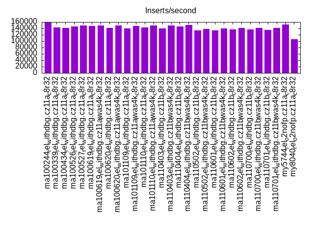
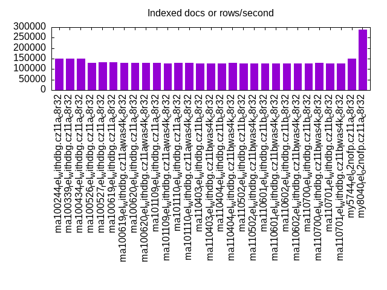
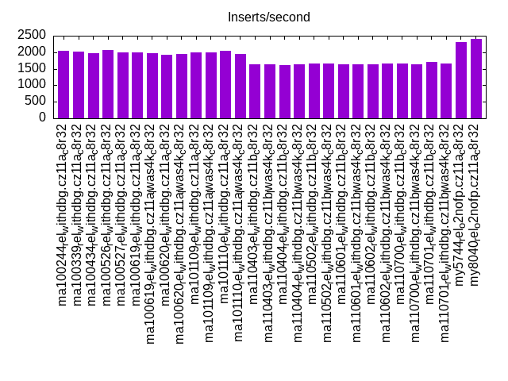
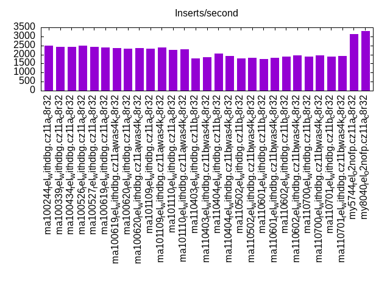
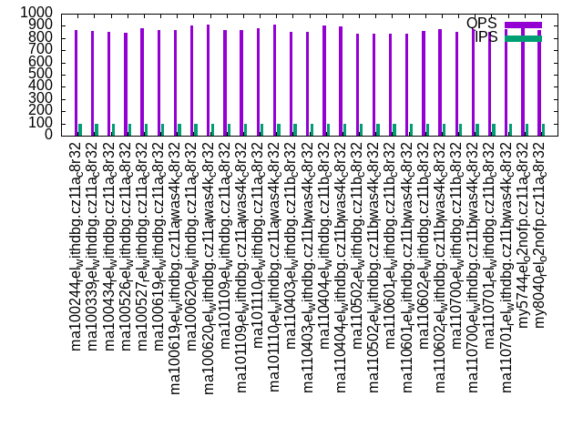
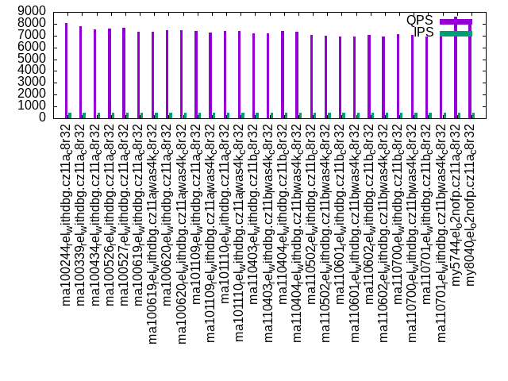
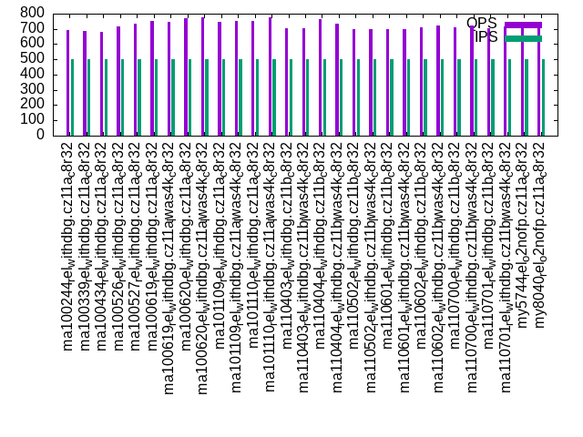
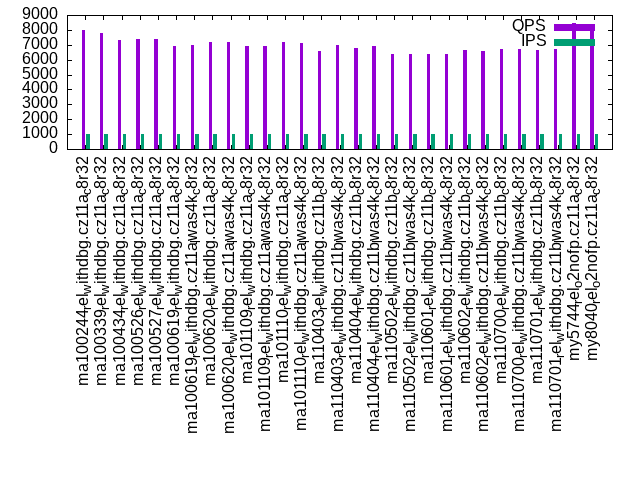
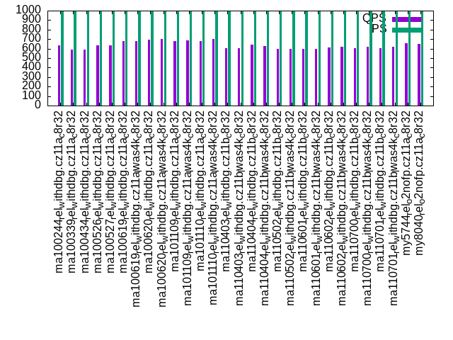

Introduction
This is a report for the insert benchmark with 800M docs and 1 client(s). It is generated by scripts (bash, awk, sed) and Tufte might not be impressed. An overview of the insert benchmark is here and a short update is here. Below, by DBMS, I mean DBMS+version.config. An example is my8020.c10b40 where my means MySQL, 8020 is version 8.0.20 and c10b40 is the name for the configuration file.
The test server has 8 AMD cores, 32G RAM and an NVMe SSD. It is described here as the ASUS PN53. The benchmark was run with 1 client and there were 1 or 3 connections per client (1 for queries or inserts without rate limits, 1+1 for rate limited inserts+deletes). It uses 1 table. It loads 800M rows per table without secondary indexes, creates 3 secondary indexes per table, then inserts 4m+1m rows per table with a delete per insert to avoid growing the table. It then does 6 read+write tests for 1800s each that do queries as fast as possible with 100,100,500,500,1000,1000 inserts/s and the same for deletes/s per client concurrent with the queries. The database is larger than memory. Clients and the DBMS share one server. The per-database configs are in the per-database subdirectories here.
The tested DBMS are:
- ma100244_rel_withdbg.cz11a_c8r32 - MariaDB 10.2.44 with the my.cnf.cz11a_c8r32 config and rel_withdbg build
- ma100339_rel_withdbg.cz11a_c8r32 - MariaDB 10.3.39 with the my.cnf.cz11a_c8r32 config and rel_withdbg build
- ma100434_rel_withdbg.cz11a_c8r32 - MariaDB 10.4.34 with the my.cnf.cz11a_c8r32 config and rel_withdbg build
- ma100526_rel_withdbg.cz11a_c8r32 - MariaDB 10.5.26 with the my.cnf.cz11a_c8r32 config and rel_withdbg build
- ma100527_rel_withdbg.cz11a_c8r32 - MariaDB 10.5.27 with the my.cnf.cz11a_c8r32 config and rel_withdbg build
- ma100619_rel_withdbg.cz11a_c8r32 - MariaDB 10.6.19 with the my.cnf.cz11a_c8r32 config and rel_withdbg build
- ma100619_rel_withdbg.cz11a_lwas4k_c8r32 - MariaDB 10.6.19 with the my.cnf.cz11a_lwas4k_c8r32 config and rel_withdbg build
- ma100620_rel_withdbg.cz11a_c8r32 - MariaDB 10.6.20 with the my.cnf.cz11a_c8r32 config and rel_withdbg build
- ma100620_rel_withdbg.cz11a_lwas4k_c8r32 - MariaDB 10.6.20 with the my.cnf.cz11a_lwas4k_c8r32 config and rel_withdbg build
- ma101109_rel_withdbg.cz11a_c8r32 - MariaDB 10.11.9 with the my.cnf.cz11a_c8r32 config and rel_withdbg build
- ma101109_rel_withdbg.cz11a_lwas4k_c8r32 - MariaDB 10.11.9 with the my.cnf.cz11a_lwas4k_c8r32 config and rel_withdbg build
- ma101110_rel_withdbg.cz11a_c8r32 - MariaDB 10.11.10 with the my.cnf.cz11a_c8r32 config and rel_withdbg build
- ma101110_rel_withdbg.cz11a_lwas4k_c8r32 - MariaDB 10.11.10 with the my.cnf.cz11a_lwas4k_c8r32 config and rel_withdbg build
- ma110403_rel_withdbg.cz11b_c8r32 - MariaDB 11.4.3 with the my.cnf.cz11a_c8r32 config and rel_withdbg build
- ma110403_rel_withdbg.cz11b_lwas4k_c8r32 - MariaDB 11.4.3 with the my.cnf.cz11a_lwas4k_c8r32 config and rel_withdbg build
- ma110404_rel_withdbg.cz11b_c8r32 - MariaDB 11.4.4 with the my.cnf.cz11a_c8r32 config and rel_withdbg build
- ma110404_rel_withdbg.cz11b_lwas4k_c8r32 - MariaDB 11.4.4 with the my.cnf.cz11a_lwas4k_c8r32 config and rel_withdbg build
- ma110502_rel_withdbg.cz11b_c8r32 - MariaDB 11.5.2 with the my.cnf.cz11a_c8r32 config and rel_withdbg build
- ma110502_rel_withdbg.cz11b_lwas4k_c8r32 - MariaDB 11.5.2 with the my.cnf.cz11a_lwas4k_c8r32 config and rel_withdbg build
- ma110601_rel_withdbg.cz11b_c8r32 - MariaDB 11.6.1 with the my.cnf.cz11a_c8r32 config and rel_withdbg build
- ma110601_rel_withdbg.cz11b_lwas4k_c8r32 - MariaDB 11.6.1 with the my.cnf.cz11a_lwas4k_c8r32 config and rel_withdbg build
- ma110602_rel_withdbg.cz11b_c8r32 - MariaDB 11.6.2 with the my.cnf.cz11a_c8r32 config and rel_withdbg build
- ma110602_rel_withdbg.cz11b_lwas4k_c8r32 - MariaDB 11.6.2 with the my.cnf.cz11a_lwas4k_c8r32 config and rel_withdbg build
- ma110700_rel_withdbg.cz11b_c8r32 - MariaDB 11.7.0 with the my.cnf.cz11a_c8r32 config and rel_withdbg build
- ma110700_rel_withdbg.cz11b_lwas4k_c8r32 - MariaDB 11.7.0 with the my.cnf.cz11a_lwas4k_c8r32 config and rel_withdbg build
- ma110701_rel_withdbg.cz11b_c8r32 - MariaDB 11.7.1 with the my.cnf.cz11a_c8r32 config and rel_withdbg build
- ma110701_rel_withdbg.cz11b_lwas4k_c8r32 - MariaDB 11.7.1 with the my.cnf.cz11a_lwas4k_c8r32 config and rel_withdbg build
- my5744_rel_o2nofp.cz11a_c8r32 - MySQL 5.7.44 with the my.cnf.cz11a_c8r32 config and rel_o2nofp build
- my8040_rel_o2nofp.cz11a_c8r32 - MySQL 8.0.40 with the my.cnf.cz11a_c8r32 config and rel_withdbg build
Contents
- Summary
- l.i0: load without secondary indexes
- l.x: create secondary indexes
- l.i1: continue load after secondary indexes created with 50 inserts per transaction
- l.i2: continue load after secondary indexes created with 5 inserts per transaction
- qr100.L1: range queries with 100 insert/s per client
- qp100.L2: point queries with 100 insert/s per client
- qr500.L3: range queries with 500 insert/s per client
- qp500.L4: point queries with 500 insert/s per client
- qr1000.L5: range queries with 1000 insert/s per client
- qp1000.L6: point queries with 1000 insert/s per client
Summary
The numbers are inserts/s for l.i0, l.i1 and l.i2, indexed docs (or rows) /s for l.x and queries/s for qr100, qp100 thru qr1000, qp1000" The values are the average rate over the entire test for inserts (IPS) and queries (QPS). The range of values for IPS and QPS is split into 3 parts: bottom 25%, middle 50%, top 25%. Values in the bottom 25% have a red background, values in the top 25% have a green background and values in the middle have no color. A gray background is used for values that can be ignored because the DBMS did not sustain the target insert rate. Red backgrounds are not used when the minimum value is within 80% of the max value.
| dbms | l.i0 | l.x | l.i1 | l.i2 | qr100 | qp100 | qr500 | qp500 | qr1000 | qp1000 |
|---|---|---|---|---|---|---|---|---|---|---|
| ma100244_rel_withdbg.cz11a_c8r32 | 157698 | 150972 | 2053 | 2481 | 8317 | 865 | 8066 | 691 | 7986 | 638 |
| ma100339_rel_withdbg.cz11a_c8r32 | 143343 | 149421 | 2022 | 2427 | 8176 | 860 | 7815 | 689 | 7777 | 593 |
| ma100434_rel_withdbg.cz11a_c8r32 | 141318 | 150263 | 1973 | 2410 | 7791 | 850 | 7514 | 682 | 7343 | 592 |
| ma100526_rel_withdbg.cz11a_c8r32 | 146199 | 130612 | 2071 | 2481 | 7776 | 844 | 7583 | 716 | 7404 | 633 |
| ma100527_rel_withdbg.cz11a_c8r32 | 149505 | 132079 | 2000 | 2415 | 7960 | 880 | 7632 | 737 | 7405 | 636 |
| ma100619_rel_withdbg.cz11a_c8r32 | 148285 | 131774 | 2005 | 2381 | 7738 | 867 | 7335 | 750 | 6924 | 680 |
| ma100619_rel_withdbg.cz11a_lwas4k_c8r32 | 148478 | 129053 | 1979 | 2353 | 7798 | 865 | 7326 | 749 | 6976 | 681 |
| ma100620_rel_withdbg.cz11a_c8r32 | 140795 | 128721 | 1918 | 2309 | 7880 | 901 | 7476 | 773 | 7220 | 697 |
| ma100620_rel_withdbg.cz11a_lwas4k_c8r32 | 149672 | 130293 | 1939 | 2347 | 7831 | 910 | 7443 | 777 | 7203 | 700 |
| ma101109_rel_withdbg.cz11a_c8r32 | 139811 | 128742 | 2001 | 2315 | 7799 | 867 | 7373 | 749 | 6944 | 681 |
| ma101109_rel_withdbg.cz11a_lwas4k_c8r32 | 147574 | 127653 | 2006 | 2381 | 7713 | 868 | 7237 | 750 | 6906 | 683 |
| ma101110_rel_withdbg.cz11a_c8r32 | 142755 | 128370 | 2036 | 2252 | 7800 | 880 | 7412 | 755 | 7157 | 681 |
| ma101110_rel_withdbg.cz11a_lwas4k_c8r32 | 149309 | 128555 | 1954 | 2304 | 7777 | 907 | 7399 | 774 | 7149 | 700 |
| ma110403_rel_withdbg.cz11b_c8r32 | 140696 | 126123 | 1638 | 1773 | 7766 | 851 | 7202 | 707 | 6578 | 606 |
| ma110403_rel_withdbg.cz11b_lwas4k_c8r32 | 148671 | 126223 | 1639 | 1835 | 7756 | 848 | 7175 | 704 | 6962 | 608 |
| ma110404_rel_withdbg.cz11b_c8r32 | 145959 | 126964 | 1613 | 2066 | 7761 | 906 | 7373 | 765 | 6817 | 645 |
| ma110404_rel_withdbg.cz11b_lwas4k_c8r32 | 151372 | 128700 | 1623 | 1934 | 7790 | 896 | 7330 | 734 | 6919 | 628 |
| ma110502_rel_withdbg.cz11b_c8r32 | 133400 | 127755 | 1649 | 1776 | 7404 | 838 | 7062 | 697 | 6378 | 599 |
| ma110502_rel_withdbg.cz11b_lwas4k_c8r32 | 139155 | 127755 | 1652 | 1802 | 7440 | 838 | 6970 | 697 | 6412 | 598 |
| ma110601_rel_withdbg.cz11b_c8r32 | 133556 | 128267 | 1637 | 1757 | 7435 | 833 | 6920 | 696 | 6393 | 598 |
| ma110601_rel_withdbg.cz11b_lwas4k_c8r32 | 139616 | 128041 | 1644 | 1828 | 7470 | 838 | 6912 | 697 | 6405 | 598 |
| ma110602_rel_withdbg.cz11b_c8r32 | 137457 | 127085 | 1641 | 1894 | 7436 | 860 | 7052 | 712 | 6654 | 612 |
| ma110602_rel_withdbg.cz11b_lwas4k_c8r32 | 141293 | 127267 | 1647 | 1946 | 7309 | 870 | 6921 | 722 | 6556 | 618 |
| ma110700_rel_withdbg.cz11b_c8r32 | 136333 | 128267 | 1649 | 1901 | 7536 | 853 | 7115 | 711 | 6744 | 608 |
| ma110700_rel_withdbg.cz11b_lwas4k_c8r32 | 142172 | 128411 | 1641 | 1957 | 7529 | 876 | 7054 | 724 | 6708 | 622 |
| ma110701_rel_withdbg.cz11b_c8r32 | 135158 | 126442 | 1695 | 1898 | 7435 | 853 | 6941 | 705 | 6621 | 607 |
| ma110701_rel_withdbg.cz11b_lwas4k_c8r32 | 141093 | 126843 | 1649 | 1934 | 7454 | 870 | 6965 | 719 | 6700 | 617 |
| my5744_rel_o2nofp.cz11a_c8r32 | 151572 | 149841 | 2300 | 3135 | 8720 | 897 | 8568 | 708 | 8470 | 653 |
| my8040_rel_o2nofp.cz11a_c8r32 | 105876 | 287047 | 2398 | 3311 | 8149 | 868 | 8052 | 732 | 7928 | 652 |
This table has relative throughput, throughput for the DBMS relative to the DBMS in the first line, using the absolute throughput from the previous table. Values less than 0.95 have a yellow background. Values greater than 1.05 have a blue background.
| dbms | l.i0 | l.x | l.i1 | l.i2 | qr100 | qp100 | qr500 | qp500 | qr1000 | qp1000 |
|---|---|---|---|---|---|---|---|---|---|---|
| ma100244_rel_withdbg.cz11a_c8r32 | 1.00 | 1.00 | 1.00 | 1.00 | 1.00 | 1.00 | 1.00 | 1.00 | 1.00 | 1.00 |
| ma100339_rel_withdbg.cz11a_c8r32 | 0.91 | 0.99 | 0.98 | 0.98 | 0.98 | 0.99 | 0.97 | 1.00 | 0.97 | 0.93 |
| ma100434_rel_withdbg.cz11a_c8r32 | 0.90 | 1.00 | 0.96 | 0.97 | 0.94 | 0.98 | 0.93 | 0.99 | 0.92 | 0.93 |
| ma100526_rel_withdbg.cz11a_c8r32 | 0.93 | 0.87 | 1.01 | 1.00 | 0.93 | 0.98 | 0.94 | 1.04 | 0.93 | 0.99 |
| ma100527_rel_withdbg.cz11a_c8r32 | 0.95 | 0.87 | 0.97 | 0.97 | 0.96 | 1.02 | 0.95 | 1.07 | 0.93 | 1.00 |
| ma100619_rel_withdbg.cz11a_c8r32 | 0.94 | 0.87 | 0.98 | 0.96 | 0.93 | 1.00 | 0.91 | 1.09 | 0.87 | 1.07 |
| ma100619_rel_withdbg.cz11a_lwas4k_c8r32 | 0.94 | 0.85 | 0.96 | 0.95 | 0.94 | 1.00 | 0.91 | 1.08 | 0.87 | 1.07 |
| ma100620_rel_withdbg.cz11a_c8r32 | 0.89 | 0.85 | 0.93 | 0.93 | 0.95 | 1.04 | 0.93 | 1.12 | 0.90 | 1.09 |
| ma100620_rel_withdbg.cz11a_lwas4k_c8r32 | 0.95 | 0.86 | 0.94 | 0.95 | 0.94 | 1.05 | 0.92 | 1.12 | 0.90 | 1.10 |
| ma101109_rel_withdbg.cz11a_c8r32 | 0.89 | 0.85 | 0.97 | 0.93 | 0.94 | 1.00 | 0.91 | 1.08 | 0.87 | 1.07 |
| ma101109_rel_withdbg.cz11a_lwas4k_c8r32 | 0.94 | 0.85 | 0.98 | 0.96 | 0.93 | 1.00 | 0.90 | 1.09 | 0.86 | 1.07 |
| ma101110_rel_withdbg.cz11a_c8r32 | 0.91 | 0.85 | 0.99 | 0.91 | 0.94 | 1.02 | 0.92 | 1.09 | 0.90 | 1.07 |
| ma101110_rel_withdbg.cz11a_lwas4k_c8r32 | 0.95 | 0.85 | 0.95 | 0.93 | 0.94 | 1.05 | 0.92 | 1.12 | 0.90 | 1.10 |
| ma110403_rel_withdbg.cz11b_c8r32 | 0.89 | 0.84 | 0.80 | 0.71 | 0.93 | 0.98 | 0.89 | 1.02 | 0.82 | 0.95 |
| ma110403_rel_withdbg.cz11b_lwas4k_c8r32 | 0.94 | 0.84 | 0.80 | 0.74 | 0.93 | 0.98 | 0.89 | 1.02 | 0.87 | 0.95 |
| ma110404_rel_withdbg.cz11b_c8r32 | 0.93 | 0.84 | 0.79 | 0.83 | 0.93 | 1.05 | 0.91 | 1.11 | 0.85 | 1.01 |
| ma110404_rel_withdbg.cz11b_lwas4k_c8r32 | 0.96 | 0.85 | 0.79 | 0.78 | 0.94 | 1.04 | 0.91 | 1.06 | 0.87 | 0.98 |
| ma110502_rel_withdbg.cz11b_c8r32 | 0.85 | 0.85 | 0.80 | 0.72 | 0.89 | 0.97 | 0.88 | 1.01 | 0.80 | 0.94 |
| ma110502_rel_withdbg.cz11b_lwas4k_c8r32 | 0.88 | 0.85 | 0.80 | 0.73 | 0.89 | 0.97 | 0.86 | 1.01 | 0.80 | 0.94 |
| ma110601_rel_withdbg.cz11b_c8r32 | 0.85 | 0.85 | 0.80 | 0.71 | 0.89 | 0.96 | 0.86 | 1.01 | 0.80 | 0.94 |
| ma110601_rel_withdbg.cz11b_lwas4k_c8r32 | 0.89 | 0.85 | 0.80 | 0.74 | 0.90 | 0.97 | 0.86 | 1.01 | 0.80 | 0.94 |
| ma110602_rel_withdbg.cz11b_c8r32 | 0.87 | 0.84 | 0.80 | 0.76 | 0.89 | 0.99 | 0.87 | 1.03 | 0.83 | 0.96 |
| ma110602_rel_withdbg.cz11b_lwas4k_c8r32 | 0.90 | 0.84 | 0.80 | 0.78 | 0.88 | 1.01 | 0.86 | 1.04 | 0.82 | 0.97 |
| ma110700_rel_withdbg.cz11b_c8r32 | 0.86 | 0.85 | 0.80 | 0.77 | 0.91 | 0.99 | 0.88 | 1.03 | 0.84 | 0.95 |
| ma110700_rel_withdbg.cz11b_lwas4k_c8r32 | 0.90 | 0.85 | 0.80 | 0.79 | 0.91 | 1.01 | 0.87 | 1.05 | 0.84 | 0.97 |
| ma110701_rel_withdbg.cz11b_c8r32 | 0.86 | 0.84 | 0.83 | 0.77 | 0.89 | 0.99 | 0.86 | 1.02 | 0.83 | 0.95 |
| ma110701_rel_withdbg.cz11b_lwas4k_c8r32 | 0.89 | 0.84 | 0.80 | 0.78 | 0.90 | 1.01 | 0.86 | 1.04 | 0.84 | 0.97 |
| my5744_rel_o2nofp.cz11a_c8r32 | 0.96 | 0.99 | 1.12 | 1.26 | 1.05 | 1.04 | 1.06 | 1.02 | 1.06 | 1.02 |
| my8040_rel_o2nofp.cz11a_c8r32 | 0.67 | 1.90 | 1.17 | 1.33 | 0.98 | 1.00 | 1.00 | 1.06 | 0.99 | 1.02 |
This lists the average rate of inserts/s for the tests that do inserts concurrent with queries. For such tests the query rate is listed in the table above. The read+write tests are setup so that the insert rate should match the target rate every second. Cells that are not at least 95% of the target have a red background to indicate a failure to satisfy the target.
| dbms | qr100.L1 | qp100.L2 | qr500.L3 | qp500.L4 | qr1000.L5 | qp1000.L6 |
|---|---|---|---|---|---|---|
| ma100244_rel_withdbg.cz11a_c8r32 | 100 | 100 | 499 | 499 | 999 | 999 |
| ma100339_rel_withdbg.cz11a_c8r32 | 100 | 100 | 499 | 499 | 999 | 999 |
| ma100434_rel_withdbg.cz11a_c8r32 | 100 | 100 | 499 | 499 | 999 | 999 |
| ma100526_rel_withdbg.cz11a_c8r32 | 100 | 100 | 499 | 499 | 999 | 999 |
| ma100527_rel_withdbg.cz11a_c8r32 | 100 | 100 | 499 | 499 | 999 | 999 |
| ma100619_rel_withdbg.cz11a_c8r32 | 100 | 100 | 499 | 499 | 999 | 999 |
| ma100619_rel_withdbg.cz11a_lwas4k_c8r32 | 100 | 100 | 499 | 499 | 999 | 999 |
| ma100620_rel_withdbg.cz11a_c8r32 | 100 | 100 | 499 | 499 | 999 | 999 |
| ma100620_rel_withdbg.cz11a_lwas4k_c8r32 | 100 | 100 | 499 | 499 | 999 | 999 |
| ma101109_rel_withdbg.cz11a_c8r32 | 100 | 100 | 499 | 499 | 999 | 999 |
| ma101109_rel_withdbg.cz11a_lwas4k_c8r32 | 100 | 100 | 499 | 499 | 999 | 999 |
| ma101110_rel_withdbg.cz11a_c8r32 | 100 | 100 | 499 | 499 | 999 | 999 |
| ma101110_rel_withdbg.cz11a_lwas4k_c8r32 | 100 | 100 | 499 | 499 | 999 | 999 |
| ma110403_rel_withdbg.cz11b_c8r32 | 100 | 100 | 499 | 499 | 999 | 999 |
| ma110403_rel_withdbg.cz11b_lwas4k_c8r32 | 100 | 100 | 499 | 499 | 999 | 999 |
| ma110404_rel_withdbg.cz11b_c8r32 | 100 | 100 | 499 | 499 | 999 | 999 |
| ma110404_rel_withdbg.cz11b_lwas4k_c8r32 | 100 | 100 | 499 | 499 | 999 | 997 |
| ma110502_rel_withdbg.cz11b_c8r32 | 100 | 100 | 499 | 499 | 999 | 999 |
| ma110502_rel_withdbg.cz11b_lwas4k_c8r32 | 100 | 100 | 499 | 499 | 999 | 999 |
| ma110601_rel_withdbg.cz11b_c8r32 | 100 | 100 | 499 | 499 | 999 | 999 |
| ma110601_rel_withdbg.cz11b_lwas4k_c8r32 | 100 | 100 | 499 | 499 | 999 | 999 |
| ma110602_rel_withdbg.cz11b_c8r32 | 100 | 100 | 499 | 499 | 999 | 999 |
| ma110602_rel_withdbg.cz11b_lwas4k_c8r32 | 100 | 100 | 499 | 499 | 999 | 999 |
| ma110700_rel_withdbg.cz11b_c8r32 | 100 | 100 | 499 | 499 | 999 | 998 |
| ma110700_rel_withdbg.cz11b_lwas4k_c8r32 | 100 | 100 | 499 | 499 | 999 | 999 |
| ma110701_rel_withdbg.cz11b_c8r32 | 100 | 100 | 499 | 499 | 999 | 999 |
| ma110701_rel_withdbg.cz11b_lwas4k_c8r32 | 100 | 100 | 499 | 499 | 999 | 999 |
| my5744_rel_o2nofp.cz11a_c8r32 | 100 | 100 | 499 | 499 | 999 | 999 |
| my8040_rel_o2nofp.cz11a_c8r32 | 100 | 100 | 499 | 499 | 999 | 999 |
| target | 100 | 100 | 500 | 500 | 1000 | 1000 |
l.i0
l.i0: load without secondary indexes. Graphs for performance per 1-second interval are here.
Average throughput:
Insert response time histogram: each cell has the percentage of responses that take <= the time in the header and max is the max response time in seconds. For the max column values in the top 25% of the range have a red background and in the bottom 25% of the range have a green background. The red background is not used when the min value is within 80% of the max value.
| dbms | 256us | 1ms | 4ms | 16ms | 64ms | 256ms | 1s | 4s | 16s | gt | max |
|---|---|---|---|---|---|---|---|---|---|---|---|
| ma100244_rel_withdbg.cz11a_c8r32 | 99.553 | 0.168 | 0.109 | 0.165 | 0.004 | nonzero | 0.279 | ||||
| ma100339_rel_withdbg.cz11a_c8r32 | 99.386 | 0.319 | 0.125 | 0.167 | 0.004 | nonzero | 0.273 | ||||
| ma100434_rel_withdbg.cz11a_c8r32 | 99.381 | 0.327 | 0.123 | 0.165 | 0.004 | nonzero | 0.266 | ||||
| ma100526_rel_withdbg.cz11a_c8r32 | 99.544 | 0.167 | 0.100 | 0.185 | 0.004 | nonzero | 0.264 | ||||
| ma100527_rel_withdbg.cz11a_c8r32 | 99.592 | 0.133 | 0.097 | 0.173 | 0.004 | nonzero | 0.278 | ||||
| ma100619_rel_withdbg.cz11a_c8r32 | 99.597 | 0.217 | 0.035 | 0.147 | 0.005 | nonzero | 0.278 | ||||
| ma100619_rel_withdbg.cz11a_lwas4k_c8r32 | 99.601 | 0.213 | 0.035 | 0.147 | 0.005 | nonzero | 0.264 | ||||
| ma100620_rel_withdbg.cz11a_c8r32 | 99.292 | 0.501 | 0.048 | 0.145 | 0.014 | 0.001 | 0.471 | ||||
| ma100620_rel_withdbg.cz11a_lwas4k_c8r32 | 99.699 | 0.115 | 0.038 | 0.144 | 0.004 | nonzero | 0.280 | ||||
| ma101109_rel_withdbg.cz11a_c8r32 | 99.225 | 0.583 | 0.135 | 0.053 | 0.005 | 0.254 | |||||
| ma101109_rel_withdbg.cz11a_lwas4k_c8r32 | 99.584 | 0.225 | 0.039 | 0.147 | 0.005 | 0.251 | |||||
| ma101110_rel_withdbg.cz11a_c8r32 | 99.352 | 0.447 | 0.124 | 0.073 | 0.004 | nonzero | 0.333 | ||||
| ma101110_rel_withdbg.cz11a_lwas4k_c8r32 | 99.678 | 0.129 | 0.046 | 0.143 | 0.004 | 0.001 | 0.306 | ||||
| ma110403_rel_withdbg.cz11b_c8r32 | 99.216 | 0.591 | 0.133 | 0.056 | 0.005 | nonzero | 0.285 | ||||
| ma110403_rel_withdbg.cz11b_lwas4k_c8r32 | 99.589 | 0.218 | 0.040 | 0.148 | 0.005 | nonzero | 0.300 | ||||
| ma110404_rel_withdbg.cz11b_c8r32 | 99.210 | 0.590 | 0.144 | 0.051 | 0.005 | nonzero | 0.276 | ||||
| ma110404_rel_withdbg.cz11b_lwas4k_c8r32 | 99.687 | 0.120 | 0.042 | 0.145 | 0.005 | nonzero | 0.324 | ||||
| ma110502_rel_withdbg.cz11b_c8r32 | 99.225 | 0.581 | 0.134 | 0.055 | 0.005 | 0.250 | |||||
| ma110502_rel_withdbg.cz11b_lwas4k_c8r32 | 99.587 | 0.221 | 0.042 | 0.146 | 0.005 | nonzero | 0.287 | ||||
| ma110601_rel_withdbg.cz11b_c8r32 | 99.226 | 0.580 | 0.134 | 0.055 | 0.005 | nonzero | 0.262 | ||||
| ma110601_rel_withdbg.cz11b_lwas4k_c8r32 | 99.583 | 0.225 | 0.042 | 0.146 | 0.005 | nonzero | 0.271 | ||||
| ma110602_rel_withdbg.cz11b_c8r32 | 99.415 | 0.386 | 0.139 | 0.055 | 0.005 | nonzero | 0.274 | ||||
| ma110602_rel_withdbg.cz11b_lwas4k_c8r32 | 99.679 | 0.129 | 0.046 | 0.141 | 0.004 | nonzero | 0.339 | ||||
| ma110700_rel_withdbg.cz11b_c8r32 | 99.333 | 0.468 | 0.123 | 0.072 | 0.004 | nonzero | 0.357 | ||||
| ma110700_rel_withdbg.cz11b_lwas4k_c8r32 | 99.675 | 0.132 | 0.046 | 0.142 | 0.004 | nonzero | 0.308 | ||||
| ma110701_rel_withdbg.cz11b_c8r32 | 99.322 | 0.478 | 0.131 | 0.064 | 0.005 | nonzero | 0.294 | ||||
| ma110701_rel_withdbg.cz11b_lwas4k_c8r32 | 99.682 | 0.126 | 0.045 | 0.143 | 0.004 | nonzero | 0.345 | ||||
| my5744_rel_o2nofp.cz11a_c8r32 | 99.682 | 0.144 | 0.044 | 0.130 | 0.001 | 0.213 | |||||
| my8040_rel_o2nofp.cz11a_c8r32 | 99.525 | 0.288 | 0.057 | 0.128 | 0.002 | nonzero | 0.436 |
Performance metrics for the DBMS listed above. Some are normalized by throughput, others are not. Legend for results is here.
ips qps rps rmbps wps wmbps rpq rkbpq wpi wkbpi csps cpups cspq cpupq dbgb1 dbgb2 rss maxop p50 p99 tag 157698 0 0 0.0 1173.6 60.5 0.000 0.000 0.007 0.393 18220 20.5 0.116 10 52.6 83.4 24.1 0.279 159091 126561 ma100244_rel_withdbg.cz11a_c8r32 143343 0 0 0.0 1202.4 61.5 0.000 0.000 0.008 0.439 47574 27.8 0.332 16 52.6 83.4 24.1 0.273 144445 114478 ma100339_rel_withdbg.cz11a_c8r32 141318 0 0 0.0 1183.7 60.3 0.000 0.000 0.008 0.437 47175 27.2 0.334 15 52.6 83.4 NA 0.266 142448 113911 ma100434_rel_withdbg.cz11a_c8r32 146199 0 0 0.0 1231.9 48.9 0.000 0.000 0.008 0.342 65330 24.4 0.447 13 52.6 83.4 23.5 0.264 147641 117508 ma100526_rel_withdbg.cz11a_c8r32 149505 0 0 0.0 1252.6 49.8 0.000 0.000 0.008 0.341 65268 25.0 0.437 13 52.6 83.4 23.5 0.278 151149 116282 ma100527_rel_withdbg.cz11a_c8r32 148285 0 0 0.0 896.8 41.8 0.000 0.000 0.006 0.289 19481 22.8 0.131 12 52.6 83.4 23.4 0.278 149536 119769 ma100619_rel_withdbg.cz11a_c8r32 148478 0 0 0.0 898.8 41.9 0.000 0.000 0.006 0.289 19495 22.9 0.131 12 52.6 83.4 23.4 0.264 149638 119169 ma100619_rel_withdbg.cz11a_lwas4k_c8r32 140795 0 0 0.0 853.4 39.6 0.000 0.000 0.006 0.288 17917 21.7 0.127 12 52.6 83.4 22.8 0.471 142558 95704 ma100620_rel_withdbg.cz11a_c8r32 149672 0 0 0.0 906.8 42.1 0.000 0.000 0.006 0.288 17459 22.7 0.117 12 52.6 83.4 23.4 0.280 151149 117970 ma100620_rel_withdbg.cz11a_lwas4k_c8r32 139811 0 892 3.5 858.0 40.6 0.006 0.026 0.006 0.297 20369 22.0 0.146 13 52.6 83.4 23.4 0.254 137705 112876 ma101109_rel_withdbg.cz11a_c8r32 147574 0 0 0.0 906.2 42.9 0.000 0.000 0.006 0.298 19433 23.0 0.132 12 52.6 83.4 23.4 0.251 148795 119473 ma101109_rel_withdbg.cz11a_lwas4k_c8r32 142755 0 891 3.5 876.8 41.3 0.006 0.025 0.006 0.296 18354 21.9 0.129 12 52.6 83.4 23.4 0.333 142458 108492 ma101110_rel_withdbg.cz11a_c8r32 149309 0 0 0.0 917.3 43.2 0.000 0.000 0.006 0.296 17365 23.0 0.116 12 52.6 83.4 23.4 0.306 151134 114376 ma101110_rel_withdbg.cz11a_lwas4k_c8r32 140696 0 898 3.5 870.6 40.9 0.006 0.026 0.006 0.297 20937 22.1 0.149 13 52.6 83.4 23.4 0.285 138750 113577 ma110403_rel_withdbg.cz11b_c8r32 148671 0 0 0.0 920.5 43.2 0.000 0.000 0.006 0.298 19928 23.4 0.134 13 52.6 83.4 23.4 0.300 150041 121867 ma110403_rel_withdbg.cz11b_lwas4k_c8r32 145959 0 909 3.5 904.9 42.3 0.006 0.025 0.006 0.297 19329 22.2 0.132 12 52.6 83.4 23.4 0.276 145941 101898 ma110404_rel_withdbg.cz11b_c8r32 151372 0 0 0.0 937.0 43.8 0.000 0.000 0.006 0.296 18083 22.8 0.119 12 52.6 83.4 23.4 0.324 153247 117469 ma110404_rel_withdbg.cz11b_lwas4k_c8r32 133400 0 854 3.3 825.9 38.7 0.006 0.026 0.006 0.297 19928 21.8 0.149 13 52.6 83.4 23.4 0.250 131453 107982 ma110502_rel_withdbg.cz11b_c8r32 139155 0 0 0.0 861.6 40.4 0.000 0.000 0.006 0.297 18792 22.7 0.135 13 52.6 83.4 23.4 0.287 140251 112679 ma110502_rel_withdbg.cz11b_lwas4k_c8r32 133556 0 857 3.3 826.8 38.8 0.006 0.026 0.006 0.297 19977 21.7 0.150 13 52.6 83.4 23.4 0.262 131655 107784 ma110601_rel_withdbg.cz11b_c8r32 139616 0 0 0.0 864.5 40.6 0.000 0.000 0.006 0.298 18836 22.6 0.135 13 52.6 83.4 23.4 0.271 140748 112577 ma110601_rel_withdbg.cz11b_lwas4k_c8r32 137457 0 856 3.3 851.4 39.8 0.006 0.025 0.006 0.297 18240 22.0 0.133 13 52.6 83.4 23.4 0.274 136804 107083 ma110602_rel_withdbg.cz11b_c8r32 141293 0 0 0.0 875.3 40.9 0.000 0.000 0.006 0.296 16943 22.5 0.120 13 52.6 83.4 23.4 0.339 142997 109802 ma110602_rel_withdbg.cz11b_lwas4k_c8r32 136333 0 858 3.4 844.3 39.5 0.006 0.025 0.006 0.296 18064 21.6 0.132 13 52.6 83.4 23.4 0.357 135572 104785 ma110700_rel_withdbg.cz11b_c8r32 142172 0 0 0.0 880.7 41.2 0.000 0.000 0.006 0.296 17287 22.5 0.122 13 52.6 83.4 23.4 0.308 143845 110691 ma110700_rel_withdbg.cz11b_lwas4k_c8r32 135158 0 851 3.3 837.5 39.1 0.006 0.025 0.006 0.296 17915 21.6 0.133 13 52.6 83.4 23.4 0.294 134665 104285 ma110701_rel_withdbg.cz11b_c8r32 141093 0 0 0.0 874.1 40.9 0.000 0.000 0.006 0.297 16947 22.6 0.120 13 52.6 83.4 23.4 0.345 142744 109679 ma110701_rel_withdbg.cz11b_lwas4k_c8r32 151572 0 0 0.0 1005.7 54.6 0.000 0.000 0.007 0.369 15183 20.9 0.100 11 52.6 83.1 25.0 0.213 151764 140846 my5744_rel_o2nofp.cz11a_c8r32 105876 0 0 0.0 775.9 39.9 0.000 0.000 0.007 0.386 12607 17.9 0.119 14 52.4 83.0 25.2 0.436 106002 93706 my8040_rel_o2nofp.cz11a_c8r32
l.x
l.x: create secondary indexes.
Average throughput:
Performance metrics for the DBMS listed above. Some are normalized by throughput, others are not. Legend for results is here.
ips qps rps rmbps wps wmbps rpq rkbpq wpi wkbpi csps cpups cspq cpupq dbgb1 dbgb2 rss maxop p50 p99 tag 150972 0 1559 143.9 2035.8 179.2 0.010 0.976 0.013 1.216 9339 12.1 0.062 6 121.1 152.0 24.3 0.001 NA NA ma100244_rel_withdbg.cz11a_c8r32 149421 0 1588 148.2 1991.8 176.8 0.011 1.016 0.013 1.211 9098 12.0 0.061 6 121.1 152.0 24.2 0.002 NA NA ma100339_rel_withdbg.cz11a_c8r32 150263 0 1600 149.1 2018.9 178.2 0.011 1.016 0.013 1.214 9100 11.9 0.061 6 119.9 150.7 NA 0.001 NA NA ma100434_rel_withdbg.cz11a_c8r32 130612 0 1390 129.5 1694.7 146.7 0.011 1.015 0.013 1.150 5909 11.8 0.045 7 119.9 150.7 23.7 0.002 NA NA ma100526_rel_withdbg.cz11a_c8r32 132079 0 1406 130.9 1725.5 148.5 0.011 1.015 0.013 1.151 4786 11.5 0.036 7 119.9 150.7 23.7 0.001 NA NA ma100527_rel_withdbg.cz11a_c8r32 131774 0 1401 130.6 1732.6 148.3 0.011 1.015 0.013 1.152 5675 11.7 0.043 7 111.5 142.3 23.4 0.001 NA NA ma100619_rel_withdbg.cz11a_c8r32 129053 0 1315 120.8 1628.2 144.2 0.010 0.959 0.013 1.144 5600 11.5 0.043 7 111.5 142.3 23.4 0.001 NA NA ma100619_rel_withdbg.cz11a_lwas4k_c8r32 128721 0 1306 119.6 1694.8 144.9 0.010 0.951 0.013 1.153 4701 11.3 0.037 7 111.5 142.3 23.1 0.001 NA NA ma100620_rel_withdbg.cz11a_c8r32 130293 0 1386 129.1 1716.1 146.7 0.011 1.015 0.013 1.153 4350 11.4 0.033 7 111.5 142.3 23.4 0.008 NA NA ma100620_rel_withdbg.cz11a_lwas4k_c8r32 128742 0 1370 127.6 1694.7 144.6 0.011 1.015 0.013 1.150 5598 11.6 0.043 7 111.5 142.3 23.5 0.002 NA NA ma101109_rel_withdbg.cz11a_c8r32 127653 0 1287 117.8 1680.1 143.3 0.010 0.945 0.013 1.150 5773 11.5 0.045 7 111.5 142.3 23.4 0.001 NA NA ma101109_rel_withdbg.cz11a_lwas4k_c8r32 128370 0 1367 127.2 1690.4 144.2 0.011 1.015 0.013 1.150 4302 11.4 0.034 7 111.5 142.3 23.5 0.002 NA NA ma101110_rel_withdbg.cz11a_c8r32 128555 0 1368 127.4 1692.2 144.4 0.011 1.015 0.013 1.150 4281 11.3 0.033 7 111.5 142.3 23.5 0.001 NA NA ma101110_rel_withdbg.cz11a_lwas4k_c8r32 126123 0 1343 125.0 1660.3 141.6 0.011 1.015 0.013 1.150 5496 11.7 0.044 7 111.5 142.3 23.5 0.002 NA NA ma110403_rel_withdbg.cz11b_c8r32 126223 0 1342 125.1 1661.7 141.7 0.011 1.015 0.013 1.150 5492 11.7 0.044 7 111.5 142.3 23.5 0.001 NA NA ma110403_rel_withdbg.cz11b_lwas4k_c8r32 126964 0 1289 117.6 1671.9 142.6 0.010 0.949 0.013 1.150 4539 11.4 0.036 7 111.5 142.3 23.4 0.002 NA NA ma110404_rel_withdbg.cz11b_c8r32 128700 0 1370 127.5 1694.6 144.5 0.011 1.015 0.013 1.150 4309 11.3 0.033 7 111.5 142.3 23.5 0.001 NA NA ma110404_rel_withdbg.cz11b_lwas4k_c8r32 127755 0 1360 126.6 1681.1 143.4 0.011 1.015 0.013 1.150 5561 11.6 0.044 7 111.5 142.3 23.5 0.004 NA NA ma110502_rel_withdbg.cz11b_c8r32 127755 0 1358 126.6 1681.1 143.4 0.011 1.015 0.013 1.150 5556 11.6 0.043 7 111.5 142.3 23.5 0.003 NA NA ma110502_rel_withdbg.cz11b_lwas4k_c8r32 128267 0 1365 127.1 1688.0 144.0 0.011 1.015 0.013 1.150 5584 11.7 0.044 7 111.5 142.3 23.5 0.004 NA NA ma110601_rel_withdbg.cz11b_c8r32 128041 0 1361 126.9 1685.4 143.8 0.011 1.015 0.013 1.150 5578 11.6 0.044 7 111.5 142.3 23.5 0.002 NA NA ma110601_rel_withdbg.cz11b_lwas4k_c8r32 127085 0 1352 125.9 1674.4 142.7 0.011 1.015 0.013 1.150 4261 11.3 0.034 7 111.5 142.3 23.5 0.004 NA NA ma110602_rel_withdbg.cz11b_c8r32 127267 0 1353 126.1 1675.6 142.9 0.011 1.015 0.013 1.150 4266 11.3 0.034 7 111.5 142.3 23.5 0.002 NA NA ma110602_rel_withdbg.cz11b_lwas4k_c8r32 128267 0 1367 127.1 1689.2 144.1 0.011 1.015 0.013 1.150 4283 11.3 0.033 7 111.5 142.3 23.5 0.002 NA NA ma110700_rel_withdbg.cz11b_c8r32 128411 0 1366 127.2 1690.9 144.2 0.011 1.015 0.013 1.150 4284 11.3 0.033 7 111.5 142.3 23.5 0.002 NA NA ma110700_rel_withdbg.cz11b_lwas4k_c8r32 126442 0 1346 125.3 1665.9 142.0 0.011 1.015 0.013 1.150 4236 11.3 0.034 7 111.5 142.3 23.5 0.003 NA NA ma110701_rel_withdbg.cz11b_c8r32 126843 0 1349 125.7 1671.5 142.5 0.011 1.015 0.013 1.150 4244 11.3 0.033 7 111.5 142.3 23.5 0.002 NA NA ma110701_rel_withdbg.cz11b_lwas4k_c8r32 149841 0 1582 147.2 2262.4 178.6 0.011 1.006 0.015 1.221 8843 11.2 0.059 6 121.1 151.7 25.2 0.001 NA NA my5744_rel_o2nofp.cz11a_c8r32 287047 0 3765 365.7 6033.9 411.3 0.013 1.305 0.021 1.467 20338 39.8 0.071 11 120.7 151.3 25.3 0.002 NA NA my8040_rel_o2nofp.cz11a_c8r32
l.i1
l.i1: continue load after secondary indexes created with 50 inserts per transaction. Graphs for performance per 1-second interval are here.
Average throughput:
Insert response time histogram: each cell has the percentage of responses that take <= the time in the header and max is the max response time in seconds. For the max column values in the top 25% of the range have a red background and in the bottom 25% of the range have a green background. The red background is not used when the min value is within 80% of the max value.
| dbms | 256us | 1ms | 4ms | 16ms | 64ms | 256ms | 1s | 4s | 16s | gt | max |
|---|---|---|---|---|---|---|---|---|---|---|---|
| ma100244_rel_withdbg.cz11a_c8r32 | 26.984 | 69.224 | 3.792 | 0.206 | |||||||
| ma100339_rel_withdbg.cz11a_c8r32 | 21.029 | 74.790 | 4.181 | 0.158 | |||||||
| ma100434_rel_withdbg.cz11a_c8r32 | 19.318 | 75.299 | 5.382 | 0.001 | 1.938 | ||||||
| ma100526_rel_withdbg.cz11a_c8r32 | 16.902 | 79.683 | 3.414 | 0.001 | 2.607 | ||||||
| ma100527_rel_withdbg.cz11a_c8r32 | 16.276 | 80.219 | 3.504 | 0.001 | 4.261 | ||||||
| ma100619_rel_withdbg.cz11a_c8r32 | 11.840 | 85.065 | 3.094 | 0.001 | 3.151 | ||||||
| ma100619_rel_withdbg.cz11a_lwas4k_c8r32 | 10.989 | 85.585 | 3.419 | 0.006 | 0.001 | 3.616 | |||||
| ma100620_rel_withdbg.cz11a_c8r32 | 12.920 | 82.539 | 4.534 | 0.006 | 0.001 | 2.420 | |||||
| ma100620_rel_withdbg.cz11a_lwas4k_c8r32 | 13.061 | 82.617 | 4.320 | 0.001 | 3.896 | ||||||
| ma101109_rel_withdbg.cz11a_c8r32 | 10.760 | 86.345 | 2.894 | 0.001 | 3.119 | ||||||
| ma101109_rel_withdbg.cz11a_lwas4k_c8r32 | 11.551 | 85.299 | 3.149 | 0.001 | 3.252 | ||||||
| ma101110_rel_withdbg.cz11a_c8r32 | 13.229 | 83.447 | 3.322 | 0.001 | 2.370 | ||||||
| ma101110_rel_withdbg.cz11a_lwas4k_c8r32 | 12.918 | 83.070 | 4.004 | 0.007 | 0.001 | 2.683 | |||||
| ma110403_rel_withdbg.cz11b_c8r32 | 6.907 | 90.998 | 2.075 | 0.019 | 0.001 | 3.123 | |||||
| ma110403_rel_withdbg.cz11b_lwas4k_c8r32 | 7.425 | 90.396 | 2.160 | 0.017 | 0.001 | 3.169 | |||||
| ma110404_rel_withdbg.cz11b_c8r32 | 12.137 | 81.578 | 6.264 | 0.020 | 0.001 | 3.340 | |||||
| ma110404_rel_withdbg.cz11b_lwas4k_c8r32 | 8.688 | 88.569 | 2.725 | 0.017 | 0.001 | 3.821 | |||||
| ma110502_rel_withdbg.cz11b_c8r32 | 7.219 | 90.645 | 2.129 | 0.006 | 0.001 | 3.107 | |||||
| ma110502_rel_withdbg.cz11b_lwas4k_c8r32 | 7.746 | 90.140 | 2.109 | 0.004 | 0.001 | 3.110 | |||||
| ma110601_rel_withdbg.cz11b_c8r32 | 6.776 | 91.020 | 2.198 | 0.005 | 0.001 | 3.169 | |||||
| ma110601_rel_withdbg.cz11b_lwas4k_c8r32 | 7.309 | 90.564 | 2.110 | 0.016 | 0.001 | 3.141 | |||||
| ma110602_rel_withdbg.cz11b_c8r32 | 7.981 | 89.748 | 2.266 | 0.004 | 0.001 | 3.651 | |||||
| ma110602_rel_withdbg.cz11b_lwas4k_c8r32 | 8.635 | 89.199 | 2.150 | 0.015 | 0.001 | 2.640 | |||||
| ma110700_rel_withdbg.cz11b_c8r32 | 8.697 | 89.078 | 2.218 | 0.006 | 0.001 | 3.002 | |||||
| ma110700_rel_withdbg.cz11b_lwas4k_c8r32 | 9.075 | 88.318 | 2.583 | 0.024 | 0.001 | 3.577 | |||||
| ma110701_rel_withdbg.cz11b_c8r32 | 8.536 | 89.996 | 1.446 | 0.020 | 0.001 | 3.678 | |||||
| ma110701_rel_withdbg.cz11b_lwas4k_c8r32 | 8.372 | 89.610 | 1.996 | 0.020 | 0.001 | 3.165 | |||||
| my5744_rel_o2nofp.cz11a_c8r32 | 51.616 | 45.926 | 2.456 | 0.001 | 0.277 | ||||||
| my8040_rel_o2nofp.cz11a_c8r32 | 49.799 | 48.259 | 1.938 | 0.005 | 0.490 |
Delete response time histogram: each cell has the percentage of responses that take <= the time in the header and max is the max response time in seconds. For the max column values in the top 25% of the range have a red background and in the bottom 25% of the range have a green background. The red background is not used when the min value is within 80% of the max value.
| dbms | 256us | 1ms | 4ms | 16ms | 64ms | 256ms | 1s | 4s | 16s | gt | max |
|---|---|---|---|---|---|---|---|---|---|---|---|
| ma100244_rel_withdbg.cz11a_c8r32 | 87.367 | 12.406 | 0.226 | 0.118 | |||||||
| ma100339_rel_withdbg.cz11a_c8r32 | 88.078 | 11.760 | 0.163 | 0.111 | |||||||
| ma100434_rel_withdbg.cz11a_c8r32 | 87.650 | 12.168 | 0.182 | 0.118 | |||||||
| ma100526_rel_withdbg.cz11a_c8r32 | 93.021 | 6.114 | 0.864 | 0.001 | 2.561 | ||||||
| ma100527_rel_withdbg.cz11a_c8r32 | 89.179 | 10.696 | 0.124 | 0.001 | 4.209 | ||||||
| ma100619_rel_withdbg.cz11a_c8r32 | 86.316 | 12.273 | 1.410 | 0.001 | 3.113 | ||||||
| ma100619_rel_withdbg.cz11a_lwas4k_c8r32 | 85.532 | 13.030 | 1.436 | 0.001 | 3.304 | ||||||
| ma100620_rel_withdbg.cz11a_c8r32 | 83.593 | 14.915 | 1.486 | 0.005 | 0.001 | 2.372 | |||||
| ma100620_rel_withdbg.cz11a_lwas4k_c8r32 | 83.218 | 15.990 | 0.791 | 0.001 | 3.859 | ||||||
| ma101109_rel_withdbg.cz11a_c8r32 | 86.706 | 11.908 | 1.385 | 0.001 | 3.102 | ||||||
| ma101109_rel_withdbg.cz11a_lwas4k_c8r32 | 85.925 | 12.668 | 1.406 | 0.001 | 3.218 | ||||||
| ma101110_rel_withdbg.cz11a_c8r32 | 84.017 | 14.605 | 1.376 | 0.001 | 2.333 | ||||||
| ma101110_rel_withdbg.cz11a_lwas4k_c8r32 | 83.910 | 14.646 | 1.436 | 0.006 | 0.001 | 2.642 | |||||
| ma110403_rel_withdbg.cz11b_c8r32 | 55.722 | 43.867 | 0.401 | 0.007 | 0.001 | 3.086 | |||||
| ma110403_rel_withdbg.cz11b_lwas4k_c8r32 | 56.453 | 43.154 | 0.386 | 0.006 | 0.001 | 3.133 | |||||
| ma110404_rel_withdbg.cz11b_c8r32 | 55.561 | 43.688 | 0.743 | 0.007 | 0.001 | 3.299 | |||||
| ma110404_rel_withdbg.cz11b_lwas4k_c8r32 | 53.661 | 45.971 | 0.352 | 0.014 | 0.001 | 3.781 | |||||
| ma110502_rel_withdbg.cz11b_c8r32 | 56.630 | 43.050 | 0.318 | 0.001 | 0.001 | 3.067 | |||||
| ma110502_rel_withdbg.cz11b_lwas4k_c8r32 | 56.430 | 43.203 | 0.366 | 0.001 | 3.071 | ||||||
| ma110601_rel_withdbg.cz11b_c8r32 | 55.913 | 43.738 | 0.345 | 0.004 | 0.001 | 3.127 | |||||
| ma110601_rel_withdbg.cz11b_lwas4k_c8r32 | 56.486 | 43.179 | 0.326 | 0.007 | 0.001 | 3.100 | |||||
| ma110602_rel_withdbg.cz11b_c8r32 | 54.856 | 44.894 | 0.248 | 0.001 | 0.001 | 3.590 | |||||
| ma110602_rel_withdbg.cz11b_lwas4k_c8r32 | 55.176 | 44.526 | 0.286 | 0.010 | 0.001 | 2.599 | |||||
| ma110700_rel_withdbg.cz11b_c8r32 | 55.521 | 44.166 | 0.309 | 0.003 | 0.001 | 2.962 | |||||
| ma110700_rel_withdbg.cz11b_lwas4k_c8r32 | 53.483 | 46.229 | 0.269 | 0.019 | 0.001 | 3.538 | |||||
| ma110701_rel_withdbg.cz11b_c8r32 | 55.674 | 44.051 | 0.258 | 0.016 | 0.001 | 3.636 | |||||
| ma110701_rel_withdbg.cz11b_lwas4k_c8r32 | 54.499 | 45.169 | 0.323 | 0.009 | 0.001 | 3.120 | |||||
| my5744_rel_o2nofp.cz11a_c8r32 | 99.675 | 0.228 | 0.095 | 0.003 | 0.233 | ||||||
| my8040_rel_o2nofp.cz11a_c8r32 | 99.642 | 0.281 | 0.071 | 0.001 | 0.004 | 0.488 |
Performance metrics for the DBMS listed above. Some are normalized by throughput, others are not. Legend for results is here.
ips qps rps rmbps wps wmbps rpq rkbpq wpi wkbpi csps cpups cspq cpupq dbgb1 dbgb2 rss maxop p50 p99 tag 2053 0 9714 151.8 13566.8 392.1 4.731 75.690 6.607 195.569 64950 18.7 31.632 729 144.5 175.3 24.1 0.206 2098 1149 ma100244_rel_withdbg.cz11a_c8r32 2022 0 9570 149.5 13309.7 384.8 4.732 75.718 6.582 194.866 68769 16.7 34.007 661 144.5 175.3 24.2 0.158 2048 1149 ma100339_rel_withdbg.cz11a_c8r32 1973 0 9468 147.9 14096.6 406.4 4.798 76.768 7.144 210.869 70119 16.5 35.534 669 144.4 175.3 NA 1.938 2048 1099 ma100434_rel_withdbg.cz11a_c8r32 2071 0 9762 152.5 12948.9 352.0 4.713 75.407 6.251 174.019 95593 13.5 46.149 521 144.4 175.2 23.7 2.607 2148 1249 ma100526_rel_withdbg.cz11a_c8r32 2000 0 9426 147.3 12557.0 341.4 4.713 75.408 6.279 174.797 73548 13.3 36.774 532 144.4 175.3 23.7 4.261 2048 1149 ma100527_rel_withdbg.cz11a_c8r32 2005 0 9296 145.2 11088.8 302.4 4.636 74.179 5.531 154.458 86547 14.0 43.166 559 133.0 163.8 23.5 3.151 2048 1249 ma100619_rel_withdbg.cz11a_c8r32 1979 0 9169 143.3 11011.4 296.4 4.633 74.118 5.564 153.361 88428 14.2 44.679 574 133.0 163.8 23.1 3.616 1998 1149 ma100619_rel_withdbg.cz11a_lwas4k_c8r32 1918 0 8891 138.9 10583.9 287.0 4.634 74.149 5.517 153.180 64747 13.6 33.751 567 133.0 163.8 23.2 2.420 1898 1199 ma100620_rel_withdbg.cz11a_c8r32 1939 0 8986 140.4 10628.4 289.8 4.635 74.155 5.482 153.045 65476 13.6 33.770 561 133.0 163.8 23.5 3.896 1948 1149 ma100620_rel_withdbg.cz11a_lwas4k_c8r32 2001 0 9379 145.2 10959.7 298.8 4.687 74.317 5.477 152.909 85120 13.7 42.539 548 133.0 163.8 23.5 3.119 2048 1199 ma101109_rel_withdbg.cz11a_c8r32 2006 0 9289 145.1 10919.7 297.7 4.631 74.090 5.444 151.941 86469 14.0 43.105 558 133.0 163.8 23.2 3.252 2048 1249 ma101109_rel_withdbg.cz11a_lwas4k_c8r32 2036 0 9552 147.9 11088.2 301.3 4.693 74.415 5.447 151.579 68772 14.3 33.785 562 133.0 163.8 23.5 2.370 2048 1249 ma101110_rel_withdbg.cz11a_c8r32 1954 0 9058 141.5 10618.9 289.4 4.635 74.165 5.434 151.643 65796 13.6 33.672 557 133.0 163.8 23.5 2.683 1948 1249 ma101110_rel_withdbg.cz11a_lwas4k_c8r32 1638 0 7749 120.0 8364.2 225.4 4.731 75.028 5.106 140.911 68759 12.1 41.977 591 133.0 163.8 23.5 3.123 1599 949 ma110403_rel_withdbg.cz11b_c8r32 1639 0 7668 119.8 8370.3 225.6 4.678 74.840 5.106 140.909 68936 12.1 42.052 590 133.0 163.8 23.5 3.169 1599 949 ma110403_rel_withdbg.cz11b_lwas4k_c8r32 1613 0 7643 118.4 8662.4 233.3 4.739 75.146 5.371 148.117 54881 12.0 34.026 595 133.0 163.8 23.2 3.340 1548 549 ma110404_rel_withdbg.cz11b_c8r32 1623 0 7602 118.8 8325.6 223.7 4.683 74.930 5.129 141.126 53960 11.8 33.241 582 133.0 163.8 23.5 3.821 1598 849 ma110404_rel_withdbg.cz11b_lwas4k_c8r32 1649 0 7805 120.9 8363.5 225.4 4.734 75.082 5.072 140.003 69457 12.0 42.126 582 133.0 163.8 23.5 3.107 1648 949 ma110502_rel_withdbg.cz11b_c8r32 1652 0 7724 120.7 8414.2 226.8 4.677 74.835 5.095 140.605 69065 12.0 41.820 581 133.0 163.8 23.5 3.110 1648 999 ma110502_rel_withdbg.cz11b_lwas4k_c8r32 1637 0 7750 120.0 8314.5 224.1 4.734 75.076 5.078 140.139 68730 12.0 41.978 586 133.0 163.8 23.5 3.169 1599 949 ma110601_rel_withdbg.cz11b_c8r32 1644 0 7692 120.2 8351.0 225.0 4.679 74.860 5.080 140.171 68619 12.0 41.739 584 133.0 163.8 23.5 3.141 1648 999 ma110601_rel_withdbg.cz11b_lwas4k_c8r32 1641 0 7774 120.4 8280.9 223.1 4.736 75.119 5.045 139.220 54267 12.1 33.063 590 133.0 163.8 23.5 3.651 1598 949 ma110602_rel_withdbg.cz11b_c8r32 1647 0 7707 120.4 8314.7 224.1 4.680 74.883 5.049 139.347 54371 12.1 33.018 588 133.0 163.8 23.5 2.640 1599 949 ma110602_rel_withdbg.cz11b_lwas4k_c8r32 1649 0 7811 121.0 8337.2 224.7 4.737 75.149 5.057 139.528 54606 12.0 33.119 582 133.0 163.8 23.5 3.002 1598 899 ma110700_rel_withdbg.cz11b_c8r32 1641 0 7682 120.0 8373.4 225.7 4.682 74.916 5.104 140.848 54404 12.0 33.161 585 133.0 163.8 23.5 3.577 1598 949 ma110700_rel_withdbg.cz11b_lwas4k_c8r32 1695 0 8025 124.3 8639.4 232.8 4.735 75.098 5.097 140.645 56254 12.4 33.190 585 133.0 163.8 23.5 3.678 1698 999 ma110701_rel_withdbg.cz11b_c8r32 1649 0 7722 120.7 8343.9 224.9 4.683 74.935 5.061 139.649 54482 12.1 33.043 587 133.0 163.8 23.5 3.165 1599 949 ma110701_rel_withdbg.cz11b_lwas4k_c8r32 2300 0 10702 167.2 14643.1 435.0 4.653 74.446 6.366 193.643 35497 18.1 15.433 630 144.5 175.0 25.2 0.277 2298 1149 my5744_rel_o2nofp.cz11a_c8r32 2398 0 8997 140.6 14889.2 415.8 3.752 60.031 6.209 177.551 85648 18.9 35.716 631 148.8 179.6 25.3 0.490 2248 1299 my8040_rel_o2nofp.cz11a_c8r32
l.i2
l.i2: continue load after secondary indexes created with 5 inserts per transaction. Graphs for performance per 1-second interval are here.
Average throughput:
Insert response time histogram: each cell has the percentage of responses that take <= the time in the header and max is the max response time in seconds. For the max column values in the top 25% of the range have a red background and in the bottom 25% of the range have a green background. The red background is not used when the min value is within 80% of the max value.
| dbms | 256us | 1ms | 4ms | 16ms | 64ms | 256ms | 1s | 4s | 16s | gt | max |
|---|---|---|---|---|---|---|---|---|---|---|---|
| ma100244_rel_withdbg.cz11a_c8r32 | 0.001 | 5.257 | 87.395 | 7.221 | 0.127 | 0.060 | |||||
| ma100339_rel_withdbg.cz11a_c8r32 | 0.001 | 4.668 | 88.203 | 6.999 | 0.130 | 0.052 | |||||
| ma100434_rel_withdbg.cz11a_c8r32 | 4.244 | 88.684 | 6.936 | 0.136 | 0.052 | ||||||
| ma100526_rel_withdbg.cz11a_c8r32 | 4.482 | 91.812 | 3.492 | 0.214 | 0.053 | ||||||
| ma100527_rel_withdbg.cz11a_c8r32 | 4.005 | 89.750 | 6.193 | 0.052 | 0.045 | ||||||
| ma100619_rel_withdbg.cz11a_c8r32 | 2.869 | 93.648 | 2.784 | 0.699 | 0.064 | ||||||
| ma100619_rel_withdbg.cz11a_lwas4k_c8r32 | 2.721 | 93.669 | 2.941 | 0.668 | 0.058 | ||||||
| ma100620_rel_withdbg.cz11a_c8r32 | 0.001 | 2.789 | 91.248 | 5.693 | 0.269 | 0.001 | 0.222 | ||||
| ma100620_rel_withdbg.cz11a_lwas4k_c8r32 | 2.816 | 91.124 | 5.859 | 0.201 | 0.051 | ||||||
| ma101109_rel_withdbg.cz11a_c8r32 | 2.142 | 94.497 | 2.535 | 0.826 | 0.001 | 0.065 | |||||
| ma101109_rel_withdbg.cz11a_lwas4k_c8r32 | 2.958 | 93.548 | 2.800 | 0.694 | 0.001 | 0.066 | |||||
| ma101110_rel_withdbg.cz11a_c8r32 | 0.001 | 2.183 | 92.273 | 5.208 | 0.333 | 0.002 | 0.001 | 0.302 | |||
| ma101110_rel_withdbg.cz11a_lwas4k_c8r32 | 0.001 | 2.778 | 91.466 | 5.473 | 0.282 | 0.001 | 0.147 | ||||
| ma110403_rel_withdbg.cz11b_c8r32 | 0.001 | 1.618 | 80.762 | 16.843 | 0.762 | 0.015 | 0.186 | ||||
| ma110403_rel_withdbg.cz11b_lwas4k_c8r32 | 2.148 | 81.268 | 15.880 | 0.699 | 0.006 | 0.136 | |||||
| ma110404_rel_withdbg.cz11b_c8r32 | 0.001 | 3.128 | 86.839 | 9.848 | 0.183 | 0.001 | 0.155 | ||||
| ma110404_rel_withdbg.cz11b_lwas4k_c8r32 | 2.193 | 80.773 | 16.530 | 0.502 | 0.002 | 0.103 | |||||
| ma110502_rel_withdbg.cz11b_c8r32 | 1.512 | 80.763 | 16.976 | 0.741 | 0.008 | 0.204 | |||||
| ma110502_rel_withdbg.cz11b_lwas4k_c8r32 | 1.906 | 80.832 | 16.528 | 0.720 | 0.015 | 0.138 | |||||
| ma110601_rel_withdbg.cz11b_c8r32 | 0.002 | 1.451 | 80.296 | 17.478 | 0.762 | 0.013 | 0.199 | ||||
| ma110601_rel_withdbg.cz11b_lwas4k_c8r32 | 0.001 | 2.105 | 81.399 | 15.764 | 0.720 | 0.011 | 0.121 | ||||
| ma110602_rel_withdbg.cz11b_c8r32 | 0.001 | 1.603 | 80.455 | 17.439 | 0.502 | 0.062 | |||||
| ma110602_rel_withdbg.cz11b_lwas4k_c8r32 | 0.001 | 2.033 | 81.517 | 15.978 | 0.471 | 0.053 | |||||
| ma110700_rel_withdbg.cz11b_c8r32 | 0.001 | 1.668 | 80.640 | 17.165 | 0.526 | 0.059 | |||||
| ma110700_rel_withdbg.cz11b_lwas4k_c8r32 | 0.001 | 2.137 | 81.270 | 16.126 | 0.466 | 0.063 | |||||
| ma110701_rel_withdbg.cz11b_c8r32 | 0.001 | 1.566 | 80.686 | 17.230 | 0.517 | 0.001 | 0.068 | ||||
| ma110701_rel_withdbg.cz11b_lwas4k_c8r32 | 2.005 | 81.049 | 16.467 | 0.479 | 0.001 | 0.133 | |||||
| my5744_rel_o2nofp.cz11a_c8r32 | 0.532 | 35.422 | 57.612 | 6.384 | 0.052 | 0.050 | |||||
| my8040_rel_o2nofp.cz11a_c8r32 | 36.764 | 59.254 | 3.936 | 0.045 | 0.052 |
Delete response time histogram: each cell has the percentage of responses that take <= the time in the header and max is the max response time in seconds. For the max column values in the top 25% of the range have a red background and in the bottom 25% of the range have a green background. The red background is not used when the min value is within 80% of the max value.
| dbms | 256us | 1ms | 4ms | 16ms | 64ms | 256ms | 1s | 4s | 16s | gt | max |
|---|---|---|---|---|---|---|---|---|---|---|---|
| ma100244_rel_withdbg.cz11a_c8r32 | 0.009 | 32.615 | 62.662 | 4.682 | 0.033 | 0.047 | |||||
| ma100339_rel_withdbg.cz11a_c8r32 | 0.005 | 31.065 | 63.978 | 4.918 | 0.034 | 0.045 | |||||
| ma100434_rel_withdbg.cz11a_c8r32 | 0.007 | 29.595 | 65.421 | 4.938 | 0.038 | 0.049 | |||||
| ma100526_rel_withdbg.cz11a_c8r32 | 0.013 | 29.454 | 67.644 | 2.844 | 0.044 | 0.054 | |||||
| ma100527_rel_withdbg.cz11a_c8r32 | 0.015 | 27.415 | 69.183 | 3.363 | 0.024 | 0.045 | |||||
| ma100619_rel_withdbg.cz11a_c8r32 | 0.003 | 14.369 | 82.573 | 2.741 | 0.315 | 0.052 | |||||
| ma100619_rel_withdbg.cz11a_lwas4k_c8r32 | 0.004 | 13.861 | 82.952 | 2.913 | 0.270 | 0.059 | |||||
| ma100620_rel_withdbg.cz11a_c8r32 | 0.004 | 13.392 | 81.696 | 4.774 | 0.133 | 0.001 | 0.231 | ||||
| ma100620_rel_withdbg.cz11a_lwas4k_c8r32 | 0.004 | 13.346 | 81.697 | 4.861 | 0.092 | 0.049 | |||||
| ma101109_rel_withdbg.cz11a_c8r32 | 0.003 | 10.600 | 86.433 | 2.540 | 0.424 | 0.060 | |||||
| ma101109_rel_withdbg.cz11a_lwas4k_c8r32 | 0.005 | 14.358 | 82.535 | 2.778 | 0.324 | 0.062 | |||||
| ma101110_rel_withdbg.cz11a_c8r32 | 0.005 | 10.480 | 84.794 | 4.564 | 0.154 | 0.001 | 0.001 | 0.302 | |||
| ma101110_rel_withdbg.cz11a_lwas4k_c8r32 | 0.006 | 13.337 | 81.806 | 4.721 | 0.129 | 0.001 | 0.144 | ||||
| ma110403_rel_withdbg.cz11b_c8r32 | 0.001 | 6.920 | 82.117 | 10.369 | 0.581 | 0.013 | 0.182 | ||||
| ma110403_rel_withdbg.cz11b_lwas4k_c8r32 | 0.002 | 9.243 | 81.325 | 8.876 | 0.550 | 0.004 | 0.134 | ||||
| ma110404_rel_withdbg.cz11b_c8r32 | 0.002 | 11.617 | 81.176 | 7.071 | 0.132 | 0.002 | 0.124 | ||||
| ma110404_rel_withdbg.cz11b_lwas4k_c8r32 | 0.003 | 9.357 | 82.203 | 8.077 | 0.359 | 0.002 | 0.093 | ||||
| ma110502_rel_withdbg.cz11b_c8r32 | 0.001 | 6.682 | 82.353 | 10.380 | 0.578 | 0.006 | 0.164 | ||||
| ma110502_rel_withdbg.cz11b_lwas4k_c8r32 | 0.004 | 8.698 | 81.289 | 9.435 | 0.561 | 0.012 | 0.135 | ||||
| ma110601_rel_withdbg.cz11b_c8r32 | 0.002 | 6.534 | 82.030 | 10.849 | 0.575 | 0.009 | 0.199 | ||||
| ma110601_rel_withdbg.cz11b_lwas4k_c8r32 | 0.002 | 9.029 | 81.478 | 8.918 | 0.567 | 0.006 | 0.123 | ||||
| ma110602_rel_withdbg.cz11b_c8r32 | 0.002 | 7.038 | 82.879 | 9.725 | 0.356 | 0.045 | |||||
| ma110602_rel_withdbg.cz11b_lwas4k_c8r32 | 0.003 | 8.697 | 83.058 | 7.921 | 0.321 | 0.049 | |||||
| ma110700_rel_withdbg.cz11b_c8r32 | 0.001 | 6.914 | 83.124 | 9.595 | 0.366 | 0.060 | |||||
| ma110700_rel_withdbg.cz11b_lwas4k_c8r32 | 0.002 | 8.962 | 82.583 | 8.133 | 0.320 | 0.063 | |||||
| ma110701_rel_withdbg.cz11b_c8r32 | 0.002 | 6.776 | 83.226 | 9.636 | 0.360 | 0.001 | 0.068 | ||||
| ma110701_rel_withdbg.cz11b_lwas4k_c8r32 | 0.004 | 8.685 | 82.729 | 8.242 | 0.340 | 0.001 | 0.133 | ||||
| my5744_rel_o2nofp.cz11a_c8r32 | 19.788 | 80.035 | 0.146 | 0.024 | 0.007 | 0.034 | |||||
| my8040_rel_o2nofp.cz11a_c8r32 | 96.653 | 3.295 | 0.042 | 0.011 | 0.040 |
Performance metrics for the DBMS listed above. Some are normalized by throughput, others are not. Legend for results is here.
ips qps rps rmbps wps wmbps rpq rkbpq wpi wkbpi csps cpups cspq cpupq dbgb1 dbgb2 rss maxop p50 p99 tag 2481 0 10593 165.5 14645.8 421.0 4.269 68.308 5.902 173.733 88835 23.8 35.802 767 144.5 175.3 24.1 0.060 2487 2024 ma100244_rel_withdbg.cz11a_c8r32 2427 0 10392 162.4 14376.0 413.4 4.281 68.503 5.923 174.395 96458 22.0 39.742 725 144.5 175.3 24.2 0.052 2442 2038 ma100339_rel_withdbg.cz11a_c8r32 2410 0 10456 163.4 14393.6 413.6 4.339 69.432 5.973 175.772 96214 21.9 39.930 727 144.4 175.3 NA 0.052 2427 2033 ma100434_rel_withdbg.cz11a_c8r32 2481 0 10462 163.5 13302.9 369.1 4.216 67.464 5.361 152.338 125900 17.9 50.740 577 144.4 175.2 23.6 0.053 2472 2303 ma100526_rel_withdbg.cz11a_c8r32 2415 0 10193 159.3 12953.1 359.5 4.220 67.520 5.363 152.429 101279 18.1 41.930 600 144.4 175.3 23.6 0.045 2413 2243 ma100527_rel_withdbg.cz11a_c8r32 2381 0 9954 155.5 11368.6 316.9 4.181 66.896 4.775 136.302 99133 17.2 41.637 578 133.0 163.8 23.4 0.064 2357 1888 ma100619_rel_withdbg.cz11a_c8r32 2353 0 9839 153.7 11227.7 310.9 4.182 66.903 4.772 135.293 98543 17.1 41.881 581 133.0 163.8 23.1 0.058 2323 1828 ma100619_rel_withdbg.cz11a_lwas4k_c8r32 2309 0 9632 150.5 10731.7 297.1 4.171 66.729 4.647 131.756 73597 16.4 31.868 568 133.0 163.8 23.2 0.222 2328 1648 ma100620_rel_withdbg.cz11a_c8r32 2347 0 9782 152.8 10862.3 302.6 4.167 66.675 4.627 132.005 74578 16.7 31.770 569 133.0 163.8 23.4 0.051 2358 1738 ma100620_rel_withdbg.cz11a_lwas4k_c8r32 2315 0 10427 153.9 10997.4 306.2 4.505 68.100 4.751 135.437 95244 16.4 41.146 567 133.0 163.8 23.4 0.065 2303 1893 ma101109_rel_withdbg.cz11a_c8r32 2381 0 9950 155.5 11349.7 315.8 4.179 66.868 4.767 135.839 98647 17.1 41.433 575 133.0 163.8 23.2 0.066 2372 1893 ma101109_rel_withdbg.cz11a_lwas4k_c8r32 2252 0 10126 149.6 10366.3 287.7 4.496 68.027 4.603 130.802 73215 16.1 32.508 572 133.0 163.8 23.4 0.302 2273 1429 ma101110_rel_withdbg.cz11a_c8r32 2304 0 9608 150.1 10605.7 295.1 4.170 66.719 4.603 131.166 73196 16.4 31.768 569 133.0 163.8 23.4 0.147 2333 1648 ma101110_rel_withdbg.cz11a_lwas4k_c8r32 1773 0 8085 119.5 8654.0 235.9 4.560 69.021 4.881 136.225 75230 13.9 42.431 627 133.0 163.8 23.4 0.186 1868 1049 ma110403_rel_withdbg.cz11b_c8r32 1835 0 7753 121.1 8729.8 238.3 4.226 67.610 4.758 132.968 75737 14.2 41.278 619 133.0 163.8 23.4 0.136 1914 1159 ma110403_rel_withdbg.cz11b_lwas4k_c8r32 2066 0 9415 139.0 9598.7 263.8 4.557 68.909 4.646 130.760 68741 15.3 33.271 592 133.0 163.8 23.2 0.155 2353 739 ma110404_rel_withdbg.cz11b_c8r32 1934 0 8181 127.8 8910.7 244.0 4.230 67.677 4.607 129.197 63820 14.5 32.996 600 133.0 163.8 23.4 0.103 1978 1074 ma110404_rel_withdbg.cz11b_lwas4k_c8r32 1776 0 8104 119.7 8490.1 231.5 4.563 69.002 4.780 133.486 74758 13.8 42.091 622 133.0 163.8 23.5 0.204 1863 1089 ma110502_rel_withdbg.cz11b_c8r32 1802 0 7622 119.1 8950.4 243.6 4.230 67.686 4.967 138.432 75914 14.2 42.133 631 133.0 163.8 23.5 0.138 1864 1159 ma110502_rel_withdbg.cz11b_lwas4k_c8r32 1757 0 7992 118.1 8623.9 235.0 4.548 68.790 4.907 136.915 74813 13.9 42.571 633 133.0 163.8 23.5 0.199 1819 1099 ma110601_rel_withdbg.cz11b_c8r32 1828 0 7726 120.7 8759.1 238.9 4.226 67.615 4.791 133.807 75406 14.2 41.248 621 133.0 163.8 23.5 0.121 1878 1169 ma110601_rel_withdbg.cz11b_lwas4k_c8r32 1894 0 8623 127.4 8489.6 233.2 4.553 68.882 4.483 126.074 62491 14.0 32.996 591 133.0 163.8 23.5 0.062 1903 1039 ma110602_rel_withdbg.cz11b_c8r32 1946 0 8228 128.6 8738.7 240.1 4.229 67.671 4.492 126.353 63538 14.6 32.659 600 133.0 163.8 23.5 0.053 1998 1099 ma110602_rel_withdbg.cz11b_lwas4k_c8r32 1901 0 8664 128.1 8495.2 233.5 4.557 68.980 4.469 125.786 62663 14.0 32.961 589 133.0 163.8 23.5 0.059 1953 1034 ma110700_rel_withdbg.cz11b_c8r32 1957 0 8263 129.1 8757.7 240.7 4.223 67.562 4.475 125.954 63754 14.5 32.579 593 133.0 163.8 23.5 0.063 1993 1109 ma110700_rel_withdbg.cz11b_lwas4k_c8r32 1898 0 8653 127.9 8502.9 233.7 4.560 69.010 4.481 126.137 62449 14.1 32.911 595 133.0 163.8 23.5 0.068 1928 1064 ma110701_rel_withdbg.cz11b_c8r32 1934 0 8184 127.9 8708.3 239.2 4.231 67.696 4.502 126.648 63189 14.5 32.669 600 133.0 163.8 23.5 0.133 1948 1094 ma110701_rel_withdbg.cz11b_lwas4k_c8r32 3135 0 12754 199.3 17558.6 506.0 4.069 65.099 5.601 165.296 53917 27.6 17.200 704 144.5 175.0 25.2 0.050 3137 2742 my5744_rel_o2nofp.cz11a_c8r32 3311 0 8754 136.8 14955.5 402.0 2.644 42.299 4.517 124.319 103594 27.0 31.286 652 149.2 180.0 25.3 0.052 3252 2847 my8040_rel_o2nofp.cz11a_c8r32
qr100.L1
qr100.L1: range queries with 100 insert/s per client. Graphs for performance per 1-second interval are here.
Average throughput:

Query response time histogram: each cell has the percentage of responses that take <= the time in the header and max is the max response time in seconds. For max values in the top 25% of the range have a red background and in the bottom 25% of the range have a green background. The red background is not used when the min value is within 80% of the max value.
| dbms | 256us | 1ms | 4ms | 16ms | 64ms | 256ms | 1s | 4s | 16s | gt | max |
|---|---|---|---|---|---|---|---|---|---|---|---|
| ma100244_rel_withdbg.cz11a_c8r32 | 99.872 | 0.092 | 0.031 | 0.005 | nonzero | 0.016 | |||||
| ma100339_rel_withdbg.cz11a_c8r32 | 99.840 | 0.121 | 0.033 | 0.006 | nonzero | 0.034 | |||||
| ma100434_rel_withdbg.cz11a_c8r32 | 99.827 | 0.131 | 0.036 | 0.006 | nonzero | 0.018 | |||||
| ma100526_rel_withdbg.cz11a_c8r32 | 99.864 | 0.097 | 0.032 | 0.007 | 0.010 | ||||||
| ma100527_rel_withdbg.cz11a_c8r32 | 99.867 | 0.096 | 0.031 | 0.006 | 0.010 | ||||||
| ma100619_rel_withdbg.cz11a_c8r32 | 99.551 | 0.405 | 0.034 | 0.009 | nonzero | 0.032 | |||||
| ma100619_rel_withdbg.cz11a_lwas4k_c8r32 | 99.554 | 0.401 | 0.035 | 0.010 | nonzero | nonzero | 0.072 | ||||
| ma100620_rel_withdbg.cz11a_c8r32 | 99.546 | 0.405 | 0.034 | 0.016 | 0.012 | ||||||
| ma100620_rel_withdbg.cz11a_lwas4k_c8r32 | 99.545 | 0.405 | 0.034 | 0.015 | 0.011 | ||||||
| ma101109_rel_withdbg.cz11a_c8r32 | 99.557 | 0.397 | 0.037 | 0.010 | nonzero | 0.019 | |||||
| ma101109_rel_withdbg.cz11a_lwas4k_c8r32 | 99.545 | 0.409 | 0.036 | 0.010 | nonzero | 0.020 | |||||
| ma101110_rel_withdbg.cz11a_c8r32 | 99.533 | 0.419 | 0.032 | 0.016 | 0.011 | ||||||
| ma101110_rel_withdbg.cz11a_lwas4k_c8r32 | 99.531 | 0.420 | 0.034 | 0.015 | 0.014 | ||||||
| ma110403_rel_withdbg.cz11b_c8r32 | 99.548 | 0.406 | 0.036 | 0.010 | nonzero | 0.019 | |||||
| ma110403_rel_withdbg.cz11b_lwas4k_c8r32 | 99.545 | 0.410 | 0.035 | 0.010 | nonzero | 0.023 | |||||
| ma110404_rel_withdbg.cz11b_c8r32 | 99.578 | 0.382 | 0.024 | 0.016 | 0.014 | ||||||
| ma110404_rel_withdbg.cz11b_lwas4k_c8r32 | 99.537 | 0.413 | 0.035 | 0.016 | nonzero | 0.016 | |||||
| ma110502_rel_withdbg.cz11b_c8r32 | 99.524 | 0.432 | 0.034 | 0.010 | 0.014 | ||||||
| ma110502_rel_withdbg.cz11b_lwas4k_c8r32 | 99.522 | 0.430 | 0.037 | 0.010 | nonzero | 0.019 | |||||
| ma110601_rel_withdbg.cz11b_c8r32 | 99.518 | 0.435 | 0.036 | 0.011 | nonzero | 0.019 | |||||
| ma110601_rel_withdbg.cz11b_lwas4k_c8r32 | 99.528 | 0.425 | 0.038 | 0.009 | nonzero | 0.024 | |||||
| ma110602_rel_withdbg.cz11b_c8r32 | 99.493 | 0.452 | 0.038 | 0.017 | 0.012 | ||||||
| ma110602_rel_withdbg.cz11b_lwas4k_c8r32 | 99.469 | 0.479 | 0.035 | 0.017 | 0.011 | ||||||
| ma110700_rel_withdbg.cz11b_c8r32 | 99.517 | 0.432 | 0.034 | 0.016 | 0.013 | ||||||
| ma110700_rel_withdbg.cz11b_lwas4k_c8r32 | 99.511 | 0.438 | 0.035 | 0.016 | 0.015 | ||||||
| ma110701_rel_withdbg.cz11b_c8r32 | 99.494 | 0.453 | 0.036 | 0.017 | nonzero | 0.016 | |||||
| ma110701_rel_withdbg.cz11b_lwas4k_c8r32 | 99.501 | 0.445 | 0.038 | 0.016 | 0.013 | ||||||
| my5744_rel_o2nofp.cz11a_c8r32 | 99.882 | 0.083 | 0.029 | 0.006 | nonzero | 0.023 | |||||
| my8040_rel_o2nofp.cz11a_c8r32 | 99.927 | 0.072 | nonzero | nonzero | 0.010 |
Insert response time histogram: each cell has the percentage of responses that take <= the time in the header and max is the max response time in seconds. For max values in the top 25% of the range have a red background and in the bottom 25% of the range have a green background. The red background is not used when the min value is within 80% of the max value.
| dbms | 256us | 1ms | 4ms | 16ms | 64ms | 256ms | 1s | 4s | 16s | gt | max |
|---|---|---|---|---|---|---|---|---|---|---|---|
| ma100244_rel_withdbg.cz11a_c8r32 | 58.528 | 41.472 | 0.063 | ||||||||
| ma100339_rel_withdbg.cz11a_c8r32 | 55.833 | 44.028 | 0.139 | 0.096 | |||||||
| ma100434_rel_withdbg.cz11a_c8r32 | 55.444 | 44.361 | 0.194 | 0.081 | |||||||
| ma100526_rel_withdbg.cz11a_c8r32 | 51.083 | 48.917 | 0.030 | ||||||||
| ma100527_rel_withdbg.cz11a_c8r32 | 48.472 | 51.528 | 0.031 | ||||||||
| ma100619_rel_withdbg.cz11a_c8r32 | 50.528 | 49.444 | 0.028 | 0.068 | |||||||
| ma100619_rel_withdbg.cz11a_lwas4k_c8r32 | 50.278 | 49.694 | 0.028 | 0.064 | |||||||
| ma100620_rel_withdbg.cz11a_c8r32 | 49.833 | 50.167 | 0.037 | ||||||||
| ma100620_rel_withdbg.cz11a_lwas4k_c8r32 | 49.972 | 50.028 | 0.035 | ||||||||
| ma101109_rel_withdbg.cz11a_c8r32 | 50.694 | 49.306 | 0.061 | ||||||||
| ma101109_rel_withdbg.cz11a_lwas4k_c8r32 | 50.417 | 49.583 | 0.064 | ||||||||
| ma101110_rel_withdbg.cz11a_c8r32 | 50.306 | 49.694 | 0.039 | ||||||||
| ma101110_rel_withdbg.cz11a_lwas4k_c8r32 | 50.389 | 49.611 | 0.040 | ||||||||
| ma110403_rel_withdbg.cz11b_c8r32 | 49.500 | 50.500 | 0.051 | ||||||||
| ma110403_rel_withdbg.cz11b_lwas4k_c8r32 | 49.556 | 50.417 | 0.028 | 0.087 | |||||||
| ma110404_rel_withdbg.cz11b_c8r32 | 52.889 | 47.111 | 0.043 | ||||||||
| ma110404_rel_withdbg.cz11b_lwas4k_c8r32 | 48.639 | 51.361 | 0.047 | ||||||||
| ma110502_rel_withdbg.cz11b_c8r32 | 48.833 | 51.167 | 0.041 | ||||||||
| ma110502_rel_withdbg.cz11b_lwas4k_c8r32 | 50.222 | 49.750 | 0.028 | 0.075 | |||||||
| ma110601_rel_withdbg.cz11b_c8r32 | 47.528 | 52.472 | 0.050 | ||||||||
| ma110601_rel_withdbg.cz11b_lwas4k_c8r32 | 48.444 | 51.556 | 0.058 | ||||||||
| ma110602_rel_withdbg.cz11b_c8r32 | 48.806 | 51.194 | 0.044 | ||||||||
| ma110602_rel_withdbg.cz11b_lwas4k_c8r32 | 49.278 | 50.722 | 0.039 | ||||||||
| ma110700_rel_withdbg.cz11b_c8r32 | 49.278 | 50.722 | 0.042 | ||||||||
| ma110700_rel_withdbg.cz11b_lwas4k_c8r32 | 48.528 | 51.472 | 0.044 | ||||||||
| ma110701_rel_withdbg.cz11b_c8r32 | 48.750 | 51.250 | 0.042 | ||||||||
| ma110701_rel_withdbg.cz11b_lwas4k_c8r32 | 49.000 | 51.000 | 0.041 | ||||||||
| my5744_rel_o2nofp.cz11a_c8r32 | 65.611 | 34.389 | 0.033 | ||||||||
| my8040_rel_o2nofp.cz11a_c8r32 | 70.111 | 29.889 | 0.044 |
Delete response time histogram: each cell has the percentage of responses that take <= the time in the header and max is the max response time in seconds. For max values in the top 25% of the range have a red background and in the bottom 25% of the range have a green background. The red background is not used when the min value is within 80% of the max value.
| dbms | 256us | 1ms | 4ms | 16ms | 64ms | 256ms | 1s | 4s | 16s | gt | max |
|---|---|---|---|---|---|---|---|---|---|---|---|
| ma100244_rel_withdbg.cz11a_c8r32 | 63.722 | 36.278 | 0.052 | ||||||||
| ma100339_rel_withdbg.cz11a_c8r32 | 63.556 | 36.444 | 0.060 | ||||||||
| ma100434_rel_withdbg.cz11a_c8r32 | 64.083 | 35.917 | 0.051 | ||||||||
| ma100526_rel_withdbg.cz11a_c8r32 | 56.667 | 43.333 | 0.022 | ||||||||
| ma100527_rel_withdbg.cz11a_c8r32 | 57.389 | 42.611 | 0.026 | ||||||||
| ma100619_rel_withdbg.cz11a_c8r32 | 56.361 | 43.639 | 0.058 | ||||||||
| ma100619_rel_withdbg.cz11a_lwas4k_c8r32 | 56.000 | 44.000 | 0.063 | ||||||||
| ma100620_rel_withdbg.cz11a_c8r32 | 56.528 | 43.472 | 0.030 | ||||||||
| ma100620_rel_withdbg.cz11a_lwas4k_c8r32 | 55.778 | 44.222 | 0.032 | ||||||||
| ma101109_rel_withdbg.cz11a_c8r32 | 56.750 | 43.250 | 0.057 | ||||||||
| ma101109_rel_withdbg.cz11a_lwas4k_c8r32 | 55.806 | 44.194 | 0.046 | ||||||||
| ma101110_rel_withdbg.cz11a_c8r32 | 56.472 | 43.528 | 0.031 | ||||||||
| ma101110_rel_withdbg.cz11a_lwas4k_c8r32 | 56.917 | 43.083 | 0.034 | ||||||||
| ma110403_rel_withdbg.cz11b_c8r32 | 54.917 | 45.083 | 0.044 | ||||||||
| ma110403_rel_withdbg.cz11b_lwas4k_c8r32 | 55.333 | 44.639 | 0.028 | 0.071 | |||||||
| ma110404_rel_withdbg.cz11b_c8r32 | 56.667 | 43.333 | 0.044 | ||||||||
| ma110404_rel_withdbg.cz11b_lwas4k_c8r32 | 54.583 | 45.417 | 0.041 | ||||||||
| ma110502_rel_withdbg.cz11b_c8r32 | 55.306 | 44.694 | 0.038 | ||||||||
| ma110502_rel_withdbg.cz11b_lwas4k_c8r32 | 55.750 | 44.222 | 0.028 | 0.071 | |||||||
| ma110601_rel_withdbg.cz11b_c8r32 | 54.278 | 45.722 | 0.044 | ||||||||
| ma110601_rel_withdbg.cz11b_lwas4k_c8r32 | 54.889 | 45.111 | 0.047 | ||||||||
| ma110602_rel_withdbg.cz11b_c8r32 | 55.222 | 44.778 | 0.033 | ||||||||
| ma110602_rel_withdbg.cz11b_lwas4k_c8r32 | 54.639 | 45.361 | 0.034 | ||||||||
| ma110700_rel_withdbg.cz11b_c8r32 | 54.444 | 45.556 | 0.034 | ||||||||
| ma110700_rel_withdbg.cz11b_lwas4k_c8r32 | 54.583 | 45.417 | 0.034 | ||||||||
| ma110701_rel_withdbg.cz11b_c8r32 | 54.917 | 45.083 | 0.033 | ||||||||
| ma110701_rel_withdbg.cz11b_lwas4k_c8r32 | 55.472 | 44.528 | 0.038 | ||||||||
| my5744_rel_o2nofp.cz11a_c8r32 | 3.722 | 95.444 | 0.833 | 0.016 | |||||||
| my8040_rel_o2nofp.cz11a_c8r32 | 97.028 | 2.972 | 0.012 |
Performance metrics for the DBMS listed above. Some are normalized by throughput, others are not. Legend for results is here.
ips qps rps rmbps wps wmbps rpq rkbpq wpi wkbpi csps cpups cspq cpupq dbgb1 dbgb2 rss maxop p50 p99 tag 100 8317 464 7.2 1508.4 42.3 0.056 0.892 15.115 433.685 38295 12.8 4.604 123 144.5 175.3 24.1 0.016 8375 6585 ma100244_rel_withdbg.cz11a_c8r32 100 8176 464 7.2 1507.4 42.2 0.057 0.908 15.104 433.413 37960 12.9 4.643 126 144.5 175.3 24.2 0.034 8234 6633 ma100339_rel_withdbg.cz11a_c8r32 100 7791 469 7.3 1514.4 42.4 0.060 0.964 15.175 435.408 36481 12.8 4.683 131 144.4 175.3 NA 0.018 7848 5994 ma100434_rel_withdbg.cz11a_c8r32 100 7776 457 7.1 94.8 3.1 0.059 0.940 0.949 31.830 32919 12.3 4.233 127 144.4 175.2 23.6 0.010 7832 6505 ma100526_rel_withdbg.cz11a_c8r32 100 7960 456 7.1 94.3 3.1 0.057 0.916 0.945 31.662 33466 13.1 4.204 132 144.4 175.3 23.6 0.010 8008 6633 ma100527_rel_withdbg.cz11a_c8r32 100 7738 453 7.1 91.4 3.0 0.059 0.937 0.916 30.793 31620 12.3 4.087 127 133.0 163.8 23.4 0.032 7784 6601 ma100619_rel_withdbg.cz11a_c8r32 100 7798 454 7.1 91.8 3.0 0.058 0.931 0.920 30.728 31871 12.3 4.087 126 133.0 163.8 23.1 0.072 7848 6537 ma100619_rel_withdbg.cz11a_lwas4k_c8r32 100 7880 453 7.1 91.5 3.0 0.057 0.920 0.917 30.657 31976 13.0 4.058 132 133.0 163.8 23.1 0.012 7927 6585 ma100620_rel_withdbg.cz11a_c8r32 100 7831 453 7.1 91.6 3.0 0.058 0.926 0.918 30.833 31802 12.9 4.061 132 133.0 163.8 23.4 0.011 7879 6442 ma100620_rel_withdbg.cz11a_lwas4k_c8r32 100 7799 459 7.1 90.5 3.0 0.059 0.934 0.907 30.397 31852 12.2 4.084 125 133.0 163.8 23.4 0.019 7847 6393 ma101109_rel_withdbg.cz11a_c8r32 100 7713 454 7.1 91.3 3.0 0.059 0.942 0.915 30.633 31536 12.3 4.089 128 133.0 163.8 23.1 0.020 7767 6281 ma101109_rel_withdbg.cz11a_lwas4k_c8r32 100 7800 457 7.1 91.2 3.0 0.059 0.930 0.913 30.525 31684 12.6 4.062 129 133.0 163.8 23.4 0.011 7847 6393 ma101110_rel_withdbg.cz11a_c8r32 100 7777 453 7.1 90.7 3.0 0.058 0.931 0.909 30.444 31577 12.5 4.060 129 133.0 163.8 23.4 0.014 7820 6409 ma101110_rel_withdbg.cz11a_lwas4k_c8r32 100 7766 463 7.2 107.6 3.4 0.060 0.947 1.079 34.783 31800 12.2 4.095 126 133.0 163.8 23.4 0.019 7815 6409 ma110403_rel_withdbg.cz11b_c8r32 100 7756 457 7.1 106.6 3.4 0.059 0.944 1.069 34.490 31753 12.3 4.094 127 133.0 163.8 23.4 0.023 7802 6537 ma110403_rel_withdbg.cz11b_lwas4k_c8r32 100 7761 461 7.2 108.2 3.4 0.059 0.948 1.084 34.917 31596 12.7 4.071 131 133.0 163.8 23.1 0.014 7800 6585 ma110404_rel_withdbg.cz11b_c8r32 100 7790 459 7.2 107.9 3.4 0.059 0.943 1.081 34.766 31691 12.6 4.068 129 133.0 163.8 23.4 0.016 7832 6393 ma110404_rel_withdbg.cz11b_lwas4k_c8r32 100 7404 464 7.2 108.6 3.4 0.063 0.995 1.088 35.049 30430 12.4 4.110 134 133.0 163.8 23.4 0.014 7448 6155 ma110502_rel_withdbg.cz11b_c8r32 100 7440 459 7.2 107.9 3.4 0.062 0.987 1.081 34.840 30550 12.3 4.106 132 133.0 163.8 23.4 0.019 7496 6106 ma110502_rel_withdbg.cz11b_lwas4k_c8r32 100 7435 464 7.2 108.4 3.4 0.062 0.990 1.086 34.988 30543 12.3 4.108 132 133.0 163.8 23.4 0.019 7480 6058 ma110601_rel_withdbg.cz11b_c8r32 100 7470 459 7.2 107.6 3.4 0.061 0.983 1.078 34.763 30670 12.3 4.106 132 133.0 163.8 23.4 0.024 7515 6073 ma110601_rel_withdbg.cz11b_lwas4k_c8r32 100 7436 463 7.2 107.3 3.4 0.062 0.989 1.075 34.661 30347 12.4 4.081 133 133.0 163.8 23.4 0.012 7481 6089 ma110602_rel_withdbg.cz11b_c8r32 100 7309 459 7.2 108.3 3.4 0.063 1.004 1.085 34.934 30112 12.8 4.120 140 133.0 163.8 23.4 0.011 7352 6042 ma110602_rel_withdbg.cz11b_lwas4k_c8r32 100 7536 463 7.2 108.5 3.4 0.061 0.976 1.087 34.975 30723 12.6 4.077 134 133.0 163.8 23.4 0.013 7576 6297 ma110700_rel_withdbg.cz11b_c8r32 100 7529 459 7.2 107.4 3.4 0.061 0.976 1.076 34.625 30699 12.5 4.078 133 133.0 163.8 23.4 0.015 7576 6202 ma110700_rel_withdbg.cz11b_lwas4k_c8r32 100 7435 463 7.2 108.6 3.4 0.062 0.990 1.088 35.050 30351 12.4 4.082 133 133.0 163.8 23.4 0.016 7480 6105 ma110701_rel_withdbg.cz11b_c8r32 100 7454 459 7.2 107.2 3.4 0.062 0.986 1.074 34.640 30411 12.4 4.080 133 133.0 163.8 23.4 0.013 7497 6075 ma110701_rel_withdbg.cz11b_lwas4k_c8r32 100 8720 464 7.3 280.8 8.2 0.053 0.852 2.813 83.949 34523 13.3 3.959 122 144.5 175.0 25.2 0.023 8775 7097 my5744_rel_o2nofp.cz11a_c8r32 100 8149 417 6.5 329.4 9.0 0.051 0.818 3.300 91.975 34147 13.4 4.190 132 149.2 180.0 25.3 0.010 8152 7980 my8040_rel_o2nofp.cz11a_c8r32
qp100.L2
qp100.L2: point queries with 100 insert/s per client. Graphs for performance per 1-second interval are here.
Average throughput:
Query response time histogram: each cell has the percentage of responses that take <= the time in the header and max is the max response time in seconds. For max values in the top 25% of the range have a red background and in the bottom 25% of the range have a green background. The red background is not used when the min value is within 80% of the max value.
| dbms | 256us | 1ms | 4ms | 16ms | 64ms | 256ms | 1s | 4s | 16s | gt | max |
|---|---|---|---|---|---|---|---|---|---|---|---|
| ma100244_rel_withdbg.cz11a_c8r32 | 0.006 | 32.430 | 67.205 | 0.357 | 0.002 | 0.037 | |||||
| ma100339_rel_withdbg.cz11a_c8r32 | 0.005 | 31.590 | 68.039 | 0.363 | 0.002 | 0.040 | |||||
| ma100434_rel_withdbg.cz11a_c8r32 | 0.006 | 29.440 | 70.184 | 0.368 | 0.002 | 0.039 | |||||
| ma100526_rel_withdbg.cz11a_c8r32 | 0.005 | 27.421 | 72.563 | 0.008 | 0.002 | 0.021 | |||||
| ma100527_rel_withdbg.cz11a_c8r32 | 0.004 | 34.192 | 65.793 | 0.010 | 0.001 | 0.026 | |||||
| ma100619_rel_withdbg.cz11a_c8r32 | 0.003 | 30.542 | 69.245 | 0.209 | 0.001 | 0.042 | |||||
| ma100619_rel_withdbg.cz11a_lwas4k_c8r32 | 0.004 | 30.463 | 69.318 | 0.210 | 0.003 | 0.001 | 0.071 | ||||
| ma100620_rel_withdbg.cz11a_c8r32 | 0.004 | 37.272 | 62.613 | 0.110 | 0.001 | 0.036 | |||||
| ma100620_rel_withdbg.cz11a_lwas4k_c8r32 | 0.005 | 38.769 | 61.119 | 0.107 | 0.001 | 0.035 | |||||
| ma101109_rel_withdbg.cz11a_c8r32 | 0.004 | 30.561 | 69.233 | 0.200 | 0.002 | 0.039 | |||||
| ma101109_rel_withdbg.cz11a_lwas4k_c8r32 | 0.005 | 30.899 | 68.890 | 0.204 | 0.001 | 0.047 | |||||
| ma101110_rel_withdbg.cz11a_c8r32 | 0.005 | 33.050 | 66.838 | 0.107 | 0.001 | 0.038 | |||||
| ma101110_rel_withdbg.cz11a_lwas4k_c8r32 | 0.004 | 38.191 | 61.694 | 0.110 | 0.001 | 0.036 | |||||
| ma110403_rel_withdbg.cz11b_c8r32 | 0.004 | 30.544 | 69.297 | 0.152 | 0.002 | 0.035 | |||||
| ma110403_rel_withdbg.cz11b_lwas4k_c8r32 | 0.006 | 30.111 | 69.725 | 0.156 | 0.002 | 0.040 | |||||
| ma110404_rel_withdbg.cz11b_c8r32 | 0.005 | 38.250 | 61.738 | 0.007 | 0.013 | ||||||
| ma110404_rel_withdbg.cz11b_lwas4k_c8r32 | 0.005 | 38.305 | 61.629 | 0.060 | 0.001 | 0.034 | |||||
| ma110502_rel_withdbg.cz11b_c8r32 | 0.004 | 26.890 | 72.957 | 0.148 | 0.002 | 0.035 | |||||
| ma110502_rel_withdbg.cz11b_lwas4k_c8r32 | 0.004 | 26.981 | 72.855 | 0.157 | 0.002 | 0.033 | |||||
| ma110601_rel_withdbg.cz11b_c8r32 | 0.004 | 26.210 | 73.621 | 0.162 | 0.002 | 0.034 | |||||
| ma110601_rel_withdbg.cz11b_lwas4k_c8r32 | 0.005 | 27.168 | 72.663 | 0.162 | 0.002 | 0.038 | |||||
| ma110602_rel_withdbg.cz11b_c8r32 | 0.004 | 30.744 | 69.180 | 0.070 | 0.001 | 0.033 | |||||
| ma110602_rel_withdbg.cz11b_lwas4k_c8r32 | 0.006 | 33.116 | 66.812 | 0.066 | 0.001 | 0.034 | |||||
| ma110700_rel_withdbg.cz11b_c8r32 | 0.005 | 29.460 | 70.468 | 0.067 | 0.001 | 0.034 | |||||
| ma110700_rel_withdbg.cz11b_lwas4k_c8r32 | 0.005 | 34.018 | 65.908 | 0.068 | 0.001 | 0.033 | |||||
| ma110701_rel_withdbg.cz11b_c8r32 | 0.004 | 29.099 | 70.820 | 0.076 | 0.001 | 0.034 | |||||
| ma110701_rel_withdbg.cz11b_lwas4k_c8r32 | 0.004 | 32.915 | 67.010 | 0.070 | 0.001 | 0.033 | |||||
| my5744_rel_o2nofp.cz11a_c8r32 | 0.005 | 38.021 | 61.699 | 0.274 | 0.001 | 0.038 | |||||
| my8040_rel_o2nofp.cz11a_c8r32 | 0.006 | 31.016 | 68.783 | 0.194 | 0.001 | 0.039 |
Insert response time histogram: each cell has the percentage of responses that take <= the time in the header and max is the max response time in seconds. For max values in the top 25% of the range have a red background and in the bottom 25% of the range have a green background. The red background is not used when the min value is within 80% of the max value.
| dbms | 256us | 1ms | 4ms | 16ms | 64ms | 256ms | 1s | 4s | 16s | gt | max |
|---|---|---|---|---|---|---|---|---|---|---|---|
| ma100244_rel_withdbg.cz11a_c8r32 | 6.972 | 92.583 | 0.444 | 0.096 | |||||||
| ma100339_rel_withdbg.cz11a_c8r32 | 4.472 | 94.972 | 0.556 | 0.114 | |||||||
| ma100434_rel_withdbg.cz11a_c8r32 | 4.056 | 95.389 | 0.556 | 0.129 | |||||||
| ma100526_rel_withdbg.cz11a_c8r32 | 3.500 | 96.500 | 0.055 | ||||||||
| ma100527_rel_withdbg.cz11a_c8r32 | 6.056 | 93.944 | 0.063 | ||||||||
| ma100619_rel_withdbg.cz11a_c8r32 | 5.639 | 94.361 | 0.055 | ||||||||
| ma100619_rel_withdbg.cz11a_lwas4k_c8r32 | 5.389 | 94.556 | 0.056 | 0.089 | |||||||
| ma100620_rel_withdbg.cz11a_c8r32 | 16.083 | 83.917 | 0.059 | ||||||||
| ma100620_rel_withdbg.cz11a_lwas4k_c8r32 | 16.972 | 83.028 | 0.040 | ||||||||
| ma101109_rel_withdbg.cz11a_c8r32 | 5.694 | 94.306 | 0.044 | ||||||||
| ma101109_rel_withdbg.cz11a_lwas4k_c8r32 | 5.944 | 94.028 | 0.028 | 0.067 | |||||||
| ma101110_rel_withdbg.cz11a_c8r32 | 16.361 | 83.639 | 0.039 | ||||||||
| ma101110_rel_withdbg.cz11a_lwas4k_c8r32 | 15.611 | 84.389 | 0.053 | ||||||||
| ma110403_rel_withdbg.cz11b_c8r32 | 5.000 | 95.000 | 0.059 | ||||||||
| ma110403_rel_withdbg.cz11b_lwas4k_c8r32 | 5.056 | 94.944 | 0.050 | ||||||||
| ma110404_rel_withdbg.cz11b_c8r32 | 40.722 | 59.278 | 0.034 | ||||||||
| ma110404_rel_withdbg.cz11b_lwas4k_c8r32 | 15.167 | 84.806 | 0.028 | 0.070 | |||||||
| ma110502_rel_withdbg.cz11b_c8r32 | 5.528 | 94.417 | 0.056 | 0.069 | |||||||
| ma110502_rel_withdbg.cz11b_lwas4k_c8r32 | 6.389 | 93.611 | 0.058 | ||||||||
| ma110601_rel_withdbg.cz11b_c8r32 | 3.778 | 96.222 | 0.051 | ||||||||
| ma110601_rel_withdbg.cz11b_lwas4k_c8r32 | 4.528 | 95.389 | 0.083 | 0.074 | |||||||
| ma110602_rel_withdbg.cz11b_c8r32 | 12.667 | 87.333 | 0.047 | ||||||||
| ma110602_rel_withdbg.cz11b_lwas4k_c8r32 | 12.750 | 87.250 | 0.060 | ||||||||
| ma110700_rel_withdbg.cz11b_c8r32 | 13.222 | 86.722 | 0.056 | 0.077 | |||||||
| ma110700_rel_withdbg.cz11b_lwas4k_c8r32 | 13.806 | 86.194 | 0.064 | ||||||||
| ma110701_rel_withdbg.cz11b_c8r32 | 12.917 | 87.083 | 0.052 | ||||||||
| ma110701_rel_withdbg.cz11b_lwas4k_c8r32 | 13.722 | 86.250 | 0.028 | 0.075 | |||||||
| my5744_rel_o2nofp.cz11a_c8r32 | 93.056 | 6.944 | 0.055 | ||||||||
| my8040_rel_o2nofp.cz11a_c8r32 | 72.000 | 28.000 | 0.055 |
Delete response time histogram: each cell has the percentage of responses that take <= the time in the header and max is the max response time in seconds. For max values in the top 25% of the range have a red background and in the bottom 25% of the range have a green background. The red background is not used when the min value is within 80% of the max value.
| dbms | 256us | 1ms | 4ms | 16ms | 64ms | 256ms | 1s | 4s | 16s | gt | max |
|---|---|---|---|---|---|---|---|---|---|---|---|
| ma100244_rel_withdbg.cz11a_c8r32 | 93.417 | 6.472 | 0.111 | 0.083 | |||||||
| ma100339_rel_withdbg.cz11a_c8r32 | 94.000 | 5.861 | 0.139 | 0.076 | |||||||
| ma100434_rel_withdbg.cz11a_c8r32 | 93.861 | 6.028 | 0.111 | 0.081 | |||||||
| ma100526_rel_withdbg.cz11a_c8r32 | 66.278 | 33.722 | 0.033 | ||||||||
| ma100527_rel_withdbg.cz11a_c8r32 | 80.111 | 19.889 | 0.042 | ||||||||
| ma100619_rel_withdbg.cz11a_c8r32 | 69.222 | 30.778 | 0.052 | ||||||||
| ma100619_rel_withdbg.cz11a_lwas4k_c8r32 | 68.861 | 31.139 | 0.053 | ||||||||
| ma100620_rel_withdbg.cz11a_c8r32 | 87.056 | 12.944 | 0.054 | ||||||||
| ma100620_rel_withdbg.cz11a_lwas4k_c8r32 | 86.000 | 14.000 | 0.037 | ||||||||
| ma101109_rel_withdbg.cz11a_c8r32 | 67.583 | 32.417 | 0.042 | ||||||||
| ma101109_rel_withdbg.cz11a_lwas4k_c8r32 | 69.250 | 30.722 | 0.028 | 0.082 | |||||||
| ma101110_rel_withdbg.cz11a_c8r32 | 85.833 | 14.167 | 0.036 | ||||||||
| ma101110_rel_withdbg.cz11a_lwas4k_c8r32 | 86.389 | 13.611 | 0.048 | ||||||||
| ma110403_rel_withdbg.cz11b_c8r32 | 60.278 | 39.722 | 0.054 | ||||||||
| ma110403_rel_withdbg.cz11b_lwas4k_c8r32 | 63.000 | 37.000 | 0.046 | ||||||||
| ma110404_rel_withdbg.cz11b_c8r32 | 92.111 | 7.861 | 0.028 | 0.079 | |||||||
| ma110404_rel_withdbg.cz11b_lwas4k_c8r32 | 84.083 | 15.889 | 0.028 | 0.069 | |||||||
| ma110502_rel_withdbg.cz11b_c8r32 | 63.389 | 36.583 | 0.028 | 0.066 | |||||||
| ma110502_rel_withdbg.cz11b_lwas4k_c8r32 | 63.694 | 36.306 | 0.057 | ||||||||
| ma110601_rel_withdbg.cz11b_c8r32 | 60.250 | 39.750 | 0.043 | ||||||||
| ma110601_rel_withdbg.cz11b_lwas4k_c8r32 | 62.833 | 37.139 | 0.028 | 0.070 | |||||||
| ma110602_rel_withdbg.cz11b_c8r32 | 81.500 | 18.500 | 0.042 | ||||||||
| ma110602_rel_withdbg.cz11b_lwas4k_c8r32 | 82.861 | 17.139 | 0.059 | ||||||||
| ma110700_rel_withdbg.cz11b_c8r32 | 83.028 | 16.944 | 0.028 | 0.074 | |||||||
| ma110700_rel_withdbg.cz11b_lwas4k_c8r32 | 80.833 | 19.139 | 0.028 | 0.069 | |||||||
| ma110701_rel_withdbg.cz11b_c8r32 | 80.028 | 19.944 | 0.028 | 0.068 | |||||||
| ma110701_rel_withdbg.cz11b_lwas4k_c8r32 | 83.167 | 16.833 | 0.045 | ||||||||
| my5744_rel_o2nofp.cz11a_c8r32 | 100.000 | 0.003 | |||||||||
| my8040_rel_o2nofp.cz11a_c8r32 | 99.889 | 0.083 | 0.028 | 0.021 |
Performance metrics for the DBMS listed above. Some are normalized by throughput, others are not. Legend for results is here.
ips qps rps rmbps wps wmbps rpq rkbpq wpi wkbpi csps cpups cspq cpupq dbgb1 dbgb2 rss maxop p50 p99 tag 100 865 6464 101.0 1497.8 42.0 7.475 119.599 15.008 430.434 21535 4.2 24.902 389 144.5 175.3 24.1 0.037 911 639 ma100244_rel_withdbg.cz11a_c8r32 100 860 6434 100.5 1499.0 42.0 7.486 119.774 15.020 430.833 21661 4.2 25.202 391 144.5 175.3 24.2 0.040 911 639 ma100339_rel_withdbg.cz11a_c8r32 100 850 6434 100.5 1505.3 42.2 7.566 121.060 15.083 432.589 21625 4.2 25.429 395 144.4 175.3 NA 0.039 895 639 ma100434_rel_withdbg.cz11a_c8r32 100 844 6370 99.5 942.8 25.5 7.549 120.781 9.447 261.256 22527 4.2 26.694 398 144.4 175.2 23.6 0.021 879 608 ma100526_rel_withdbg.cz11a_c8r32 100 880 6583 102.9 947.3 25.6 7.482 119.720 9.492 262.482 21459 4.5 24.390 409 144.4 175.3 23.6 0.026 911 639 ma100527_rel_withdbg.cz11a_c8r32 100 867 6531 102.0 937.3 25.6 7.529 120.471 9.392 262.934 21491 3.7 24.776 341 133.0 163.8 23.4 0.042 911 623 ma100619_rel_withdbg.cz11a_c8r32 100 865 6518 101.8 942.5 25.6 7.534 120.538 9.444 262.785 21520 3.7 24.876 342 133.0 163.8 23.1 0.071 911 623 ma100619_rel_withdbg.cz11a_lwas4k_c8r32 100 901 6734 105.2 948.3 25.8 7.471 119.490 9.502 264.386 20365 4.3 22.593 382 133.0 163.8 23.2 0.036 944 655 ma100620_rel_withdbg.cz11a_c8r32 100 910 6785 106.0 938.5 25.7 7.456 119.302 9.404 263.186 20458 4.2 22.483 369 133.0 163.8 23.4 0.035 959 671 ma100620_rel_withdbg.cz11a_lwas4k_c8r32 100 867 6531 102.0 937.7 25.6 7.533 120.461 9.396 262.814 21337 3.8 24.610 351 133.0 163.8 23.4 0.039 911 623 ma101109_rel_withdbg.cz11a_c8r32 100 868 6534 102.1 937.9 25.6 7.526 120.413 9.398 262.888 21469 3.8 24.731 350 133.0 163.8 23.2 0.047 911 623 ma101109_rel_withdbg.cz11a_lwas4k_c8r32 100 880 6606 103.2 941.8 25.7 7.510 120.101 9.437 263.275 20009 4.2 22.748 382 133.0 163.8 23.4 0.038 927 639 ma101110_rel_withdbg.cz11a_c8r32 100 907 6765 105.7 942.8 25.8 7.460 119.368 9.447 264.239 20422 4.2 22.521 371 133.0 163.8 23.4 0.036 959 671 ma101110_rel_withdbg.cz11a_lwas4k_c8r32 100 851 6411 100.1 948.5 25.4 7.530 120.418 9.504 261.081 21186 3.8 24.884 357 133.0 163.8 23.4 0.035 895 575 ma110403_rel_withdbg.cz11b_c8r32 100 848 6385 99.8 947.7 25.4 7.534 120.547 9.496 260.933 21145 4.0 24.950 378 133.0 163.8 23.4 0.040 895 575 ma110403_rel_withdbg.cz11b_lwas4k_c8r32 100 906 6732 105.1 959.4 25.7 7.431 118.826 9.613 263.911 20479 4.3 22.606 380 133.0 163.8 23.2 0.013 959 639 ma110404_rel_withdbg.cz11b_c8r32 100 896 6671 104.2 958.2 25.6 7.442 119.065 9.601 263.037 20351 4.1 22.703 366 133.0 163.8 23.4 0.034 943 639 ma110404_rel_withdbg.cz11b_lwas4k_c8r32 100 838 6336 98.9 947.3 25.4 7.559 120.880 9.492 260.813 21033 3.9 25.093 372 133.0 163.8 23.5 0.035 879 591 ma110502_rel_withdbg.cz11b_c8r32 100 838 6327 98.9 948.1 25.4 7.553 120.840 9.500 260.985 20957 3.9 25.017 372 133.0 163.8 23.5 0.033 879 575 ma110502_rel_withdbg.cz11b_lwas4k_c8r32 100 833 6304 98.5 945.4 25.4 7.571 121.069 9.473 260.255 20908 4.0 25.109 384 133.0 163.8 23.5 0.034 879 559 ma110601_rel_withdbg.cz11b_c8r32 100 838 6331 98.9 948.7 25.4 7.552 120.833 9.506 261.129 20979 3.8 25.025 363 133.0 163.8 23.5 0.038 879 560 ma110601_rel_withdbg.cz11b_lwas4k_c8r32 100 860 6459 100.9 953.2 25.6 7.512 120.127 9.551 262.365 19803 4.2 23.029 391 133.0 163.8 23.5 0.033 895 623 ma110602_rel_withdbg.cz11b_c8r32 100 870 6521 101.9 953.9 25.6 7.491 119.854 9.558 262.501 19968 4.3 22.938 395 133.0 163.8 23.5 0.034 911 623 ma110602_rel_withdbg.cz11b_lwas4k_c8r32 100 853 6417 100.2 948.5 25.4 7.526 120.344 9.504 261.071 19624 4.3 23.013 403 133.0 163.8 23.5 0.034 895 607 ma110700_rel_withdbg.cz11b_c8r32 100 876 6551 102.4 956.2 25.6 7.480 119.673 9.582 263.142 20030 4.3 22.871 393 133.0 163.8 23.5 0.033 912 624 ma110700_rel_withdbg.cz11b_lwas4k_c8r32 100 853 6417 100.2 952.3 25.5 7.524 120.318 9.542 262.146 19650 4.3 23.039 403 133.0 163.8 23.5 0.034 895 607 ma110701_rel_withdbg.cz11b_c8r32 100 870 6519 101.9 953.5 25.6 7.493 119.882 9.554 262.432 19930 4.3 22.908 395 133.0 163.8 23.5 0.033 911 623 ma110701_rel_withdbg.cz11b_lwas4k_c8r32 100 897 6677 104.3 1201.6 33.6 7.444 119.105 12.040 344.756 17271 4.1 19.257 366 144.5 175.0 25.2 0.038 943 639 my5744_rel_o2nofp.cz11a_c8r32 100 868 6511 101.7 1384.8 35.3 7.501 120.010 13.876 362.058 21713 4.8 25.015 442 149.2 180.0 25.3 0.039 911 639 my8040_rel_o2nofp.cz11a_c8r32
qr500.L3
qr500.L3: range queries with 500 insert/s per client. Graphs for performance per 1-second interval are here.
Average throughput:
Query response time histogram: each cell has the percentage of responses that take <= the time in the header and max is the max response time in seconds. For max values in the top 25% of the range have a red background and in the bottom 25% of the range have a green background. The red background is not used when the min value is within 80% of the max value.
| dbms | 256us | 1ms | 4ms | 16ms | 64ms | 256ms | 1s | 4s | 16s | gt | max |
|---|---|---|---|---|---|---|---|---|---|---|---|
| ma100244_rel_withdbg.cz11a_c8r32 | 99.763 | 0.146 | 0.079 | 0.013 | nonzero | 0.036 | |||||
| ma100339_rel_withdbg.cz11a_c8r32 | 99.637 | 0.267 | 0.081 | 0.015 | nonzero | 0.038 | |||||
| ma100434_rel_withdbg.cz11a_c8r32 | 99.614 | 0.286 | 0.085 | 0.015 | nonzero | 0.030 | |||||
| ma100526_rel_withdbg.cz11a_c8r32 | 99.728 | 0.150 | 0.107 | 0.015 | nonzero | 0.026 | |||||
| ma100527_rel_withdbg.cz11a_c8r32 | 99.719 | 0.147 | 0.105 | 0.029 | 0.015 | ||||||
| ma100619_rel_withdbg.cz11a_c8r32 | 98.144 | 1.683 | 0.144 | 0.030 | nonzero | 0.038 | |||||
| ma100619_rel_withdbg.cz11a_lwas4k_c8r32 | 98.158 | 1.666 | 0.146 | 0.030 | nonzero | 0.038 | |||||
| ma100620_rel_withdbg.cz11a_c8r32 | 98.285 | 1.593 | 0.090 | 0.032 | nonzero | 0.036 | |||||
| ma100620_rel_withdbg.cz11a_lwas4k_c8r32 | 98.296 | 1.583 | 0.089 | 0.032 | nonzero | 0.018 | |||||
| ma101109_rel_withdbg.cz11a_c8r32 | 98.157 | 1.671 | 0.142 | 0.030 | nonzero | 0.038 | |||||
| ma101109_rel_withdbg.cz11a_lwas4k_c8r32 | 98.086 | 1.737 | 0.148 | 0.030 | nonzero | 0.037 | |||||
| ma101110_rel_withdbg.cz11a_c8r32 | 98.242 | 1.637 | 0.089 | 0.032 | nonzero | 0.020 | |||||
| ma101110_rel_withdbg.cz11a_lwas4k_c8r32 | 98.225 | 1.654 | 0.089 | 0.032 | nonzero | 0.039 | |||||
| ma110403_rel_withdbg.cz11b_c8r32 | 97.942 | 1.813 | 0.217 | 0.027 | 0.001 | 0.042 | |||||
| ma110403_rel_withdbg.cz11b_lwas4k_c8r32 | 97.910 | 1.849 | 0.213 | 0.027 | 0.001 | 0.033 | |||||
| ma110404_rel_withdbg.cz11b_c8r32 | 98.598 | 1.294 | 0.076 | 0.032 | nonzero | 0.036 | |||||
| ma110404_rel_withdbg.cz11b_lwas4k_c8r32 | 98.143 | 1.720 | 0.106 | 0.031 | nonzero | 0.032 | |||||
| ma110502_rel_withdbg.cz11b_c8r32 | 97.994 | 1.869 | 0.109 | 0.028 | nonzero | 0.033 | |||||
| ma110502_rel_withdbg.cz11b_lwas4k_c8r32 | 97.855 | 1.906 | 0.211 | 0.027 | 0.001 | 0.048 | |||||
| ma110601_rel_withdbg.cz11b_c8r32 | 97.795 | 1.953 | 0.222 | 0.028 | 0.001 | 0.047 | |||||
| ma110601_rel_withdbg.cz11b_lwas4k_c8r32 | 97.830 | 1.932 | 0.210 | 0.027 | 0.001 | 0.055 | |||||
| ma110602_rel_withdbg.cz11b_c8r32 | 97.999 | 1.858 | 0.110 | 0.033 | nonzero | 0.024 | |||||
| ma110602_rel_withdbg.cz11b_lwas4k_c8r32 | 97.937 | 1.917 | 0.113 | 0.033 | nonzero | 0.022 | |||||
| ma110700_rel_withdbg.cz11b_c8r32 | 98.044 | 1.814 | 0.109 | 0.032 | nonzero | 0.023 | |||||
| ma110700_rel_withdbg.cz11b_lwas4k_c8r32 | 98.029 | 1.827 | 0.110 | 0.033 | nonzero | 0.023 | |||||
| ma110701_rel_withdbg.cz11b_c8r32 | 97.926 | 1.928 | 0.113 | 0.033 | nonzero | 0.034 | |||||
| ma110701_rel_withdbg.cz11b_lwas4k_c8r32 | 97.985 | 1.871 | 0.111 | 0.034 | nonzero | 0.025 | |||||
| my5744_rel_o2nofp.cz11a_c8r32 | 99.807 | 0.107 | 0.074 | 0.012 | 0.011 | ||||||
| my8040_rel_o2nofp.cz11a_c8r32 | 99.879 | 0.119 | 0.001 | nonzero | 0.009 |
Insert response time histogram: each cell has the percentage of responses that take <= the time in the header and max is the max response time in seconds. For max values in the top 25% of the range have a red background and in the bottom 25% of the range have a green background. The red background is not used when the min value is within 80% of the max value.
| dbms | 256us | 1ms | 4ms | 16ms | 64ms | 256ms | 1s | 4s | 16s | gt | max |
|---|---|---|---|---|---|---|---|---|---|---|---|
| ma100244_rel_withdbg.cz11a_c8r32 | 65.456 | 34.522 | 0.022 | 0.087 | |||||||
| ma100339_rel_withdbg.cz11a_c8r32 | 61.444 | 38.411 | 0.144 | 0.093 | |||||||
| ma100434_rel_withdbg.cz11a_c8r32 | 61.683 | 38.172 | 0.144 | 0.089 | |||||||
| ma100526_rel_withdbg.cz11a_c8r32 | 52.250 | 47.750 | 0.049 | ||||||||
| ma100527_rel_withdbg.cz11a_c8r32 | 48.261 | 51.739 | 0.056 | ||||||||
| ma100619_rel_withdbg.cz11a_c8r32 | 58.611 | 40.806 | 0.583 | 0.126 | |||||||
| ma100619_rel_withdbg.cz11a_lwas4k_c8r32 | 58.300 | 40.994 | 0.706 | 0.127 | |||||||
| ma100620_rel_withdbg.cz11a_c8r32 | 58.894 | 41.100 | 0.006 | 0.079 | |||||||
| ma100620_rel_withdbg.cz11a_lwas4k_c8r32 | 61.383 | 38.617 | 0.047 | ||||||||
| ma101109_rel_withdbg.cz11a_c8r32 | 58.533 | 40.867 | 0.600 | 0.130 | |||||||
| ma101109_rel_withdbg.cz11a_lwas4k_c8r32 | 59.478 | 39.972 | 0.550 | 0.127 | |||||||
| ma101110_rel_withdbg.cz11a_c8r32 | 59.994 | 39.994 | 0.011 | 0.083 | |||||||
| ma101110_rel_withdbg.cz11a_lwas4k_c8r32 | 59.594 | 40.389 | 0.017 | 0.101 | |||||||
| ma110403_rel_withdbg.cz11b_c8r32 | 48.094 | 51.761 | 0.144 | 0.124 | |||||||
| ma110403_rel_withdbg.cz11b_lwas4k_c8r32 | 45.917 | 53.967 | 0.117 | 0.108 | |||||||
| ma110404_rel_withdbg.cz11b_c8r32 | 72.633 | 27.367 | 0.054 | ||||||||
| ma110404_rel_withdbg.cz11b_lwas4k_c8r32 | 54.061 | 45.911 | 0.028 | 0.110 | |||||||
| ma110502_rel_withdbg.cz11b_c8r32 | 46.978 | 52.983 | 0.039 | 0.150 | |||||||
| ma110502_rel_withdbg.cz11b_lwas4k_c8r32 | 47.183 | 52.683 | 0.133 | 0.086 | |||||||
| ma110601_rel_withdbg.cz11b_c8r32 | 45.489 | 54.328 | 0.183 | 0.111 | |||||||
| ma110601_rel_withdbg.cz11b_lwas4k_c8r32 | 46.678 | 53.233 | 0.089 | 0.084 | |||||||
| ma110602_rel_withdbg.cz11b_c8r32 | 51.106 | 48.867 | 0.028 | 0.122 | |||||||
| ma110602_rel_withdbg.cz11b_lwas4k_c8r32 | 54.256 | 45.717 | 0.028 | 0.104 | |||||||
| ma110700_rel_withdbg.cz11b_c8r32 | 52.272 | 47.706 | 0.022 | 0.148 | |||||||
| ma110700_rel_withdbg.cz11b_lwas4k_c8r32 | 53.628 | 46.328 | 0.044 | 0.214 | |||||||
| ma110701_rel_withdbg.cz11b_c8r32 | 52.239 | 47.722 | 0.039 | 0.114 | |||||||
| ma110701_rel_withdbg.cz11b_lwas4k_c8r32 | 54.128 | 45.833 | 0.039 | 0.180 | |||||||
| my5744_rel_o2nofp.cz11a_c8r32 | 95.150 | 4.850 | 0.033 | ||||||||
| my8040_rel_o2nofp.cz11a_c8r32 | 90.061 | 9.939 | 0.045 |
Delete response time histogram: each cell has the percentage of responses that take <= the time in the header and max is the max response time in seconds. For max values in the top 25% of the range have a red background and in the bottom 25% of the range have a green background. The red background is not used when the min value is within 80% of the max value.
| dbms | 256us | 1ms | 4ms | 16ms | 64ms | 256ms | 1s | 4s | 16s | gt | max |
|---|---|---|---|---|---|---|---|---|---|---|---|
| ma100244_rel_withdbg.cz11a_c8r32 | 89.367 | 10.633 | 0.059 | ||||||||
| ma100339_rel_withdbg.cz11a_c8r32 | 89.294 | 10.700 | 0.006 | 0.066 | |||||||
| ma100434_rel_withdbg.cz11a_c8r32 | 88.989 | 11.006 | 0.006 | 0.070 | |||||||
| ma100526_rel_withdbg.cz11a_c8r32 | 88.689 | 11.311 | 0.036 | ||||||||
| ma100527_rel_withdbg.cz11a_c8r32 | 88.494 | 11.506 | 0.052 | ||||||||
| ma100619_rel_withdbg.cz11a_c8r32 | 84.617 | 15.094 | 0.289 | 0.113 | |||||||
| ma100619_rel_withdbg.cz11a_lwas4k_c8r32 | 84.639 | 15.044 | 0.317 | 0.116 | |||||||
| ma100620_rel_withdbg.cz11a_c8r32 | 85.033 | 14.961 | 0.006 | 0.091 | |||||||
| ma100620_rel_withdbg.cz11a_lwas4k_c8r32 | 85.089 | 14.911 | 0.043 | ||||||||
| ma101109_rel_withdbg.cz11a_c8r32 | 84.850 | 14.794 | 0.356 | 0.112 | |||||||
| ma101109_rel_withdbg.cz11a_lwas4k_c8r32 | 84.800 | 14.889 | 0.311 | 0.131 | |||||||
| ma101110_rel_withdbg.cz11a_c8r32 | 84.744 | 15.250 | 0.006 | 0.071 | |||||||
| ma101110_rel_withdbg.cz11a_lwas4k_c8r32 | 84.833 | 15.150 | 0.017 | 0.081 | |||||||
| ma110403_rel_withdbg.cz11b_c8r32 | 75.344 | 24.600 | 0.056 | 0.103 | |||||||
| ma110403_rel_withdbg.cz11b_lwas4k_c8r32 | 75.233 | 24.733 | 0.033 | 0.070 | |||||||
| ma110404_rel_withdbg.cz11b_c8r32 | 86.994 | 13.006 | 0.051 | ||||||||
| ma110404_rel_withdbg.cz11b_lwas4k_c8r32 | 81.278 | 18.722 | 0.057 | ||||||||
| ma110502_rel_withdbg.cz11b_c8r32 | 80.122 | 19.856 | 0.022 | 0.124 | |||||||
| ma110502_rel_withdbg.cz11b_lwas4k_c8r32 | 74.717 | 25.250 | 0.033 | 0.077 | |||||||
| ma110601_rel_withdbg.cz11b_c8r32 | 74.550 | 25.394 | 0.056 | 0.106 | |||||||
| ma110601_rel_withdbg.cz11b_lwas4k_c8r32 | 75.022 | 24.950 | 0.028 | 0.075 | |||||||
| ma110602_rel_withdbg.cz11b_c8r32 | 80.989 | 19.006 | 0.006 | 0.067 | |||||||
| ma110602_rel_withdbg.cz11b_lwas4k_c8r32 | 80.817 | 19.178 | 0.006 | 0.090 | |||||||
| ma110700_rel_withdbg.cz11b_c8r32 | 80.789 | 19.189 | 0.022 | 0.106 | |||||||
| ma110700_rel_withdbg.cz11b_lwas4k_c8r32 | 80.533 | 19.433 | 0.033 | 0.160 | |||||||
| ma110701_rel_withdbg.cz11b_c8r32 | 80.594 | 19.406 | 0.059 | ||||||||
| ma110701_rel_withdbg.cz11b_lwas4k_c8r32 | 81.100 | 18.872 | 0.028 | 0.123 | |||||||
| my5744_rel_o2nofp.cz11a_c8r32 | 7.150 | 92.478 | 0.372 | 0.014 | |||||||
| my8040_rel_o2nofp.cz11a_c8r32 | 99.806 | 0.189 | 0.006 | 0.021 |
Performance metrics for the DBMS listed above. Some are normalized by throughput, others are not. Legend for results is here.
ips qps rps rmbps wps wmbps rpq rkbpq wpi wkbpi csps cpups cspq cpupq dbgb1 dbgb2 rss maxop p50 p99 tag 499 8066 2361 36.9 6142.1 172.9 0.293 4.684 12.299 354.435 58136 16.6 7.207 165 144.5 175.3 24.1 0.036 8167 3852 ma100244_rel_withdbg.cz11a_c8r32 499 7815 2362 36.9 6143.3 172.9 0.302 4.836 12.301 354.479 59916 16.1 7.667 165 144.5 175.3 24.2 0.038 7912 3852 ma100339_rel_withdbg.cz11a_c8r32 499 7514 2377 37.1 6132.7 172.6 0.316 5.062 12.280 353.853 58502 16.2 7.786 172 144.4 175.3 NA 0.030 7608 3981 ma100434_rel_withdbg.cz11a_c8r32 499 7583 2396 37.4 3217.1 89.1 0.316 5.055 6.442 182.671 55491 14.7 7.318 155 144.4 175.2 23.6 0.026 7656 4108 ma100526_rel_withdbg.cz11a_c8r32 499 7632 2395 37.4 3214.0 89.0 0.314 5.022 6.440 182.605 50049 15.4 6.557 161 144.4 175.3 23.6 0.015 7704 3884 ma100527_rel_withdbg.cz11a_c8r32 499 7335 2359 36.9 1746.9 49.3 0.322 5.146 3.498 101.090 44473 14.1 6.063 154 133.0 163.8 23.4 0.038 7416 4140 ma100619_rel_withdbg.cz11a_c8r32 499 7326 2359 36.9 1757.8 49.3 0.322 5.151 3.522 101.145 44545 14.3 6.080 156 133.0 163.8 23.1 0.038 7416 3900 ma100619_rel_withdbg.cz11a_lwas4k_c8r32 499 7476 2363 36.9 1771.6 49.7 0.316 5.056 3.550 101.940 41745 14.5 5.584 155 133.0 163.8 23.2 0.036 7544 4077 ma100620_rel_withdbg.cz11a_c8r32 499 7443 2360 36.9 1758.5 49.6 0.317 5.073 3.523 101.808 41565 14.4 5.585 155 133.0 163.8 23.4 0.018 7513 3948 ma100620_rel_withdbg.cz11a_lwas4k_c8r32 499 7373 2375 36.9 1731.9 48.8 0.322 5.122 3.470 100.167 44233 14.1 5.999 153 133.0 163.8 23.5 0.038 7450 3884 ma101109_rel_withdbg.cz11a_c8r32 499 7237 2358 36.8 1733.6 48.9 0.326 5.214 3.471 100.241 43923 14.2 6.069 157 133.0 163.8 23.2 0.037 7320 4365 ma101109_rel_withdbg.cz11a_lwas4k_c8r32 499 7412 2380 37.0 1744.5 49.0 0.321 5.107 3.493 100.575 41472 14.4 5.596 155 133.0 163.8 23.5 0.020 7480 4139 ma101110_rel_withdbg.cz11a_c8r32 499 7399 2362 36.9 1739.2 49.0 0.319 5.108 3.483 100.569 41366 14.4 5.591 156 133.0 163.8 23.5 0.039 7464 4267 ma101110_rel_withdbg.cz11a_lwas4k_c8r32 499 7202 2442 37.9 1864.4 51.7 0.339 5.392 3.733 105.998 44494 14.1 6.178 157 133.0 163.8 23.5 0.042 7336 3948 ma110403_rel_withdbg.cz11b_c8r32 499 7175 2426 37.9 1863.8 51.7 0.338 5.409 3.734 106.072 44425 14.1 6.191 157 133.0 163.8 23.5 0.033 7320 3980 ma110403_rel_withdbg.cz11b_lwas4k_c8r32 499 7373 2449 38.0 1859.5 51.6 0.332 5.279 3.723 105.789 41690 14.5 5.654 157 133.0 163.8 23.2 0.036 7433 5418 ma110404_rel_withdbg.cz11b_c8r32 499 7330 2415 37.7 1858.1 51.4 0.329 5.271 3.723 105.442 41650 14.4 5.682 157 133.0 163.8 23.5 0.032 7401 4012 ma110404_rel_withdbg.cz11b_lwas4k_c8r32 499 7062 2443 37.9 1863.8 51.7 0.346 5.503 3.734 106.012 43933 14.2 6.221 161 133.0 163.8 23.5 0.033 7144 3516 ma110502_rel_withdbg.cz11b_c8r32 499 6970 2426 37.9 1867.6 51.8 0.348 5.568 3.742 106.183 43578 14.2 6.253 163 133.0 163.8 23.5 0.048 7096 3644 ma110502_rel_withdbg.cz11b_lwas4k_c8r32 499 6920 2443 37.9 1867.5 51.8 0.353 5.616 3.739 106.138 43444 14.1 6.278 163 133.0 163.8 23.5 0.047 7048 3932 ma110601_rel_withdbg.cz11b_c8r32 499 6912 2422 37.9 1868.5 51.8 0.350 5.608 3.742 106.159 43353 14.2 6.272 164 133.0 163.8 23.5 0.055 7032 3820 ma110601_rel_withdbg.cz11b_lwas4k_c8r32 499 7052 2443 37.9 1865.9 51.7 0.346 5.509 3.739 106.131 40723 15.1 5.775 171 133.0 163.8 23.5 0.024 7114 3836 ma110602_rel_withdbg.cz11b_c8r32 499 6921 2415 37.7 1849.8 51.3 0.349 5.583 3.704 105.248 40126 15.0 5.798 173 133.0 163.8 23.5 0.022 6985 3644 ma110602_rel_withdbg.cz11b_lwas4k_c8r32 499 7115 2446 38.0 1858.3 51.5 0.344 5.468 3.721 105.669 40893 15.1 5.747 170 133.0 163.8 23.5 0.023 7177 3996 ma110700_rel_withdbg.cz11b_c8r32 499 7054 2426 37.9 1858.0 51.5 0.344 5.504 3.723 105.762 40633 15.0 5.760 170 133.0 163.8 23.5 0.023 7129 3772 ma110700_rel_withdbg.cz11b_lwas4k_c8r32 499 6941 2431 37.8 1855.0 51.4 0.350 5.570 3.717 105.557 40227 15.0 5.796 173 133.0 163.8 23.5 0.034 7017 3757 ma110701_rel_withdbg.cz11b_c8r32 499 6965 2418 37.8 1853.5 51.4 0.347 5.555 3.714 105.461 40268 15.1 5.782 173 133.0 163.8 23.5 0.025 7048 3676 ma110701_rel_withdbg.cz11b_lwas4k_c8r32 499 8568 2368 37.0 2367.1 68.2 0.276 4.422 4.740 139.921 39345 15.8 4.592 148 144.5 175.0 25.2 0.011 8647 4827 my5744_rel_o2nofp.cz11a_c8r32 499 8052 2409 37.6 2926.9 77.6 0.299 4.787 5.861 159.030 50134 16.3 6.226 162 149.2 180.0 25.3 0.009 8057 7911 my8040_rel_o2nofp.cz11a_c8r32
qp500.L4
qp500.L4: point queries with 500 insert/s per client. Graphs for performance per 1-second interval are here.
Average throughput:
Query response time histogram: each cell has the percentage of responses that take <= the time in the header and max is the max response time in seconds. For max values in the top 25% of the range have a red background and in the bottom 25% of the range have a green background. The red background is not used when the min value is within 80% of the max value.
| dbms | 256us | 1ms | 4ms | 16ms | 64ms | 256ms | 1s | 4s | 16s | gt | max |
|---|---|---|---|---|---|---|---|---|---|---|---|
| ma100244_rel_withdbg.cz11a_c8r32 | 8.371 | 89.178 | 2.440 | 0.011 | 0.044 | ||||||
| ma100339_rel_withdbg.cz11a_c8r32 | nonzero | 8.146 | 89.392 | 2.448 | 0.014 | 0.044 | |||||
| ma100434_rel_withdbg.cz11a_c8r32 | 7.135 | 90.377 | 2.474 | 0.014 | 0.045 | ||||||
| ma100526_rel_withdbg.cz11a_c8r32 | nonzero | 8.023 | 90.689 | 1.268 | 0.019 | 0.053 | |||||
| ma100527_rel_withdbg.cz11a_c8r32 | nonzero | 10.402 | 89.480 | 0.114 | 0.004 | 0.033 | |||||
| ma100619_rel_withdbg.cz11a_c8r32 | nonzero | 10.079 | 89.165 | 0.751 | 0.005 | 0.044 | |||||
| ma100619_rel_withdbg.cz11a_lwas4k_c8r32 | nonzero | 9.978 | 89.272 | 0.745 | 0.006 | 0.046 | |||||
| ma100620_rel_withdbg.cz11a_c8r32 | nonzero | 13.881 | 85.314 | 0.802 | 0.003 | 0.040 | |||||
| ma100620_rel_withdbg.cz11a_lwas4k_c8r32 | 14.420 | 84.784 | 0.794 | 0.003 | 0.044 | ||||||
| ma101109_rel_withdbg.cz11a_c8r32 | nonzero | 9.400 | 89.841 | 0.753 | 0.005 | 0.047 | |||||
| ma101109_rel_withdbg.cz11a_lwas4k_c8r32 | nonzero | 10.178 | 89.073 | 0.745 | 0.005 | 0.046 | |||||
| ma101110_rel_withdbg.cz11a_c8r32 | nonzero | 11.258 | 87.902 | 0.836 | 0.003 | 0.044 | |||||
| ma101110_rel_withdbg.cz11a_lwas4k_c8r32 | nonzero | 14.013 | 85.180 | 0.804 | 0.003 | 0.041 | |||||
| ma110403_rel_withdbg.cz11b_c8r32 | nonzero | 10.013 | 89.214 | 0.765 | 0.008 | 0.040 | |||||
| ma110403_rel_withdbg.cz11b_lwas4k_c8r32 | 9.413 | 89.742 | 0.838 | 0.007 | 0.041 | ||||||
| ma110404_rel_withdbg.cz11b_c8r32 | nonzero | 15.616 | 84.013 | 0.367 | 0.003 | 0.037 | |||||
| ma110404_rel_withdbg.cz11b_lwas4k_c8r32 | nonzero | 14.172 | 85.026 | 0.795 | 0.007 | 0.041 | |||||
| ma110502_rel_withdbg.cz11b_c8r32 | 7.879 | 91.314 | 0.800 | 0.007 | 0.042 | ||||||
| ma110502_rel_withdbg.cz11b_lwas4k_c8r32 | nonzero | 7.927 | 91.234 | 0.831 | 0.008 | 0.040 | |||||
| ma110601_rel_withdbg.cz11b_c8r32 | nonzero | 7.691 | 91.470 | 0.831 | 0.007 | 0.040 | |||||
| ma110601_rel_withdbg.cz11b_lwas4k_c8r32 | nonzero | 7.946 | 91.218 | 0.829 | 0.007 | 0.040 | |||||
| ma110602_rel_withdbg.cz11b_c8r32 | nonzero | 9.746 | 89.421 | 0.826 | 0.006 | 0.035 | |||||
| ma110602_rel_withdbg.cz11b_lwas4k_c8r32 | nonzero | 11.424 | 87.779 | 0.791 | 0.007 | 0.038 | |||||
| ma110700_rel_withdbg.cz11b_c8r32 | nonzero | 9.733 | 89.431 | 0.828 | 0.007 | 0.041 | |||||
| ma110700_rel_withdbg.cz11b_lwas4k_c8r32 | nonzero | 11.953 | 87.253 | 0.788 | 0.006 | 0.042 | |||||
| ma110701_rel_withdbg.cz11b_c8r32 | 8.827 | 90.314 | 0.853 | 0.007 | 0.034 | ||||||
| ma110701_rel_withdbg.cz11b_lwas4k_c8r32 | nonzero | 11.052 | 88.148 | 0.793 | 0.006 | 0.036 | |||||
| my5744_rel_o2nofp.cz11a_c8r32 | nonzero | 9.892 | 88.686 | 1.418 | 0.005 | 0.038 | |||||
| my8040_rel_o2nofp.cz11a_c8r32 | nonzero | 8.717 | 90.087 | 1.191 | 0.005 | 0.051 |
Insert response time histogram: each cell has the percentage of responses that take <= the time in the header and max is the max response time in seconds. For max values in the top 25% of the range have a red background and in the bottom 25% of the range have a green background. The red background is not used when the min value is within 80% of the max value.
| dbms | 256us | 1ms | 4ms | 16ms | 64ms | 256ms | 1s | 4s | 16s | gt | max |
|---|---|---|---|---|---|---|---|---|---|---|---|
| ma100244_rel_withdbg.cz11a_c8r32 | 30.867 | 68.717 | 0.417 | 0.132 | |||||||
| ma100339_rel_withdbg.cz11a_c8r32 | 23.872 | 75.239 | 0.889 | 0.156 | |||||||
| ma100434_rel_withdbg.cz11a_c8r32 | 22.983 | 76.117 | 0.900 | 0.148 | |||||||
| ma100526_rel_withdbg.cz11a_c8r32 | 33.833 | 64.033 | 2.133 | 0.144 | |||||||
| ma100527_rel_withdbg.cz11a_c8r32 | 36.744 | 63.239 | 0.017 | 0.069 | |||||||
| ma100619_rel_withdbg.cz11a_c8r32 | 25.122 | 74.744 | 0.133 | 0.114 | |||||||
| ma100619_rel_withdbg.cz11a_lwas4k_c8r32 | 23.461 | 76.450 | 0.089 | 0.113 | |||||||
| ma100620_rel_withdbg.cz11a_c8r32 | 58.478 | 41.483 | 0.039 | 0.099 | |||||||
| ma100620_rel_withdbg.cz11a_lwas4k_c8r32 | 59.178 | 40.722 | 0.100 | 0.106 | |||||||
| ma101109_rel_withdbg.cz11a_c8r32 | 14.106 | 85.522 | 0.372 | 0.145 | |||||||
| ma101109_rel_withdbg.cz11a_lwas4k_c8r32 | 26.733 | 73.133 | 0.133 | 0.097 | |||||||
| ma101110_rel_withdbg.cz11a_c8r32 | 57.894 | 42.000 | 0.106 | 0.083 | |||||||
| ma101110_rel_withdbg.cz11a_lwas4k_c8r32 | 58.328 | 41.594 | 0.078 | 0.080 | |||||||
| ma110403_rel_withdbg.cz11b_c8r32 | 20.289 | 79.617 | 0.094 | 0.076 | |||||||
| ma110403_rel_withdbg.cz11b_lwas4k_c8r32 | 13.678 | 86.161 | 0.161 | 0.091 | |||||||
| ma110404_rel_withdbg.cz11b_c8r32 | 68.889 | 31.061 | 0.050 | 0.072 | |||||||
| ma110404_rel_withdbg.cz11b_lwas4k_c8r32 | 46.617 | 53.083 | 0.300 | 0.107 | |||||||
| ma110502_rel_withdbg.cz11b_c8r32 | 21.250 | 78.600 | 0.150 | 0.092 | |||||||
| ma110502_rel_withdbg.cz11b_lwas4k_c8r32 | 21.567 | 78.300 | 0.133 | 0.079 | |||||||
| ma110601_rel_withdbg.cz11b_c8r32 | 13.683 | 86.111 | 0.206 | 0.098 | |||||||
| ma110601_rel_withdbg.cz11b_lwas4k_c8r32 | 20.594 | 79.244 | 0.161 | 0.108 | |||||||
| ma110602_rel_withdbg.cz11b_c8r32 | 46.678 | 53.239 | 0.083 | 0.095 | |||||||
| ma110602_rel_withdbg.cz11b_lwas4k_c8r32 | 45.067 | 54.828 | 0.106 | 0.083 | |||||||
| ma110700_rel_withdbg.cz11b_c8r32 | 49.444 | 50.456 | 0.100 | 0.091 | |||||||
| ma110700_rel_withdbg.cz11b_lwas4k_c8r32 | 48.061 | 51.822 | 0.117 | 0.083 | |||||||
| ma110701_rel_withdbg.cz11b_c8r32 | 44.172 | 55.711 | 0.117 | 0.094 | |||||||
| ma110701_rel_withdbg.cz11b_lwas4k_c8r32 | 45.672 | 54.211 | 0.117 | 0.089 | |||||||
| my5744_rel_o2nofp.cz11a_c8r32 | 84.878 | 15.061 | 0.061 | 0.077 | |||||||
| my8040_rel_o2nofp.cz11a_c8r32 | 94.617 | 5.350 | 0.033 | 0.087 |
Delete response time histogram: each cell has the percentage of responses that take <= the time in the header and max is the max response time in seconds. For max values in the top 25% of the range have a red background and in the bottom 25% of the range have a green background. The red background is not used when the min value is within 80% of the max value.
| dbms | 256us | 1ms | 4ms | 16ms | 64ms | 256ms | 1s | 4s | 16s | gt | max |
|---|---|---|---|---|---|---|---|---|---|---|---|
| ma100244_rel_withdbg.cz11a_c8r32 | 87.472 | 12.428 | 0.100 | 0.087 | |||||||
| ma100339_rel_withdbg.cz11a_c8r32 | 87.611 | 12.178 | 0.211 | 0.115 | |||||||
| ma100434_rel_withdbg.cz11a_c8r32 | 87.422 | 12.339 | 0.239 | 0.101 | |||||||
| ma100526_rel_withdbg.cz11a_c8r32 | 94.833 | 4.422 | 0.744 | 0.109 | |||||||
| ma100527_rel_withdbg.cz11a_c8r32 | 77.017 | 22.983 | 0.059 | ||||||||
| ma100619_rel_withdbg.cz11a_c8r32 | 88.083 | 11.850 | 0.067 | 0.079 | |||||||
| ma100619_rel_withdbg.cz11a_lwas4k_c8r32 | 87.911 | 12.044 | 0.044 | 0.083 | |||||||
| ma100620_rel_withdbg.cz11a_c8r32 | 90.011 | 9.978 | 0.011 | 0.073 | |||||||
| ma100620_rel_withdbg.cz11a_lwas4k_c8r32 | 88.594 | 11.339 | 0.067 | 0.088 | |||||||
| ma101109_rel_withdbg.cz11a_c8r32 | 68.594 | 31.217 | 0.189 | 0.125 | |||||||
| ma101109_rel_withdbg.cz11a_lwas4k_c8r32 | 87.994 | 11.944 | 0.061 | 0.087 | |||||||
| ma101110_rel_withdbg.cz11a_c8r32 | 88.733 | 11.194 | 0.072 | 0.080 | |||||||
| ma101110_rel_withdbg.cz11a_lwas4k_c8r32 | 89.511 | 10.472 | 0.017 | 0.077 | |||||||
| ma110403_rel_withdbg.cz11b_c8r32 | 78.578 | 21.394 | 0.028 | 0.071 | |||||||
| ma110403_rel_withdbg.cz11b_lwas4k_c8r32 | 66.167 | 33.794 | 0.039 | 0.080 | |||||||
| ma110404_rel_withdbg.cz11b_c8r32 | 80.400 | 19.589 | 0.011 | 0.068 | |||||||
| ma110404_rel_withdbg.cz11b_lwas4k_c8r32 | 75.906 | 23.961 | 0.133 | 0.104 | |||||||
| ma110502_rel_withdbg.cz11b_c8r32 | 75.306 | 24.628 | 0.067 | 0.082 | |||||||
| ma110502_rel_withdbg.cz11b_lwas4k_c8r32 | 73.811 | 26.128 | 0.061 | 0.071 | |||||||
| ma110601_rel_withdbg.cz11b_c8r32 | 67.300 | 32.628 | 0.072 | 0.096 | |||||||
| ma110601_rel_withdbg.cz11b_lwas4k_c8r32 | 75.672 | 24.289 | 0.039 | 0.075 | |||||||
| ma110602_rel_withdbg.cz11b_c8r32 | 82.578 | 17.400 | 0.022 | 0.073 | |||||||
| ma110602_rel_withdbg.cz11b_lwas4k_c8r32 | 72.606 | 27.356 | 0.039 | 0.072 | |||||||
| ma110700_rel_withdbg.cz11b_c8r32 | 83.389 | 16.567 | 0.044 | 0.077 | |||||||
| ma110700_rel_withdbg.cz11b_lwas4k_c8r32 | 74.222 | 25.706 | 0.072 | 0.072 | |||||||
| ma110701_rel_withdbg.cz11b_c8r32 | 75.906 | 24.061 | 0.033 | 0.073 | |||||||
| ma110701_rel_withdbg.cz11b_lwas4k_c8r32 | 74.944 | 25.022 | 0.033 | 0.092 | |||||||
| my5744_rel_o2nofp.cz11a_c8r32 | 0.011 | 98.906 | 1.056 | 0.028 | 0.031 | ||||||
| my8040_rel_o2nofp.cz11a_c8r32 | 99.733 | 0.239 | 0.028 | 0.028 |
Performance metrics for the DBMS listed above. Some are normalized by throughput, others are not. Legend for results is here.
ips qps rps rmbps wps wmbps rpq rkbpq wpi wkbpi csps cpups cspq cpupq dbgb1 dbgb2 rss maxop p50 p99 tag 499 691 8144 127.2 6019.8 169.3 11.791 188.650 12.054 347.092 37972 8.0 54.977 927 144.5 175.3 24.1 0.044 703 559 ma100244_rel_withdbg.cz11a_c8r32 499 689 8128 127.0 6024.1 169.4 11.803 188.850 12.063 347.301 39960 7.5 58.031 871 144.5 175.3 24.2 0.044 703 559 ma100339_rel_withdbg.cz11a_c8r32 499 682 8128 127.0 6012.8 169.1 11.923 190.762 12.047 346.860 39793 7.4 58.372 868 144.4 175.3 NA 0.045 687 559 ma100434_rel_withdbg.cz11a_c8r32 499 716 8346 130.4 4527.4 125.6 11.652 186.425 9.071 257.623 45322 6.0 63.272 670 144.4 175.2 23.6 0.053 735 623 ma100526_rel_withdbg.cz11a_c8r32 499 737 8484 132.6 2190.4 60.9 11.516 184.248 4.389 125.047 32070 6.1 43.533 662 144.4 175.3 23.6 0.033 735 671 ma100527_rel_withdbg.cz11a_c8r32 499 750 8573 134.0 2768.4 76.7 11.437 182.994 5.547 157.456 36421 5.8 48.587 619 133.0 163.8 23.4 0.044 767 591 ma100619_rel_withdbg.cz11a_c8r32 499 749 8568 133.9 2779.0 76.6 11.445 183.119 5.568 157.113 36633 5.8 48.935 620 133.0 163.8 23.1 0.046 767 591 ma100619_rel_withdbg.cz11a_lwas4k_c8r32 499 773 8746 136.7 2795.7 77.0 11.309 180.936 5.601 158.048 31938 5.8 41.295 600 133.0 163.8 23.2 0.040 783 655 ma100620_rel_withdbg.cz11a_c8r32 499 777 8770 137.0 2780.3 77.1 11.289 180.625 5.571 158.127 31961 5.8 41.139 597 133.0 163.8 23.4 0.044 799 655 ma100620_rel_withdbg.cz11a_lwas4k_c8r32 499 749 8609 134.3 2747.3 76.1 11.500 183.650 5.501 156.083 36391 5.9 48.612 630 133.0 163.8 23.5 0.047 767 592 ma101109_rel_withdbg.cz11a_c8r32 499 750 8573 134.0 2770.7 76.7 11.437 182.994 5.551 157.451 36337 5.8 48.475 619 133.0 163.8 23.2 0.046 767 607 ma101109_rel_withdbg.cz11a_lwas4k_c8r32 499 755 8632 134.6 2781.6 76.8 11.432 182.586 5.573 157.615 31604 5.8 41.854 614 133.0 163.8 23.5 0.044 767 623 ma101110_rel_withdbg.cz11a_c8r32 499 774 8751 136.7 2784.5 77.1 11.299 180.788 5.576 158.138 31935 5.8 41.233 599 133.0 163.8 23.4 0.041 783 639 ma101110_rel_withdbg.cz11a_lwas4k_c8r32 499 707 8260 128.8 2826.9 77.2 11.678 186.504 5.664 158.301 35667 5.8 50.427 656 133.0 163.8 23.5 0.040 735 527 ma110403_rel_withdbg.cz11b_c8r32 499 704 8241 128.8 2814.2 76.8 11.700 187.198 5.639 157.603 35943 5.9 51.026 670 133.0 163.8 23.5 0.041 719 511 ma110403_rel_withdbg.cz11b_lwas4k_c8r32 499 765 8663 135.1 2880.9 78.6 11.321 180.816 5.772 161.342 32066 5.9 41.905 617 133.0 163.8 23.2 0.037 767 623 ma110404_rel_withdbg.cz11b_c8r32 499 734 8436 131.8 2861.0 77.9 11.485 183.761 5.732 159.746 31670 5.8 43.118 632 133.0 163.8 23.5 0.041 751 559 ma110404_rel_withdbg.cz11b_lwas4k_c8r32 499 697 8187 127.7 2830.6 77.3 11.745 187.570 5.671 158.552 35574 5.8 51.032 666 133.0 163.8 23.5 0.042 719 527 ma110502_rel_withdbg.cz11b_c8r32 499 697 8163 127.5 2837.5 77.5 11.717 187.468 5.685 158.924 35472 5.8 50.914 666 133.0 163.8 23.5 0.040 719 511 ma110502_rel_withdbg.cz11b_lwas4k_c8r32 499 696 8188 127.7 2822.2 77.1 11.766 187.891 5.651 157.997 35669 5.9 51.255 678 133.0 163.8 23.5 0.040 719 511 ma110601_rel_withdbg.cz11b_c8r32 499 697 8161 127.5 2833.5 77.4 11.713 187.404 5.677 158.700 35467 5.8 50.900 666 133.0 163.8 23.5 0.040 719 511 ma110601_rel_withdbg.cz11b_lwas4k_c8r32 499 712 8293 129.3 2829.3 77.2 11.656 186.151 5.665 158.356 31219 5.9 43.878 663 133.0 163.8 23.5 0.035 719 575 ma110602_rel_withdbg.cz11b_c8r32 499 722 8346 130.4 2856.1 78.0 11.563 185.004 5.722 159.965 31546 5.9 43.705 654 133.0 163.8 23.5 0.038 735 591 ma110602_rel_withdbg.cz11b_lwas4k_c8r32 499 711 8290 129.3 2837.2 77.4 11.656 186.162 5.681 158.774 31128 5.9 43.768 664 133.0 163.8 23.5 0.041 719 575 ma110700_rel_withdbg.cz11b_c8r32 499 724 8362 130.7 2854.1 77.9 11.547 184.748 5.719 159.821 31490 5.9 43.482 652 133.0 163.8 23.5 0.042 735 591 ma110700_rel_withdbg.cz11b_lwas4k_c8r32 499 705 8248 128.6 2839.5 77.5 11.698 186.822 5.689 159.052 31183 5.8 44.225 658 133.0 163.8 23.5 0.034 719 575 ma110701_rel_withdbg.cz11b_c8r32 499 719 8328 130.1 2851.8 77.9 11.577 185.228 5.714 159.740 31424 5.9 43.681 656 133.0 163.8 23.5 0.036 735 591 ma110701_rel_withdbg.cz11b_lwas4k_c8r32 499 708 8289 129.5 4079.3 103.2 11.712 187.385 8.168 211.509 24758 6.8 34.979 769 144.5 175.0 25.2 0.038 719 591 my5744_rel_o2nofp.cz11a_c8r32 499 732 8497 132.8 4234.5 109.9 11.606 185.694 8.479 225.422 38169 7.5 52.137 820 149.2 180.0 25.3 0.051 751 624 my8040_rel_o2nofp.cz11a_c8r32
qr1000.L5
qr1000.L5: range queries with 1000 insert/s per client. Graphs for performance per 1-second interval are here.
Average throughput:
Query response time histogram: each cell has the percentage of responses that take <= the time in the header and max is the max response time in seconds. For max values in the top 25% of the range have a red background and in the bottom 25% of the range have a green background. The red background is not used when the min value is within 80% of the max value.
| dbms | 256us | 1ms | 4ms | 16ms | 64ms | 256ms | 1s | 4s | 16s | gt | max |
|---|---|---|---|---|---|---|---|---|---|---|---|
| ma100244_rel_withdbg.cz11a_c8r32 | 99.674 | 0.247 | 0.071 | 0.008 | nonzero | 0.036 | |||||
| ma100339_rel_withdbg.cz11a_c8r32 | 99.478 | 0.431 | 0.077 | 0.013 | nonzero | 0.037 | |||||
| ma100434_rel_withdbg.cz11a_c8r32 | 99.429 | 0.475 | 0.086 | 0.009 | nonzero | 0.036 | |||||
| ma100526_rel_withdbg.cz11a_c8r32 | 99.614 | 0.239 | 0.130 | 0.017 | nonzero | 0.019 | |||||
| ma100527_rel_withdbg.cz11a_c8r32 | 99.595 | 0.216 | 0.136 | 0.054 | nonzero | 0.021 | |||||
| ma100619_rel_withdbg.cz11a_c8r32 | 96.601 | 3.128 | 0.228 | 0.043 | nonzero | 0.037 | |||||
| ma100619_rel_withdbg.cz11a_lwas4k_c8r32 | 96.668 | 3.065 | 0.225 | 0.041 | nonzero | 0.039 | |||||
| ma100620_rel_withdbg.cz11a_c8r32 | 97.378 | 2.498 | 0.086 | 0.038 | nonzero | 0.036 | |||||
| ma100620_rel_withdbg.cz11a_lwas4k_c8r32 | 97.341 | 2.531 | 0.090 | 0.038 | nonzero | 0.033 | |||||
| ma101109_rel_withdbg.cz11a_c8r32 | 96.612 | 3.125 | 0.220 | 0.043 | nonzero | 0.038 | |||||
| ma101109_rel_withdbg.cz11a_lwas4k_c8r32 | 96.569 | 3.166 | 0.223 | 0.041 | nonzero | 0.038 | |||||
| ma101110_rel_withdbg.cz11a_c8r32 | 97.284 | 2.589 | 0.088 | 0.038 | nonzero | 0.031 | |||||
| ma101110_rel_withdbg.cz11a_lwas4k_c8r32 | 97.262 | 2.610 | 0.089 | 0.038 | nonzero | 0.041 | |||||
| ma110403_rel_withdbg.cz11b_c8r32 | 95.926 | 3.571 | 0.467 | 0.032 | 0.003 | 0.061 | |||||
| ma110403_rel_withdbg.cz11b_lwas4k_c8r32 | 96.464 | 3.361 | 0.144 | 0.031 | nonzero | 0.037 | |||||
| ma110404_rel_withdbg.cz11b_c8r32 | 96.715 | 3.044 | 0.202 | 0.038 | 0.001 | 0.048 | |||||
| ma110404_rel_withdbg.cz11b_lwas4k_c8r32 | 96.882 | 2.930 | 0.149 | 0.039 | nonzero | 0.032 | |||||
| ma110502_rel_withdbg.cz11b_c8r32 | 95.719 | 3.767 | 0.476 | 0.034 | 0.003 | 0.057 | |||||
| ma110502_rel_withdbg.cz11b_lwas4k_c8r32 | 95.791 | 3.700 | 0.473 | 0.034 | 0.003 | 0.058 | |||||
| ma110601_rel_withdbg.cz11b_c8r32 | 95.730 | 3.751 | 0.481 | 0.034 | 0.003 | 0.050 | |||||
| ma110601_rel_withdbg.cz11b_lwas4k_c8r32 | 95.765 | 3.730 | 0.468 | 0.034 | 0.003 | 0.062 | |||||
| ma110602_rel_withdbg.cz11b_c8r32 | 96.638 | 3.174 | 0.147 | 0.041 | nonzero | 0.034 | |||||
| ma110602_rel_withdbg.cz11b_lwas4k_c8r32 | 96.549 | 3.264 | 0.145 | 0.042 | nonzero | 0.029 | |||||
| ma110700_rel_withdbg.cz11b_c8r32 | 96.749 | 3.066 | 0.144 | 0.040 | nonzero | 0.028 | |||||
| ma110700_rel_withdbg.cz11b_lwas4k_c8r32 | 96.700 | 3.114 | 0.146 | 0.039 | nonzero | 0.038 | |||||
| ma110701_rel_withdbg.cz11b_c8r32 | 96.560 | 3.247 | 0.152 | 0.040 | nonzero | 0.026 | |||||
| ma110701_rel_withdbg.cz11b_lwas4k_c8r32 | 96.710 | 3.100 | 0.149 | 0.040 | nonzero | 0.031 | |||||
| my5744_rel_o2nofp.cz11a_c8r32 | 99.778 | 0.145 | 0.064 | 0.013 | nonzero | 0.022 | |||||
| my8040_rel_o2nofp.cz11a_c8r32 | 99.868 | 0.130 | 0.002 | 0.001 | nonzero | 0.030 |
Insert response time histogram: each cell has the percentage of responses that take <= the time in the header and max is the max response time in seconds. For max values in the top 25% of the range have a red background and in the bottom 25% of the range have a green background. The red background is not used when the min value is within 80% of the max value.
| dbms | 256us | 1ms | 4ms | 16ms | 64ms | 256ms | 1s | 4s | 16s | gt | max |
|---|---|---|---|---|---|---|---|---|---|---|---|
| ma100244_rel_withdbg.cz11a_c8r32 | 85.042 | 14.908 | 0.050 | 0.089 | |||||||
| ma100339_rel_withdbg.cz11a_c8r32 | 76.803 | 23.047 | 0.150 | 0.115 | |||||||
| ma100434_rel_withdbg.cz11a_c8r32 | 77.544 | 22.289 | 0.167 | 0.112 | |||||||
| ma100526_rel_withdbg.cz11a_c8r32 | 83.483 | 16.517 | 0.057 | ||||||||
| ma100527_rel_withdbg.cz11a_c8r32 | 75.672 | 24.306 | 0.022 | 0.085 | |||||||
| ma100619_rel_withdbg.cz11a_c8r32 | 77.872 | 21.264 | 0.864 | 0.158 | |||||||
| ma100619_rel_withdbg.cz11a_lwas4k_c8r32 | 77.014 | 22.056 | 0.931 | 0.180 | |||||||
| ma100620_rel_withdbg.cz11a_c8r32 | 78.553 | 21.433 | 0.014 | 0.073 | |||||||
| ma100620_rel_withdbg.cz11a_lwas4k_c8r32 | 78.969 | 21.019 | 0.011 | 0.073 | |||||||
| ma101109_rel_withdbg.cz11a_c8r32 | 77.039 | 22.033 | 0.928 | 0.150 | |||||||
| ma101109_rel_withdbg.cz11a_lwas4k_c8r32 | 77.747 | 21.356 | 0.897 | 0.127 | |||||||
| ma101110_rel_withdbg.cz11a_c8r32 | 78.969 | 21.022 | 0.008 | 0.069 | |||||||
| ma101110_rel_withdbg.cz11a_lwas4k_c8r32 | 79.136 | 20.856 | 0.008 | 0.082 | |||||||
| ma110403_rel_withdbg.cz11b_c8r32 | 55.172 | 44.653 | 0.175 | 0.100 | |||||||
| ma110403_rel_withdbg.cz11b_lwas4k_c8r32 | 58.453 | 41.544 | 0.003 | 0.071 | |||||||
| ma110404_rel_withdbg.cz11b_c8r32 | 63.072 | 36.861 | 0.067 | 0.105 | |||||||
| ma110404_rel_withdbg.cz11b_lwas4k_c8r32 | 64.019 | 35.967 | 0.014 | 0.081 | |||||||
| ma110502_rel_withdbg.cz11b_c8r32 | 53.733 | 46.128 | 0.139 | 0.091 | |||||||
| ma110502_rel_withdbg.cz11b_lwas4k_c8r32 | 56.092 | 43.747 | 0.161 | 0.100 | |||||||
| ma110601_rel_withdbg.cz11b_c8r32 | 54.894 | 44.936 | 0.169 | 0.114 | |||||||
| ma110601_rel_withdbg.cz11b_lwas4k_c8r32 | 56.389 | 43.425 | 0.186 | 0.110 | |||||||
| ma110602_rel_withdbg.cz11b_c8r32 | 63.011 | 36.972 | 0.017 | 0.082 | |||||||
| ma110602_rel_withdbg.cz11b_lwas4k_c8r32 | 63.694 | 36.292 | 0.014 | 0.070 | |||||||
| ma110700_rel_withdbg.cz11b_c8r32 | 63.425 | 36.564 | 0.011 | 0.090 | |||||||
| ma110700_rel_withdbg.cz11b_lwas4k_c8r32 | 63.997 | 35.986 | 0.017 | 0.081 | |||||||
| ma110701_rel_withdbg.cz11b_c8r32 | 62.211 | 37.778 | 0.011 | 0.087 | |||||||
| ma110701_rel_withdbg.cz11b_lwas4k_c8r32 | 63.672 | 36.317 | 0.011 | 0.081 | |||||||
| my5744_rel_o2nofp.cz11a_c8r32 | 0.075 | 98.078 | 1.847 | 0.048 | |||||||
| my8040_rel_o2nofp.cz11a_c8r32 | 0.006 | 97.214 | 2.778 | 0.003 | 0.329 |
Delete response time histogram: each cell has the percentage of responses that take <= the time in the header and max is the max response time in seconds. For max values in the top 25% of the range have a red background and in the bottom 25% of the range have a green background. The red background is not used when the min value is within 80% of the max value.
| dbms | 256us | 1ms | 4ms | 16ms | 64ms | 256ms | 1s | 4s | 16s | gt | max |
|---|---|---|---|---|---|---|---|---|---|---|---|
| ma100244_rel_withdbg.cz11a_c8r32 | 92.972 | 7.014 | 0.014 | 0.077 | |||||||
| ma100339_rel_withdbg.cz11a_c8r32 | 90.303 | 9.689 | 0.008 | 0.075 | |||||||
| ma100434_rel_withdbg.cz11a_c8r32 | 91.339 | 8.650 | 0.011 | 0.103 | |||||||
| ma100526_rel_withdbg.cz11a_c8r32 | 94.458 | 5.542 | 0.047 | ||||||||
| ma100527_rel_withdbg.cz11a_c8r32 | 91.319 | 8.681 | 0.057 | ||||||||
| ma100619_rel_withdbg.cz11a_c8r32 | 90.436 | 9.197 | 0.367 | 0.129 | |||||||
| ma100619_rel_withdbg.cz11a_lwas4k_c8r32 | 90.311 | 9.300 | 0.389 | 0.122 | |||||||
| ma100620_rel_withdbg.cz11a_c8r32 | 91.064 | 8.933 | 0.003 | 0.071 | |||||||
| ma100620_rel_withdbg.cz11a_lwas4k_c8r32 | 90.486 | 9.508 | 0.006 | 0.068 | |||||||
| ma101109_rel_withdbg.cz11a_c8r32 | 90.203 | 9.311 | 0.486 | 0.143 | |||||||
| ma101109_rel_withdbg.cz11a_lwas4k_c8r32 | 90.428 | 9.147 | 0.425 | 0.136 | |||||||
| ma101110_rel_withdbg.cz11a_c8r32 | 90.667 | 9.331 | 0.003 | 0.073 | |||||||
| ma101110_rel_withdbg.cz11a_lwas4k_c8r32 | 91.053 | 8.947 | 0.062 | ||||||||
| ma110403_rel_withdbg.cz11b_c8r32 | 66.503 | 33.450 | 0.047 | 0.089 | |||||||
| ma110403_rel_withdbg.cz11b_lwas4k_c8r32 | 79.969 | 20.031 | 0.059 | ||||||||
| ma110404_rel_withdbg.cz11b_c8r32 | 80.792 | 19.189 | 0.019 | 0.100 | |||||||
| ma110404_rel_withdbg.cz11b_lwas4k_c8r32 | 82.914 | 17.078 | 0.008 | 0.074 | |||||||
| ma110502_rel_withdbg.cz11b_c8r32 | 66.328 | 33.642 | 0.031 | 0.081 | |||||||
| ma110502_rel_withdbg.cz11b_lwas4k_c8r32 | 67.208 | 32.725 | 0.067 | 0.099 | |||||||
| ma110601_rel_withdbg.cz11b_c8r32 | 67.206 | 32.758 | 0.036 | 0.091 | |||||||
| ma110601_rel_withdbg.cz11b_lwas4k_c8r32 | 67.872 | 32.086 | 0.042 | 0.086 | |||||||
| ma110602_rel_withdbg.cz11b_c8r32 | 82.022 | 17.978 | 0.058 | ||||||||
| ma110602_rel_withdbg.cz11b_lwas4k_c8r32 | 82.228 | 17.772 | 0.062 | ||||||||
| ma110700_rel_withdbg.cz11b_c8r32 | 81.986 | 18.014 | 0.055 | ||||||||
| ma110700_rel_withdbg.cz11b_lwas4k_c8r32 | 82.303 | 17.697 | 0.061 | ||||||||
| ma110701_rel_withdbg.cz11b_c8r32 | 82.003 | 17.994 | 0.003 | 0.068 | |||||||
| ma110701_rel_withdbg.cz11b_lwas4k_c8r32 | 82.267 | 17.731 | 0.003 | 0.068 | |||||||
| my5744_rel_o2nofp.cz11a_c8r32 | 3.058 | 95.786 | 1.153 | 0.003 | 0.020 | ||||||
| my8040_rel_o2nofp.cz11a_c8r32 | 99.742 | 0.253 | 0.006 | 0.026 |
Performance metrics for the DBMS listed above. Some are normalized by throughput, others are not. Legend for results is here.
ips qps rps rmbps wps wmbps rpq rkbpq wpi wkbpi csps cpups cspq cpupq dbgb1 dbgb2 rss maxop p50 p99 tag 999 7986 4201 65.6 8107.7 229.2 0.526 8.416 8.117 235.033 71082 19.5 8.901 195 144.5 175.3 24.1 0.036 8071 4251 ma100244_rel_withdbg.cz11a_c8r32 999 7777 4192 65.5 9967.2 280.7 0.539 8.625 9.979 287.774 81689 19.9 10.504 205 144.5 175.3 24.2 0.037 7895 4140 ma100339_rel_withdbg.cz11a_c8r32 999 7343 4240 66.3 9773.6 275.4 0.577 9.239 9.785 282.300 79144 19.8 10.778 216 144.4 175.3 NA 0.036 7432 4668 ma100434_rel_withdbg.cz11a_c8r32 999 7404 4138 64.7 6789.6 188.5 0.559 8.942 6.798 193.266 79647 17.5 10.757 189 144.4 175.2 23.6 0.019 7466 5178 ma100526_rel_withdbg.cz11a_c8r32 999 7405 4175 65.2 6967.5 192.7 0.564 9.021 6.976 197.565 67360 18.0 9.096 194 144.4 175.3 23.6 0.021 7464 4284 ma100527_rel_withdbg.cz11a_c8r32 999 6924 4192 65.5 3775.2 105.7 0.605 9.685 3.780 108.396 58735 15.9 8.482 184 133.0 163.8 23.4 0.037 7032 4251 ma100619_rel_withdbg.cz11a_c8r32 999 6976 4192 65.5 3800.1 105.8 0.601 9.615 3.805 108.443 59508 16.0 8.530 183 133.0 163.8 23.1 0.039 7083 4315 ma100619_rel_withdbg.cz11a_lwas4k_c8r32 999 7220 4192 65.5 3800.4 105.8 0.581 9.291 3.805 108.470 52657 16.7 7.294 185 133.0 163.8 23.2 0.036 7289 4204 ma100620_rel_withdbg.cz11a_c8r32 999 7203 4194 65.5 3783.1 105.9 0.582 9.316 3.788 108.622 52551 16.7 7.296 185 133.0 163.8 23.4 0.033 7272 4443 ma100620_rel_withdbg.cz11a_lwas4k_c8r32 999 6944 4225 65.5 3771.1 105.5 0.608 9.663 3.773 108.122 58340 15.9 8.401 183 133.0 163.8 23.4 0.038 7048 4333 ma101109_rel_withdbg.cz11a_c8r32 999 6906 4191 65.5 3770.6 105.5 0.607 9.710 3.775 108.163 58917 16.0 8.532 185 133.0 163.8 23.2 0.038 7016 4221 ma101109_rel_withdbg.cz11a_lwas4k_c8r32 999 7157 4233 65.6 3790.8 105.8 0.591 9.393 3.795 108.427 52485 16.8 7.333 188 133.0 163.8 23.5 0.031 7224 4156 ma101110_rel_withdbg.cz11a_c8r32 999 7149 4192 65.5 3771.3 105.5 0.586 9.383 3.776 108.211 52399 16.8 7.329 188 133.0 163.8 23.4 0.041 7209 4396 ma101110_rel_withdbg.cz11a_lwas4k_c8r32 999 6578 4330 67.2 3987.6 109.9 0.658 10.455 3.992 112.629 58667 16.3 8.918 198 133.0 163.8 23.5 0.061 6793 3917 ma110403_rel_withdbg.cz11b_c8r32 999 6962 4282 66.9 3962.5 109.2 0.615 9.841 3.967 111.944 59922 16.4 8.607 188 133.0 163.8 23.4 0.037 7064 4124 ma110403_rel_withdbg.cz11b_lwas4k_c8r32 999 6817 4336 67.2 3963.9 109.3 0.636 10.101 3.969 112.028 52280 16.8 7.669 197 133.0 163.8 23.2 0.048 6954 3532 ma110404_rel_withdbg.cz11b_c8r32 999 6919 4285 67.0 3978.7 109.3 0.619 9.910 3.983 112.092 52586 16.7 7.601 193 133.0 163.8 23.4 0.032 7033 3532 ma110404_rel_withdbg.cz11b_lwas4k_c8r32 999 6378 4324 67.1 3976.9 109.6 0.678 10.768 3.982 112.368 57913 16.1 9.080 202 133.0 163.8 23.5 0.057 6553 3757 ma110502_rel_withdbg.cz11b_c8r32 999 6412 4286 67.0 3980.7 109.7 0.669 10.697 3.985 112.446 57853 16.0 9.023 200 133.0 163.8 23.5 0.058 6601 3741 ma110502_rel_withdbg.cz11b_lwas4k_c8r32 999 6393 4329 67.2 3979.6 109.7 0.677 10.755 3.984 112.419 57893 16.1 9.055 201 133.0 163.8 23.5 0.050 6571 3708 ma110601_rel_withdbg.cz11b_c8r32 999 6405 4287 67.0 3983.6 109.8 0.669 10.710 3.988 112.540 57835 16.0 9.030 200 133.0 163.8 23.5 0.062 6601 3805 ma110601_rel_withdbg.cz11b_lwas4k_c8r32 999 6654 4327 67.1 3966.5 109.3 0.650 10.328 3.971 112.107 51610 16.8 7.756 202 133.0 163.8 23.5 0.034 6745 3644 ma110602_rel_withdbg.cz11b_c8r32 999 6556 4287 67.0 3980.1 109.7 0.654 10.464 3.985 112.438 51220 16.8 7.813 205 133.0 163.8 23.5 0.029 6634 3964 ma110602_rel_withdbg.cz11b_lwas4k_c8r32 999 6744 4329 67.2 3989.0 109.9 0.642 10.196 3.994 112.723 52005 16.8 7.711 199 133.0 163.8 23.5 0.028 6841 3644 ma110700_rel_withdbg.cz11b_c8r32 999 6708 4288 67.0 3981.3 109.7 0.639 10.229 3.986 112.486 51806 16.8 7.723 200 133.0 163.8 23.5 0.038 6793 3916 ma110700_rel_withdbg.cz11b_lwas4k_c8r32 999 6621 4327 67.1 3978.0 109.6 0.654 10.379 3.983 112.409 51456 16.8 7.771 203 133.0 163.8 23.5 0.026 6713 3628 ma110701_rel_withdbg.cz11b_c8r32 999 6700 4288 67.0 3977.9 109.6 0.640 10.239 3.983 112.386 51723 16.8 7.719 201 133.0 163.8 23.5 0.031 6793 3596 ma110701_rel_withdbg.cz11b_lwas4k_c8r32 999 8470 4194 65.5 5233.1 149.5 0.495 7.922 5.239 153.231 44754 18.2 5.283 172 144.5 175.0 25.1 0.022 8551 4795 my5744_rel_o2nofp.cz11a_c8r32 999 7928 4199 65.6 5908.6 155.2 0.530 8.474 5.916 159.105 66881 19.3 8.436 195 149.2 180.0 25.3 0.030 7944 7736 my8040_rel_o2nofp.cz11a_c8r32
qp1000.L6
qp1000.L6: point queries with 1000 insert/s per client. Graphs for performance per 1-second interval are here.
Average throughput:
Query response time histogram: each cell has the percentage of responses that take <= the time in the header and max is the max response time in seconds. For max values in the top 25% of the range have a red background and in the bottom 25% of the range have a green background. The red background is not used when the min value is within 80% of the max value.
| dbms | 256us | 1ms | 4ms | 16ms | 64ms | 256ms | 1s | 4s | 16s | gt | max |
|---|---|---|---|---|---|---|---|---|---|---|---|
| ma100244_rel_withdbg.cz11a_c8r32 | 2.082 | 95.061 | 2.845 | 0.011 | 0.047 | ||||||
| ma100339_rel_withdbg.cz11a_c8r32 | 1.723 | 93.725 | 4.527 | 0.025 | 0.051 | ||||||
| ma100434_rel_withdbg.cz11a_c8r32 | 1.453 | 94.087 | 4.436 | 0.023 | 0.045 | ||||||
| ma100526_rel_withdbg.cz11a_c8r32 | 1.978 | 95.639 | 2.318 | 0.065 | 0.050 | ||||||
| ma100527_rel_withdbg.cz11a_c8r32 | 2.122 | 97.586 | 0.283 | 0.009 | 0.036 | ||||||
| ma100619_rel_withdbg.cz11a_c8r32 | 3.103 | 95.422 | 1.462 | 0.012 | 0.052 | ||||||
| ma100619_rel_withdbg.cz11a_lwas4k_c8r32 | 3.271 | 95.298 | 1.417 | 0.013 | 0.051 | ||||||
| ma100620_rel_withdbg.cz11a_c8r32 | 4.863 | 93.361 | 1.769 | 0.006 | 0.043 | ||||||
| ma100620_rel_withdbg.cz11a_lwas4k_c8r32 | 5.088 | 93.158 | 1.747 | 0.006 | 0.044 | ||||||
| ma101109_rel_withdbg.cz11a_c8r32 | 3.189 | 95.440 | 1.357 | 0.014 | 0.051 | ||||||
| ma101109_rel_withdbg.cz11a_lwas4k_c8r32 | 3.382 | 95.179 | 1.428 | 0.011 | 0.049 | ||||||
| ma101110_rel_withdbg.cz11a_c8r32 | 3.593 | 94.638 | 1.762 | 0.007 | 0.043 | ||||||
| ma101110_rel_withdbg.cz11a_lwas4k_c8r32 | 5.019 | 93.226 | 1.748 | 0.006 | 0.042 | ||||||
| ma110403_rel_withdbg.cz11b_c8r32 | 2.552 | 95.258 | 2.177 | 0.014 | 0.052 | ||||||
| ma110403_rel_withdbg.cz11b_lwas4k_c8r32 | 2.665 | 95.226 | 2.095 | 0.015 | 0.047 | ||||||
| ma110404_rel_withdbg.cz11b_c8r32 | 4.560 | 93.735 | 1.693 | 0.011 | 0.035 | ||||||
| ma110404_rel_withdbg.cz11b_lwas4k_c8r32 | nonzero | 4.126 | 93.650 | 2.211 | 0.013 | 0.060 | |||||
| ma110502_rel_withdbg.cz11b_c8r32 | 1.929 | 95.816 | 2.239 | 0.016 | 0.040 | ||||||
| ma110502_rel_withdbg.cz11b_lwas4k_c8r32 | 1.842 | 95.897 | 2.247 | 0.015 | 0.042 | ||||||
| ma110601_rel_withdbg.cz11b_c8r32 | 1.873 | 95.831 | 2.281 | 0.015 | 0.046 | ||||||
| ma110601_rel_withdbg.cz11b_lwas4k_c8r32 | 1.880 | 95.801 | 2.304 | 0.015 | 0.041 | ||||||
| ma110602_rel_withdbg.cz11b_c8r32 | 2.494 | 95.160 | 2.332 | 0.013 | 0.042 | ||||||
| ma110602_rel_withdbg.cz11b_lwas4k_c8r32 | 2.943 | 94.843 | 2.199 | 0.014 | 0.041 | ||||||
| ma110700_rel_withdbg.cz11b_c8r32 | 2.510 | 95.020 | 2.456 | 0.014 | 0.042 | ||||||
| ma110700_rel_withdbg.cz11b_lwas4k_c8r32 | 3.260 | 94.565 | 2.162 | 0.013 | 0.041 | ||||||
| ma110701_rel_withdbg.cz11b_c8r32 | 2.185 | 95.395 | 2.404 | 0.015 | 0.035 | ||||||
| ma110701_rel_withdbg.cz11b_lwas4k_c8r32 | nonzero | 2.897 | 94.880 | 2.209 | 0.014 | 0.040 | |||||
| my5744_rel_o2nofp.cz11a_c8r32 | 3.052 | 94.168 | 2.771 | 0.009 | 0.043 | ||||||
| my8040_rel_o2nofp.cz11a_c8r32 | 2.136 | 95.532 | 2.319 | 0.013 | 0.050 |
Insert response time histogram: each cell has the percentage of responses that take <= the time in the header and max is the max response time in seconds. For max values in the top 25% of the range have a red background and in the bottom 25% of the range have a green background. The red background is not used when the min value is within 80% of the max value.
| dbms | 256us | 1ms | 4ms | 16ms | 64ms | 256ms | 1s | 4s | 16s | gt | max |
|---|---|---|---|---|---|---|---|---|---|---|---|
| ma100244_rel_withdbg.cz11a_c8r32 | 68.469 | 31.228 | 0.303 | 0.106 | |||||||
| ma100339_rel_withdbg.cz11a_c8r32 | 63.608 | 35.467 | 0.925 | 0.129 | |||||||
| ma100434_rel_withdbg.cz11a_c8r32 | 62.628 | 36.458 | 0.914 | 0.129 | |||||||
| ma100526_rel_withdbg.cz11a_c8r32 | 81.883 | 16.117 | 2.000 | 0.151 | |||||||
| ma100527_rel_withdbg.cz11a_c8r32 | 40.569 | 59.419 | 0.011 | 0.070 | |||||||
| ma100619_rel_withdbg.cz11a_c8r32 | 53.886 | 45.886 | 0.228 | 0.123 | |||||||
| ma100619_rel_withdbg.cz11a_lwas4k_c8r32 | 66.811 | 32.983 | 0.206 | 0.138 | |||||||
| ma100620_rel_withdbg.cz11a_c8r32 | 80.347 | 19.567 | 0.086 | 0.089 | |||||||
| ma100620_rel_withdbg.cz11a_lwas4k_c8r32 | 81.169 | 18.703 | 0.128 | 0.093 | |||||||
| ma101109_rel_withdbg.cz11a_c8r32 | 64.067 | 35.758 | 0.175 | 0.106 | |||||||
| ma101109_rel_withdbg.cz11a_lwas4k_c8r32 | 68.533 | 31.294 | 0.172 | 0.110 | |||||||
| ma101110_rel_withdbg.cz11a_c8r32 | 79.814 | 19.975 | 0.211 | 0.096 | |||||||
| ma101110_rel_withdbg.cz11a_lwas4k_c8r32 | 80.203 | 19.683 | 0.114 | 0.098 | |||||||
| ma110403_rel_withdbg.cz11b_c8r32 | 36.147 | 63.619 | 0.233 | 0.120 | |||||||
| ma110403_rel_withdbg.cz11b_lwas4k_c8r32 | 37.436 | 62.331 | 0.233 | 0.108 | |||||||
| ma110404_rel_withdbg.cz11b_c8r32 | 53.400 | 46.422 | 0.178 | 0.103 | |||||||
| ma110404_rel_withdbg.cz11b_lwas4k_c8r32 | 46.781 | 52.694 | 0.525 | 0.150 | |||||||
| ma110502_rel_withdbg.cz11b_c8r32 | 33.219 | 66.528 | 0.253 | 0.099 | |||||||
| ma110502_rel_withdbg.cz11b_lwas4k_c8r32 | 36.219 | 63.572 | 0.208 | 0.100 | |||||||
| ma110601_rel_withdbg.cz11b_c8r32 | 32.025 | 67.708 | 0.267 | 0.112 | |||||||
| ma110601_rel_withdbg.cz11b_lwas4k_c8r32 | 34.172 | 65.586 | 0.242 | 0.105 | |||||||
| ma110602_rel_withdbg.cz11b_c8r32 | 46.733 | 53.081 | 0.186 | 0.103 | |||||||
| ma110602_rel_withdbg.cz11b_lwas4k_c8r32 | 51.472 | 48.353 | 0.175 | 0.108 | |||||||
| ma110700_rel_withdbg.cz11b_c8r32 | 51.106 | 48.539 | 0.356 | 0.120 | |||||||
| ma110700_rel_withdbg.cz11b_lwas4k_c8r32 | 46.414 | 53.400 | 0.186 | 0.099 | |||||||
| ma110701_rel_withdbg.cz11b_c8r32 | 47.853 | 51.942 | 0.206 | 0.110 | |||||||
| ma110701_rel_withdbg.cz11b_lwas4k_c8r32 | 49.147 | 50.594 | 0.258 | 0.103 | |||||||
| my5744_rel_o2nofp.cz11a_c8r32 | 89.864 | 10.103 | 0.033 | 0.075 | |||||||
| my8040_rel_o2nofp.cz11a_c8r32 | 91.172 | 8.744 | 0.081 | 0.003 | 0.500 |
Delete response time histogram: each cell has the percentage of responses that take <= the time in the header and max is the max response time in seconds. For max values in the top 25% of the range have a red background and in the bottom 25% of the range have a green background. The red background is not used when the min value is within 80% of the max value.
| dbms | 256us | 1ms | 4ms | 16ms | 64ms | 256ms | 1s | 4s | 16s | gt | max |
|---|---|---|---|---|---|---|---|---|---|---|---|
| ma100244_rel_withdbg.cz11a_c8r32 | 89.094 | 10.814 | 0.092 | 0.096 | |||||||
| ma100339_rel_withdbg.cz11a_c8r32 | 85.514 | 14.336 | 0.150 | 0.113 | |||||||
| ma100434_rel_withdbg.cz11a_c8r32 | 86.992 | 12.825 | 0.183 | 0.102 | |||||||
| ma100526_rel_withdbg.cz11a_c8r32 | 95.064 | 4.364 | 0.572 | 0.111 | |||||||
| ma100527_rel_withdbg.cz11a_c8r32 | 71.894 | 28.106 | 0.060 | ||||||||
| ma100619_rel_withdbg.cz11a_c8r32 | 84.989 | 14.853 | 0.158 | 0.099 | |||||||
| ma100619_rel_withdbg.cz11a_lwas4k_c8r32 | 88.781 | 11.094 | 0.125 | 0.110 | |||||||
| ma100620_rel_withdbg.cz11a_c8r32 | 90.494 | 9.486 | 0.019 | 0.082 | |||||||
| ma100620_rel_withdbg.cz11a_lwas4k_c8r32 | 90.281 | 9.692 | 0.028 | 0.070 | |||||||
| ma101109_rel_withdbg.cz11a_c8r32 | 88.233 | 11.639 | 0.128 | 0.106 | |||||||
| ma101109_rel_withdbg.cz11a_lwas4k_c8r32 | 88.997 | 10.897 | 0.106 | 0.109 | |||||||
| ma101110_rel_withdbg.cz11a_c8r32 | 88.619 | 11.275 | 0.106 | 0.089 | |||||||
| ma101110_rel_withdbg.cz11a_lwas4k_c8r32 | 90.122 | 9.853 | 0.025 | 0.083 | |||||||
| ma110403_rel_withdbg.cz11b_c8r32 | 60.875 | 39.025 | 0.100 | 0.094 | |||||||
| ma110403_rel_withdbg.cz11b_lwas4k_c8r32 | 62.803 | 37.106 | 0.092 | 0.093 | |||||||
| ma110404_rel_withdbg.cz11b_c8r32 | 69.861 | 30.058 | 0.081 | 0.092 | |||||||
| ma110404_rel_withdbg.cz11b_lwas4k_c8r32 | 61.728 | 38.081 | 0.192 | 0.167 | |||||||
| ma110502_rel_withdbg.cz11b_c8r32 | 56.531 | 43.369 | 0.100 | 0.101 | |||||||
| ma110502_rel_withdbg.cz11b_lwas4k_c8r32 | 59.156 | 40.739 | 0.106 | 0.086 | |||||||
| ma110601_rel_withdbg.cz11b_c8r32 | 55.131 | 44.719 | 0.150 | 0.097 | |||||||
| ma110601_rel_withdbg.cz11b_lwas4k_c8r32 | 58.419 | 41.467 | 0.114 | 0.098 | |||||||
| ma110602_rel_withdbg.cz11b_c8r32 | 66.956 | 32.986 | 0.058 | 0.102 | |||||||
| ma110602_rel_withdbg.cz11b_lwas4k_c8r32 | 69.825 | 30.097 | 0.078 | 0.098 | |||||||
| ma110700_rel_withdbg.cz11b_c8r32 | 66.628 | 33.219 | 0.153 | 0.107 | |||||||
| ma110700_rel_withdbg.cz11b_lwas4k_c8r32 | 64.911 | 35.025 | 0.064 | 0.080 | |||||||
| ma110701_rel_withdbg.cz11b_c8r32 | 65.642 | 34.303 | 0.056 | 0.085 | |||||||
| ma110701_rel_withdbg.cz11b_lwas4k_c8r32 | 69.358 | 30.525 | 0.117 | 0.093 | |||||||
| my5744_rel_o2nofp.cz11a_c8r32 | 0.008 | 97.739 | 2.244 | 0.008 | 0.030 | ||||||
| my8040_rel_o2nofp.cz11a_c8r32 | 99.275 | 0.706 | 0.017 | 0.003 | 0.470 |
Performance metrics for the DBMS listed above. Some are normalized by throughput, others are not. Legend for results is here.
ips qps rps rmbps wps wmbps rpq rkbpq wpi wkbpi csps cpups cspq cpupq dbgb1 dbgb2 rss maxop p50 p99 tag 999 638 10263 160.4 6372.7 180.5 16.077 257.228 6.380 185.023 45421 11.1 71.149 1391 144.5 175.3 24.1 0.047 655 527 ma100244_rel_withdbg.cz11a_c8r32 999 593 9862 154.1 9360.1 263.5 16.628 266.051 9.371 270.154 55553 10.8 93.666 1457 144.5 175.3 24.2 0.051 607 495 ma100339_rel_withdbg.cz11a_c8r32 999 592 9906 154.8 9200.8 259.1 16.738 267.815 9.212 265.642 54973 10.6 92.891 1433 144.4 175.3 NA 0.045 607 480 ma100434_rel_withdbg.cz11a_c8r32 999 633 10188 159.2 7794.3 216.4 16.100 257.597 7.804 221.847 66565 8.6 105.192 1087 144.4 175.2 23.6 0.050 639 575 ma100526_rel_withdbg.cz11a_c8r32 999 636 10248 160.1 3786.2 105.4 16.113 257.800 3.791 108.053 43928 8.6 69.069 1082 144.4 175.3 23.6 0.036 623 591 ma100527_rel_withdbg.cz11a_c8r32 999 680 10644 166.3 4615.3 128.4 15.653 250.442 4.621 131.636 52348 8.2 76.983 965 133.0 163.8 23.4 0.052 687 559 ma100619_rel_withdbg.cz11a_c8r32 999 681 10643 166.3 4646.2 128.5 15.637 250.192 4.652 131.704 52226 7.9 76.735 929 133.0 163.8 23.1 0.051 687 575 ma100619_rel_withdbg.cz11a_lwas4k_c8r32 999 697 10783 168.5 4667.1 129.0 15.473 247.572 4.673 132.285 43817 8.3 62.874 953 133.0 163.8 23.2 0.043 703 607 ma100620_rel_withdbg.cz11a_c8r32 999 700 10813 169.0 4630.5 128.8 15.441 247.055 4.636 132.068 43826 8.4 62.581 960 133.0 163.8 23.4 0.044 703 623 ma100620_rel_withdbg.cz11a_lwas4k_c8r32 999 681 10684 166.5 4611.5 128.2 15.695 250.434 4.617 131.447 51202 7.8 75.219 917 133.0 163.8 23.4 0.051 687 560 ma101109_rel_withdbg.cz11a_c8r32 999 683 10668 166.7 4618.6 128.4 15.616 249.863 4.624 131.649 51788 7.9 75.813 925 133.0 163.8 23.2 0.049 687 575 ma101109_rel_withdbg.cz11a_lwas4k_c8r32 999 681 10686 166.5 4623.0 128.2 15.696 250.455 4.629 131.389 43510 8.4 63.910 987 133.0 163.8 23.4 0.043 687 607 ma101110_rel_withdbg.cz11a_c8r32 999 700 10804 168.8 4624.7 128.6 15.445 247.128 4.630 131.821 43809 8.5 62.629 972 133.0 163.8 23.4 0.042 703 623 ma101110_rel_withdbg.cz11a_lwas4k_c8r32 999 606 10096 157.3 4708.1 129.0 16.672 265.931 4.714 132.298 51118 8.5 84.409 1123 133.0 163.8 23.5 0.052 608 432 ma110403_rel_withdbg.cz11b_c8r32 999 608 10075 157.4 4723.7 129.5 16.580 265.272 4.729 132.726 51230 8.5 84.302 1119 133.0 163.8 23.4 0.047 623 416 ma110403_rel_withdbg.cz11b_lwas4k_c8r32 999 645 10429 162.5 4755.3 130.4 16.172 258.044 4.761 133.644 44324 8.7 68.730 1079 133.0 163.8 23.2 0.035 640 511 ma110404_rel_withdbg.cz11b_c8r32 997 628 10244 160.1 4731.5 129.3 16.309 260.943 4.745 132.777 43996 8.7 70.046 1108 133.0 163.8 23.4 0.060 639 400 ma110404_rel_withdbg.cz11b_lwas4k_c8r32 999 599 10042 156.4 4697.4 128.8 16.753 267.225 4.703 132.034 50934 8.6 84.975 1148 133.0 163.8 23.5 0.040 607 400 ma110502_rel_withdbg.cz11b_c8r32 999 598 9992 156.1 4719.6 129.4 16.706 267.301 4.725 132.650 50868 8.6 85.049 1150 133.0 163.8 23.5 0.042 607 416 ma110502_rel_withdbg.cz11b_lwas4k_c8r32 999 598 10030 156.2 4702.9 128.9 16.775 267.559 4.709 132.181 50955 8.7 85.223 1164 133.0 163.8 23.5 0.046 607 384 ma110601_rel_withdbg.cz11b_c8r32 999 598 9991 156.1 4707.7 129.1 16.708 267.323 4.713 132.315 50860 8.7 85.050 1164 133.0 163.8 23.5 0.041 607 384 ma110601_rel_withdbg.cz11b_lwas4k_c8r32 999 612 10157 158.2 4709.5 129.1 16.608 264.907 4.715 132.325 43801 8.8 71.617 1151 133.0 163.8 23.5 0.042 623 480 ma110602_rel_withdbg.cz11b_c8r32 999 618 10172 158.9 4709.1 129.1 16.448 263.175 4.715 132.333 43802 8.9 70.831 1151 133.0 163.8 23.5 0.041 623 496 ma110602_rel_withdbg.cz11b_lwas4k_c8r32 998 608 10114 157.6 4710.0 129.1 16.635 265.361 4.718 132.423 43409 8.7 71.397 1145 133.0 163.8 23.5 0.042 608 463 ma110700_rel_withdbg.cz11b_c8r32 999 622 10199 159.4 4710.6 129.1 16.399 262.390 4.716 132.393 43834 8.8 70.484 1132 133.0 163.8 23.5 0.041 623 496 ma110700_rel_withdbg.cz11b_lwas4k_c8r32 999 607 10118 157.6 4704.7 129.0 16.669 265.884 4.710 132.245 43571 8.8 71.781 1160 133.0 163.8 23.5 0.035 607 495 ma110701_rel_withdbg.cz11b_c8r32 999 617 10158 158.7 4712.2 129.2 16.468 263.491 4.718 132.419 43792 8.9 70.999 1154 133.0 163.8 23.5 0.040 623 480 ma110701_rel_withdbg.cz11b_lwas4k_c8r32 999 653 10399 162.5 6166.3 172.2 15.923 254.762 6.174 176.544 28298 9.4 43.329 1151 144.5 175.0 25.1 0.043 655 575 my5744_rel_o2nofp.cz11a_c8r32 999 652 10380 162.2 7039.2 182.6 15.932 254.908 7.048 187.164 56465 10.6 86.669 1302 149.2 180.0 25.3 0.050 655 607 my8040_rel_o2nofp.cz11a_c8r32
l.i0
l.i0: load without secondary indexes
Performance metrics for all DBMS, not just the ones listed above. Some are normalized by throughput, others are not. Legend for results is here.
ips qps rps rmbps wps wmbps rpq rkbpq wpi wkbpi csps cpups cspq cpupq dbgb1 dbgb2 rss maxop p50 p99 tag 157698 0 0 0.0 1173.6 60.5 0.000 0.000 0.007 0.393 18220 20.5 0.116 10 52.6 83.4 24.1 0.279 159091 126561 ma100244_rel_withdbg.cz11a_c8r32 143343 0 0 0.0 1202.4 61.5 0.000 0.000 0.008 0.439 47574 27.8 0.332 16 52.6 83.4 24.1 0.273 144445 114478 ma100339_rel_withdbg.cz11a_c8r32 141318 0 0 0.0 1183.7 60.3 0.000 0.000 0.008 0.437 47175 27.2 0.334 15 52.6 83.4 NA 0.266 142448 113911 ma100434_rel_withdbg.cz11a_c8r32 146199 0 0 0.0 1231.9 48.9 0.000 0.000 0.008 0.342 65330 24.4 0.447 13 52.6 83.4 23.5 0.264 147641 117508 ma100526_rel_withdbg.cz11a_c8r32 149505 0 0 0.0 1252.6 49.8 0.000 0.000 0.008 0.341 65268 25.0 0.437 13 52.6 83.4 23.5 0.278 151149 116282 ma100527_rel_withdbg.cz11a_c8r32 148285 0 0 0.0 896.8 41.8 0.000 0.000 0.006 0.289 19481 22.8 0.131 12 52.6 83.4 23.4 0.278 149536 119769 ma100619_rel_withdbg.cz11a_c8r32 148478 0 0 0.0 898.8 41.9 0.000 0.000 0.006 0.289 19495 22.9 0.131 12 52.6 83.4 23.4 0.264 149638 119169 ma100619_rel_withdbg.cz11a_lwas4k_c8r32 140795 0 0 0.0 853.4 39.6 0.000 0.000 0.006 0.288 17917 21.7 0.127 12 52.6 83.4 22.8 0.471 142558 95704 ma100620_rel_withdbg.cz11a_c8r32 149672 0 0 0.0 906.8 42.1 0.000 0.000 0.006 0.288 17459 22.7 0.117 12 52.6 83.4 23.4 0.280 151149 117970 ma100620_rel_withdbg.cz11a_lwas4k_c8r32 139811 0 892 3.5 858.0 40.6 0.006 0.026 0.006 0.297 20369 22.0 0.146 13 52.6 83.4 23.4 0.254 137705 112876 ma101109_rel_withdbg.cz11a_c8r32 147574 0 0 0.0 906.2 42.9 0.000 0.000 0.006 0.298 19433 23.0 0.132 12 52.6 83.4 23.4 0.251 148795 119473 ma101109_rel_withdbg.cz11a_lwas4k_c8r32 142755 0 891 3.5 876.8 41.3 0.006 0.025 0.006 0.296 18354 21.9 0.129 12 52.6 83.4 23.4 0.333 142458 108492 ma101110_rel_withdbg.cz11a_c8r32 149309 0 0 0.0 917.3 43.2 0.000 0.000 0.006 0.296 17365 23.0 0.116 12 52.6 83.4 23.4 0.306 151134 114376 ma101110_rel_withdbg.cz11a_lwas4k_c8r32 140696 0 898 3.5 870.6 40.9 0.006 0.026 0.006 0.297 20937 22.1 0.149 13 52.6 83.4 23.4 0.285 138750 113577 ma110403_rel_withdbg.cz11b_c8r32 148671 0 0 0.0 920.5 43.2 0.000 0.000 0.006 0.298 19928 23.4 0.134 13 52.6 83.4 23.4 0.300 150041 121867 ma110403_rel_withdbg.cz11b_lwas4k_c8r32 145959 0 909 3.5 904.9 42.3 0.006 0.025 0.006 0.297 19329 22.2 0.132 12 52.6 83.4 23.4 0.276 145941 101898 ma110404_rel_withdbg.cz11b_c8r32 151372 0 0 0.0 937.0 43.8 0.000 0.000 0.006 0.296 18083 22.8 0.119 12 52.6 83.4 23.4 0.324 153247 117469 ma110404_rel_withdbg.cz11b_lwas4k_c8r32 133400 0 854 3.3 825.9 38.7 0.006 0.026 0.006 0.297 19928 21.8 0.149 13 52.6 83.4 23.4 0.250 131453 107982 ma110502_rel_withdbg.cz11b_c8r32 139155 0 0 0.0 861.6 40.4 0.000 0.000 0.006 0.297 18792 22.7 0.135 13 52.6 83.4 23.4 0.287 140251 112679 ma110502_rel_withdbg.cz11b_lwas4k_c8r32 133556 0 857 3.3 826.8 38.8 0.006 0.026 0.006 0.297 19977 21.7 0.150 13 52.6 83.4 23.4 0.262 131655 107784 ma110601_rel_withdbg.cz11b_c8r32 139616 0 0 0.0 864.5 40.6 0.000 0.000 0.006 0.298 18836 22.6 0.135 13 52.6 83.4 23.4 0.271 140748 112577 ma110601_rel_withdbg.cz11b_lwas4k_c8r32 137457 0 856 3.3 851.4 39.8 0.006 0.025 0.006 0.297 18240 22.0 0.133 13 52.6 83.4 23.4 0.274 136804 107083 ma110602_rel_withdbg.cz11b_c8r32 141293 0 0 0.0 875.3 40.9 0.000 0.000 0.006 0.296 16943 22.5 0.120 13 52.6 83.4 23.4 0.339 142997 109802 ma110602_rel_withdbg.cz11b_lwas4k_c8r32 136333 0 858 3.4 844.3 39.5 0.006 0.025 0.006 0.296 18064 21.6 0.132 13 52.6 83.4 23.4 0.357 135572 104785 ma110700_rel_withdbg.cz11b_c8r32 142172 0 0 0.0 880.7 41.2 0.000 0.000 0.006 0.296 17287 22.5 0.122 13 52.6 83.4 23.4 0.308 143845 110691 ma110700_rel_withdbg.cz11b_lwas4k_c8r32 135158 0 851 3.3 837.5 39.1 0.006 0.025 0.006 0.296 17915 21.6 0.133 13 52.6 83.4 23.4 0.294 134665 104285 ma110701_rel_withdbg.cz11b_c8r32 141093 0 0 0.0 874.1 40.9 0.000 0.000 0.006 0.297 16947 22.6 0.120 13 52.6 83.4 23.4 0.345 142744 109679 ma110701_rel_withdbg.cz11b_lwas4k_c8r32 151572 0 0 0.0 1005.7 54.6 0.000 0.000 0.007 0.369 15183 20.9 0.100 11 52.6 83.1 25.0 0.213 151764 140846 my5744_rel_o2nofp.cz11a_c8r32 105876 0 0 0.0 775.9 39.9 0.000 0.000 0.007 0.386 12607 17.9 0.119 14 52.4 83.0 25.2 0.436 106002 93706 my8040_rel_o2nofp.cz11a_c8r32
l.x
l.x: create secondary indexes
Performance metrics for all DBMS, not just the ones listed above. Some are normalized by throughput, others are not. Legend for results is here.
ips qps rps rmbps wps wmbps rpq rkbpq wpi wkbpi csps cpups cspq cpupq dbgb1 dbgb2 rss maxop p50 p99 tag 150972 0 1559 143.9 2035.8 179.2 0.010 0.976 0.013 1.216 9339 12.1 0.062 6 121.1 152.0 24.3 0.001 NA NA ma100244_rel_withdbg.cz11a_c8r32 149421 0 1588 148.2 1991.8 176.8 0.011 1.016 0.013 1.211 9098 12.0 0.061 6 121.1 152.0 24.2 0.002 NA NA ma100339_rel_withdbg.cz11a_c8r32 150263 0 1600 149.1 2018.9 178.2 0.011 1.016 0.013 1.214 9100 11.9 0.061 6 119.9 150.7 NA 0.001 NA NA ma100434_rel_withdbg.cz11a_c8r32 130612 0 1390 129.5 1694.7 146.7 0.011 1.015 0.013 1.150 5909 11.8 0.045 7 119.9 150.7 23.7 0.002 NA NA ma100526_rel_withdbg.cz11a_c8r32 132079 0 1406 130.9 1725.5 148.5 0.011 1.015 0.013 1.151 4786 11.5 0.036 7 119.9 150.7 23.7 0.001 NA NA ma100527_rel_withdbg.cz11a_c8r32 131774 0 1401 130.6 1732.6 148.3 0.011 1.015 0.013 1.152 5675 11.7 0.043 7 111.5 142.3 23.4 0.001 NA NA ma100619_rel_withdbg.cz11a_c8r32 129053 0 1315 120.8 1628.2 144.2 0.010 0.959 0.013 1.144 5600 11.5 0.043 7 111.5 142.3 23.4 0.001 NA NA ma100619_rel_withdbg.cz11a_lwas4k_c8r32 128721 0 1306 119.6 1694.8 144.9 0.010 0.951 0.013 1.153 4701 11.3 0.037 7 111.5 142.3 23.1 0.001 NA NA ma100620_rel_withdbg.cz11a_c8r32 130293 0 1386 129.1 1716.1 146.7 0.011 1.015 0.013 1.153 4350 11.4 0.033 7 111.5 142.3 23.4 0.008 NA NA ma100620_rel_withdbg.cz11a_lwas4k_c8r32 128742 0 1370 127.6 1694.7 144.6 0.011 1.015 0.013 1.150 5598 11.6 0.043 7 111.5 142.3 23.5 0.002 NA NA ma101109_rel_withdbg.cz11a_c8r32 127653 0 1287 117.8 1680.1 143.3 0.010 0.945 0.013 1.150 5773 11.5 0.045 7 111.5 142.3 23.4 0.001 NA NA ma101109_rel_withdbg.cz11a_lwas4k_c8r32 128370 0 1367 127.2 1690.4 144.2 0.011 1.015 0.013 1.150 4302 11.4 0.034 7 111.5 142.3 23.5 0.002 NA NA ma101110_rel_withdbg.cz11a_c8r32 128555 0 1368 127.4 1692.2 144.4 0.011 1.015 0.013 1.150 4281 11.3 0.033 7 111.5 142.3 23.5 0.001 NA NA ma101110_rel_withdbg.cz11a_lwas4k_c8r32 126123 0 1343 125.0 1660.3 141.6 0.011 1.015 0.013 1.150 5496 11.7 0.044 7 111.5 142.3 23.5 0.002 NA NA ma110403_rel_withdbg.cz11b_c8r32 126223 0 1342 125.1 1661.7 141.7 0.011 1.015 0.013 1.150 5492 11.7 0.044 7 111.5 142.3 23.5 0.001 NA NA ma110403_rel_withdbg.cz11b_lwas4k_c8r32 126964 0 1289 117.6 1671.9 142.6 0.010 0.949 0.013 1.150 4539 11.4 0.036 7 111.5 142.3 23.4 0.002 NA NA ma110404_rel_withdbg.cz11b_c8r32 128700 0 1370 127.5 1694.6 144.5 0.011 1.015 0.013 1.150 4309 11.3 0.033 7 111.5 142.3 23.5 0.001 NA NA ma110404_rel_withdbg.cz11b_lwas4k_c8r32 127755 0 1360 126.6 1681.1 143.4 0.011 1.015 0.013 1.150 5561 11.6 0.044 7 111.5 142.3 23.5 0.004 NA NA ma110502_rel_withdbg.cz11b_c8r32 127755 0 1358 126.6 1681.1 143.4 0.011 1.015 0.013 1.150 5556 11.6 0.043 7 111.5 142.3 23.5 0.003 NA NA ma110502_rel_withdbg.cz11b_lwas4k_c8r32 128267 0 1365 127.1 1688.0 144.0 0.011 1.015 0.013 1.150 5584 11.7 0.044 7 111.5 142.3 23.5 0.004 NA NA ma110601_rel_withdbg.cz11b_c8r32 128041 0 1361 126.9 1685.4 143.8 0.011 1.015 0.013 1.150 5578 11.6 0.044 7 111.5 142.3 23.5 0.002 NA NA ma110601_rel_withdbg.cz11b_lwas4k_c8r32 127085 0 1352 125.9 1674.4 142.7 0.011 1.015 0.013 1.150 4261 11.3 0.034 7 111.5 142.3 23.5 0.004 NA NA ma110602_rel_withdbg.cz11b_c8r32 127267 0 1353 126.1 1675.6 142.9 0.011 1.015 0.013 1.150 4266 11.3 0.034 7 111.5 142.3 23.5 0.002 NA NA ma110602_rel_withdbg.cz11b_lwas4k_c8r32 128267 0 1367 127.1 1689.2 144.1 0.011 1.015 0.013 1.150 4283 11.3 0.033 7 111.5 142.3 23.5 0.002 NA NA ma110700_rel_withdbg.cz11b_c8r32 128411 0 1366 127.2 1690.9 144.2 0.011 1.015 0.013 1.150 4284 11.3 0.033 7 111.5 142.3 23.5 0.002 NA NA ma110700_rel_withdbg.cz11b_lwas4k_c8r32 126442 0 1346 125.3 1665.9 142.0 0.011 1.015 0.013 1.150 4236 11.3 0.034 7 111.5 142.3 23.5 0.003 NA NA ma110701_rel_withdbg.cz11b_c8r32 126843 0 1349 125.7 1671.5 142.5 0.011 1.015 0.013 1.150 4244 11.3 0.033 7 111.5 142.3 23.5 0.002 NA NA ma110701_rel_withdbg.cz11b_lwas4k_c8r32 149841 0 1582 147.2 2262.4 178.6 0.011 1.006 0.015 1.221 8843 11.2 0.059 6 121.1 151.7 25.2 0.001 NA NA my5744_rel_o2nofp.cz11a_c8r32 287047 0 3765 365.7 6033.9 411.3 0.013 1.305 0.021 1.467 20338 39.8 0.071 11 120.7 151.3 25.3 0.002 NA NA my8040_rel_o2nofp.cz11a_c8r32
l.i1
l.i1: continue load after secondary indexes created with 50 inserts per transaction
Performance metrics for all DBMS, not just the ones listed above. Some are normalized by throughput, others are not. Legend for results is here.
ips qps rps rmbps wps wmbps rpq rkbpq wpi wkbpi csps cpups cspq cpupq dbgb1 dbgb2 rss maxop p50 p99 tag 2053 0 9714 151.8 13566.8 392.1 4.731 75.690 6.607 195.569 64950 18.7 31.632 729 144.5 175.3 24.1 0.206 2098 1149 ma100244_rel_withdbg.cz11a_c8r32 2022 0 9570 149.5 13309.7 384.8 4.732 75.718 6.582 194.866 68769 16.7 34.007 661 144.5 175.3 24.2 0.158 2048 1149 ma100339_rel_withdbg.cz11a_c8r32 1973 0 9468 147.9 14096.6 406.4 4.798 76.768 7.144 210.869 70119 16.5 35.534 669 144.4 175.3 NA 1.938 2048 1099 ma100434_rel_withdbg.cz11a_c8r32 2071 0 9762 152.5 12948.9 352.0 4.713 75.407 6.251 174.019 95593 13.5 46.149 521 144.4 175.2 23.7 2.607 2148 1249 ma100526_rel_withdbg.cz11a_c8r32 2000 0 9426 147.3 12557.0 341.4 4.713 75.408 6.279 174.797 73548 13.3 36.774 532 144.4 175.3 23.7 4.261 2048 1149 ma100527_rel_withdbg.cz11a_c8r32 2005 0 9296 145.2 11088.8 302.4 4.636 74.179 5.531 154.458 86547 14.0 43.166 559 133.0 163.8 23.5 3.151 2048 1249 ma100619_rel_withdbg.cz11a_c8r32 1979 0 9169 143.3 11011.4 296.4 4.633 74.118 5.564 153.361 88428 14.2 44.679 574 133.0 163.8 23.1 3.616 1998 1149 ma100619_rel_withdbg.cz11a_lwas4k_c8r32 1918 0 8891 138.9 10583.9 287.0 4.634 74.149 5.517 153.180 64747 13.6 33.751 567 133.0 163.8 23.2 2.420 1898 1199 ma100620_rel_withdbg.cz11a_c8r32 1939 0 8986 140.4 10628.4 289.8 4.635 74.155 5.482 153.045 65476 13.6 33.770 561 133.0 163.8 23.5 3.896 1948 1149 ma100620_rel_withdbg.cz11a_lwas4k_c8r32 2001 0 9379 145.2 10959.7 298.8 4.687 74.317 5.477 152.909 85120 13.7 42.539 548 133.0 163.8 23.5 3.119 2048 1199 ma101109_rel_withdbg.cz11a_c8r32 2006 0 9289 145.1 10919.7 297.7 4.631 74.090 5.444 151.941 86469 14.0 43.105 558 133.0 163.8 23.2 3.252 2048 1249 ma101109_rel_withdbg.cz11a_lwas4k_c8r32 2036 0 9552 147.9 11088.2 301.3 4.693 74.415 5.447 151.579 68772 14.3 33.785 562 133.0 163.8 23.5 2.370 2048 1249 ma101110_rel_withdbg.cz11a_c8r32 1954 0 9058 141.5 10618.9 289.4 4.635 74.165 5.434 151.643 65796 13.6 33.672 557 133.0 163.8 23.5 2.683 1948 1249 ma101110_rel_withdbg.cz11a_lwas4k_c8r32 1638 0 7749 120.0 8364.2 225.4 4.731 75.028 5.106 140.911 68759 12.1 41.977 591 133.0 163.8 23.5 3.123 1599 949 ma110403_rel_withdbg.cz11b_c8r32 1639 0 7668 119.8 8370.3 225.6 4.678 74.840 5.106 140.909 68936 12.1 42.052 590 133.0 163.8 23.5 3.169 1599 949 ma110403_rel_withdbg.cz11b_lwas4k_c8r32 1613 0 7643 118.4 8662.4 233.3 4.739 75.146 5.371 148.117 54881 12.0 34.026 595 133.0 163.8 23.2 3.340 1548 549 ma110404_rel_withdbg.cz11b_c8r32 1623 0 7602 118.8 8325.6 223.7 4.683 74.930 5.129 141.126 53960 11.8 33.241 582 133.0 163.8 23.5 3.821 1598 849 ma110404_rel_withdbg.cz11b_lwas4k_c8r32 1649 0 7805 120.9 8363.5 225.4 4.734 75.082 5.072 140.003 69457 12.0 42.126 582 133.0 163.8 23.5 3.107 1648 949 ma110502_rel_withdbg.cz11b_c8r32 1652 0 7724 120.7 8414.2 226.8 4.677 74.835 5.095 140.605 69065 12.0 41.820 581 133.0 163.8 23.5 3.110 1648 999 ma110502_rel_withdbg.cz11b_lwas4k_c8r32 1637 0 7750 120.0 8314.5 224.1 4.734 75.076 5.078 140.139 68730 12.0 41.978 586 133.0 163.8 23.5 3.169 1599 949 ma110601_rel_withdbg.cz11b_c8r32 1644 0 7692 120.2 8351.0 225.0 4.679 74.860 5.080 140.171 68619 12.0 41.739 584 133.0 163.8 23.5 3.141 1648 999 ma110601_rel_withdbg.cz11b_lwas4k_c8r32 1641 0 7774 120.4 8280.9 223.1 4.736 75.119 5.045 139.220 54267 12.1 33.063 590 133.0 163.8 23.5 3.651 1598 949 ma110602_rel_withdbg.cz11b_c8r32 1647 0 7707 120.4 8314.7 224.1 4.680 74.883 5.049 139.347 54371 12.1 33.018 588 133.0 163.8 23.5 2.640 1599 949 ma110602_rel_withdbg.cz11b_lwas4k_c8r32 1649 0 7811 121.0 8337.2 224.7 4.737 75.149 5.057 139.528 54606 12.0 33.119 582 133.0 163.8 23.5 3.002 1598 899 ma110700_rel_withdbg.cz11b_c8r32 1641 0 7682 120.0 8373.4 225.7 4.682 74.916 5.104 140.848 54404 12.0 33.161 585 133.0 163.8 23.5 3.577 1598 949 ma110700_rel_withdbg.cz11b_lwas4k_c8r32 1695 0 8025 124.3 8639.4 232.8 4.735 75.098 5.097 140.645 56254 12.4 33.190 585 133.0 163.8 23.5 3.678 1698 999 ma110701_rel_withdbg.cz11b_c8r32 1649 0 7722 120.7 8343.9 224.9 4.683 74.935 5.061 139.649 54482 12.1 33.043 587 133.0 163.8 23.5 3.165 1599 949 ma110701_rel_withdbg.cz11b_lwas4k_c8r32 2300 0 10702 167.2 14643.1 435.0 4.653 74.446 6.366 193.643 35497 18.1 15.433 630 144.5 175.0 25.2 0.277 2298 1149 my5744_rel_o2nofp.cz11a_c8r32 2398 0 8997 140.6 14889.2 415.8 3.752 60.031 6.209 177.551 85648 18.9 35.716 631 148.8 179.6 25.3 0.490 2248 1299 my8040_rel_o2nofp.cz11a_c8r32
l.i2
l.i2: continue load after secondary indexes created with 5 inserts per transaction
Performance metrics for all DBMS, not just the ones listed above. Some are normalized by throughput, others are not. Legend for results is here.
ips qps rps rmbps wps wmbps rpq rkbpq wpi wkbpi csps cpups cspq cpupq dbgb1 dbgb2 rss maxop p50 p99 tag 2481 0 10593 165.5 14645.8 421.0 4.269 68.308 5.902 173.733 88835 23.8 35.802 767 144.5 175.3 24.1 0.060 2487 2024 ma100244_rel_withdbg.cz11a_c8r32 2427 0 10392 162.4 14376.0 413.4 4.281 68.503 5.923 174.395 96458 22.0 39.742 725 144.5 175.3 24.2 0.052 2442 2038 ma100339_rel_withdbg.cz11a_c8r32 2410 0 10456 163.4 14393.6 413.6 4.339 69.432 5.973 175.772 96214 21.9 39.930 727 144.4 175.3 NA 0.052 2427 2033 ma100434_rel_withdbg.cz11a_c8r32 2481 0 10462 163.5 13302.9 369.1 4.216 67.464 5.361 152.338 125900 17.9 50.740 577 144.4 175.2 23.6 0.053 2472 2303 ma100526_rel_withdbg.cz11a_c8r32 2415 0 10193 159.3 12953.1 359.5 4.220 67.520 5.363 152.429 101279 18.1 41.930 600 144.4 175.3 23.6 0.045 2413 2243 ma100527_rel_withdbg.cz11a_c8r32 2381 0 9954 155.5 11368.6 316.9 4.181 66.896 4.775 136.302 99133 17.2 41.637 578 133.0 163.8 23.4 0.064 2357 1888 ma100619_rel_withdbg.cz11a_c8r32 2353 0 9839 153.7 11227.7 310.9 4.182 66.903 4.772 135.293 98543 17.1 41.881 581 133.0 163.8 23.1 0.058 2323 1828 ma100619_rel_withdbg.cz11a_lwas4k_c8r32 2309 0 9632 150.5 10731.7 297.1 4.171 66.729 4.647 131.756 73597 16.4 31.868 568 133.0 163.8 23.2 0.222 2328 1648 ma100620_rel_withdbg.cz11a_c8r32 2347 0 9782 152.8 10862.3 302.6 4.167 66.675 4.627 132.005 74578 16.7 31.770 569 133.0 163.8 23.4 0.051 2358 1738 ma100620_rel_withdbg.cz11a_lwas4k_c8r32 2315 0 10427 153.9 10997.4 306.2 4.505 68.100 4.751 135.437 95244 16.4 41.146 567 133.0 163.8 23.4 0.065 2303 1893 ma101109_rel_withdbg.cz11a_c8r32 2381 0 9950 155.5 11349.7 315.8 4.179 66.868 4.767 135.839 98647 17.1 41.433 575 133.0 163.8 23.2 0.066 2372 1893 ma101109_rel_withdbg.cz11a_lwas4k_c8r32 2252 0 10126 149.6 10366.3 287.7 4.496 68.027 4.603 130.802 73215 16.1 32.508 572 133.0 163.8 23.4 0.302 2273 1429 ma101110_rel_withdbg.cz11a_c8r32 2304 0 9608 150.1 10605.7 295.1 4.170 66.719 4.603 131.166 73196 16.4 31.768 569 133.0 163.8 23.4 0.147 2333 1648 ma101110_rel_withdbg.cz11a_lwas4k_c8r32 1773 0 8085 119.5 8654.0 235.9 4.560 69.021 4.881 136.225 75230 13.9 42.431 627 133.0 163.8 23.4 0.186 1868 1049 ma110403_rel_withdbg.cz11b_c8r32 1835 0 7753 121.1 8729.8 238.3 4.226 67.610 4.758 132.968 75737 14.2 41.278 619 133.0 163.8 23.4 0.136 1914 1159 ma110403_rel_withdbg.cz11b_lwas4k_c8r32 2066 0 9415 139.0 9598.7 263.8 4.557 68.909 4.646 130.760 68741 15.3 33.271 592 133.0 163.8 23.2 0.155 2353 739 ma110404_rel_withdbg.cz11b_c8r32 1934 0 8181 127.8 8910.7 244.0 4.230 67.677 4.607 129.197 63820 14.5 32.996 600 133.0 163.8 23.4 0.103 1978 1074 ma110404_rel_withdbg.cz11b_lwas4k_c8r32 1776 0 8104 119.7 8490.1 231.5 4.563 69.002 4.780 133.486 74758 13.8 42.091 622 133.0 163.8 23.5 0.204 1863 1089 ma110502_rel_withdbg.cz11b_c8r32 1802 0 7622 119.1 8950.4 243.6 4.230 67.686 4.967 138.432 75914 14.2 42.133 631 133.0 163.8 23.5 0.138 1864 1159 ma110502_rel_withdbg.cz11b_lwas4k_c8r32 1757 0 7992 118.1 8623.9 235.0 4.548 68.790 4.907 136.915 74813 13.9 42.571 633 133.0 163.8 23.5 0.199 1819 1099 ma110601_rel_withdbg.cz11b_c8r32 1828 0 7726 120.7 8759.1 238.9 4.226 67.615 4.791 133.807 75406 14.2 41.248 621 133.0 163.8 23.5 0.121 1878 1169 ma110601_rel_withdbg.cz11b_lwas4k_c8r32 1894 0 8623 127.4 8489.6 233.2 4.553 68.882 4.483 126.074 62491 14.0 32.996 591 133.0 163.8 23.5 0.062 1903 1039 ma110602_rel_withdbg.cz11b_c8r32 1946 0 8228 128.6 8738.7 240.1 4.229 67.671 4.492 126.353 63538 14.6 32.659 600 133.0 163.8 23.5 0.053 1998 1099 ma110602_rel_withdbg.cz11b_lwas4k_c8r32 1901 0 8664 128.1 8495.2 233.5 4.557 68.980 4.469 125.786 62663 14.0 32.961 589 133.0 163.8 23.5 0.059 1953 1034 ma110700_rel_withdbg.cz11b_c8r32 1957 0 8263 129.1 8757.7 240.7 4.223 67.562 4.475 125.954 63754 14.5 32.579 593 133.0 163.8 23.5 0.063 1993 1109 ma110700_rel_withdbg.cz11b_lwas4k_c8r32 1898 0 8653 127.9 8502.9 233.7 4.560 69.010 4.481 126.137 62449 14.1 32.911 595 133.0 163.8 23.5 0.068 1928 1064 ma110701_rel_withdbg.cz11b_c8r32 1934 0 8184 127.9 8708.3 239.2 4.231 67.696 4.502 126.648 63189 14.5 32.669 600 133.0 163.8 23.5 0.133 1948 1094 ma110701_rel_withdbg.cz11b_lwas4k_c8r32 3135 0 12754 199.3 17558.6 506.0 4.069 65.099 5.601 165.296 53917 27.6 17.200 704 144.5 175.0 25.2 0.050 3137 2742 my5744_rel_o2nofp.cz11a_c8r32 3311 0 8754 136.8 14955.5 402.0 2.644 42.299 4.517 124.319 103594 27.0 31.286 652 149.2 180.0 25.3 0.052 3252 2847 my8040_rel_o2nofp.cz11a_c8r32
qr100.L1
qr100.L1: range queries with 100 insert/s per client
Performance metrics for all DBMS, not just the ones listed above. Some are normalized by throughput, others are not. Legend for results is here.
ips qps rps rmbps wps wmbps rpq rkbpq wpi wkbpi csps cpups cspq cpupq dbgb1 dbgb2 rss maxop p50 p99 tag 100 8317 464 7.2 1508.4 42.3 0.056 0.892 15.115 433.685 38295 12.8 4.604 123 144.5 175.3 24.1 0.016 8375 6585 ma100244_rel_withdbg.cz11a_c8r32 100 8176 464 7.2 1507.4 42.2 0.057 0.908 15.104 433.413 37960 12.9 4.643 126 144.5 175.3 24.2 0.034 8234 6633 ma100339_rel_withdbg.cz11a_c8r32 100 7791 469 7.3 1514.4 42.4 0.060 0.964 15.175 435.408 36481 12.8 4.683 131 144.4 175.3 NA 0.018 7848 5994 ma100434_rel_withdbg.cz11a_c8r32 100 7776 457 7.1 94.8 3.1 0.059 0.940 0.949 31.830 32919 12.3 4.233 127 144.4 175.2 23.6 0.010 7832 6505 ma100526_rel_withdbg.cz11a_c8r32 100 7960 456 7.1 94.3 3.1 0.057 0.916 0.945 31.662 33466 13.1 4.204 132 144.4 175.3 23.6 0.010 8008 6633 ma100527_rel_withdbg.cz11a_c8r32 100 7738 453 7.1 91.4 3.0 0.059 0.937 0.916 30.793 31620 12.3 4.087 127 133.0 163.8 23.4 0.032 7784 6601 ma100619_rel_withdbg.cz11a_c8r32 100 7798 454 7.1 91.8 3.0 0.058 0.931 0.920 30.728 31871 12.3 4.087 126 133.0 163.8 23.1 0.072 7848 6537 ma100619_rel_withdbg.cz11a_lwas4k_c8r32 100 7880 453 7.1 91.5 3.0 0.057 0.920 0.917 30.657 31976 13.0 4.058 132 133.0 163.8 23.1 0.012 7927 6585 ma100620_rel_withdbg.cz11a_c8r32 100 7831 453 7.1 91.6 3.0 0.058 0.926 0.918 30.833 31802 12.9 4.061 132 133.0 163.8 23.4 0.011 7879 6442 ma100620_rel_withdbg.cz11a_lwas4k_c8r32 100 7799 459 7.1 90.5 3.0 0.059 0.934 0.907 30.397 31852 12.2 4.084 125 133.0 163.8 23.4 0.019 7847 6393 ma101109_rel_withdbg.cz11a_c8r32 100 7713 454 7.1 91.3 3.0 0.059 0.942 0.915 30.633 31536 12.3 4.089 128 133.0 163.8 23.1 0.020 7767 6281 ma101109_rel_withdbg.cz11a_lwas4k_c8r32 100 7800 457 7.1 91.2 3.0 0.059 0.930 0.913 30.525 31684 12.6 4.062 129 133.0 163.8 23.4 0.011 7847 6393 ma101110_rel_withdbg.cz11a_c8r32 100 7777 453 7.1 90.7 3.0 0.058 0.931 0.909 30.444 31577 12.5 4.060 129 133.0 163.8 23.4 0.014 7820 6409 ma101110_rel_withdbg.cz11a_lwas4k_c8r32 100 7766 463 7.2 107.6 3.4 0.060 0.947 1.079 34.783 31800 12.2 4.095 126 133.0 163.8 23.4 0.019 7815 6409 ma110403_rel_withdbg.cz11b_c8r32 100 7756 457 7.1 106.6 3.4 0.059 0.944 1.069 34.490 31753 12.3 4.094 127 133.0 163.8 23.4 0.023 7802 6537 ma110403_rel_withdbg.cz11b_lwas4k_c8r32 100 7761 461 7.2 108.2 3.4 0.059 0.948 1.084 34.917 31596 12.7 4.071 131 133.0 163.8 23.1 0.014 7800 6585 ma110404_rel_withdbg.cz11b_c8r32 100 7790 459 7.2 107.9 3.4 0.059 0.943 1.081 34.766 31691 12.6 4.068 129 133.0 163.8 23.4 0.016 7832 6393 ma110404_rel_withdbg.cz11b_lwas4k_c8r32 100 7404 464 7.2 108.6 3.4 0.063 0.995 1.088 35.049 30430 12.4 4.110 134 133.0 163.8 23.4 0.014 7448 6155 ma110502_rel_withdbg.cz11b_c8r32 100 7440 459 7.2 107.9 3.4 0.062 0.987 1.081 34.840 30550 12.3 4.106 132 133.0 163.8 23.4 0.019 7496 6106 ma110502_rel_withdbg.cz11b_lwas4k_c8r32 100 7435 464 7.2 108.4 3.4 0.062 0.990 1.086 34.988 30543 12.3 4.108 132 133.0 163.8 23.4 0.019 7480 6058 ma110601_rel_withdbg.cz11b_c8r32 100 7470 459 7.2 107.6 3.4 0.061 0.983 1.078 34.763 30670 12.3 4.106 132 133.0 163.8 23.4 0.024 7515 6073 ma110601_rel_withdbg.cz11b_lwas4k_c8r32 100 7436 463 7.2 107.3 3.4 0.062 0.989 1.075 34.661 30347 12.4 4.081 133 133.0 163.8 23.4 0.012 7481 6089 ma110602_rel_withdbg.cz11b_c8r32 100 7309 459 7.2 108.3 3.4 0.063 1.004 1.085 34.934 30112 12.8 4.120 140 133.0 163.8 23.4 0.011 7352 6042 ma110602_rel_withdbg.cz11b_lwas4k_c8r32 100 7536 463 7.2 108.5 3.4 0.061 0.976 1.087 34.975 30723 12.6 4.077 134 133.0 163.8 23.4 0.013 7576 6297 ma110700_rel_withdbg.cz11b_c8r32 100 7529 459 7.2 107.4 3.4 0.061 0.976 1.076 34.625 30699 12.5 4.078 133 133.0 163.8 23.4 0.015 7576 6202 ma110700_rel_withdbg.cz11b_lwas4k_c8r32 100 7435 463 7.2 108.6 3.4 0.062 0.990 1.088 35.050 30351 12.4 4.082 133 133.0 163.8 23.4 0.016 7480 6105 ma110701_rel_withdbg.cz11b_c8r32 100 7454 459 7.2 107.2 3.4 0.062 0.986 1.074 34.640 30411 12.4 4.080 133 133.0 163.8 23.4 0.013 7497 6075 ma110701_rel_withdbg.cz11b_lwas4k_c8r32 100 8720 464 7.3 280.8 8.2 0.053 0.852 2.813 83.949 34523 13.3 3.959 122 144.5 175.0 25.2 0.023 8775 7097 my5744_rel_o2nofp.cz11a_c8r32 100 8149 417 6.5 329.4 9.0 0.051 0.818 3.300 91.975 34147 13.4 4.190 132 149.2 180.0 25.3 0.010 8152 7980 my8040_rel_o2nofp.cz11a_c8r32
qp100.L2
qp100.L2: point queries with 100 insert/s per client
Performance metrics for all DBMS, not just the ones listed above. Some are normalized by throughput, others are not. Legend for results is here.
ips qps rps rmbps wps wmbps rpq rkbpq wpi wkbpi csps cpups cspq cpupq dbgb1 dbgb2 rss maxop p50 p99 tag 100 865 6464 101.0 1497.8 42.0 7.475 119.599 15.008 430.434 21535 4.2 24.902 389 144.5 175.3 24.1 0.037 911 639 ma100244_rel_withdbg.cz11a_c8r32 100 860 6434 100.5 1499.0 42.0 7.486 119.774 15.020 430.833 21661 4.2 25.202 391 144.5 175.3 24.2 0.040 911 639 ma100339_rel_withdbg.cz11a_c8r32 100 850 6434 100.5 1505.3 42.2 7.566 121.060 15.083 432.589 21625 4.2 25.429 395 144.4 175.3 NA 0.039 895 639 ma100434_rel_withdbg.cz11a_c8r32 100 844 6370 99.5 942.8 25.5 7.549 120.781 9.447 261.256 22527 4.2 26.694 398 144.4 175.2 23.6 0.021 879 608 ma100526_rel_withdbg.cz11a_c8r32 100 880 6583 102.9 947.3 25.6 7.482 119.720 9.492 262.482 21459 4.5 24.390 409 144.4 175.3 23.6 0.026 911 639 ma100527_rel_withdbg.cz11a_c8r32 100 867 6531 102.0 937.3 25.6 7.529 120.471 9.392 262.934 21491 3.7 24.776 341 133.0 163.8 23.4 0.042 911 623 ma100619_rel_withdbg.cz11a_c8r32 100 865 6518 101.8 942.5 25.6 7.534 120.538 9.444 262.785 21520 3.7 24.876 342 133.0 163.8 23.1 0.071 911 623 ma100619_rel_withdbg.cz11a_lwas4k_c8r32 100 901 6734 105.2 948.3 25.8 7.471 119.490 9.502 264.386 20365 4.3 22.593 382 133.0 163.8 23.2 0.036 944 655 ma100620_rel_withdbg.cz11a_c8r32 100 910 6785 106.0 938.5 25.7 7.456 119.302 9.404 263.186 20458 4.2 22.483 369 133.0 163.8 23.4 0.035 959 671 ma100620_rel_withdbg.cz11a_lwas4k_c8r32 100 867 6531 102.0 937.7 25.6 7.533 120.461 9.396 262.814 21337 3.8 24.610 351 133.0 163.8 23.4 0.039 911 623 ma101109_rel_withdbg.cz11a_c8r32 100 868 6534 102.1 937.9 25.6 7.526 120.413 9.398 262.888 21469 3.8 24.731 350 133.0 163.8 23.2 0.047 911 623 ma101109_rel_withdbg.cz11a_lwas4k_c8r32 100 880 6606 103.2 941.8 25.7 7.510 120.101 9.437 263.275 20009 4.2 22.748 382 133.0 163.8 23.4 0.038 927 639 ma101110_rel_withdbg.cz11a_c8r32 100 907 6765 105.7 942.8 25.8 7.460 119.368 9.447 264.239 20422 4.2 22.521 371 133.0 163.8 23.4 0.036 959 671 ma101110_rel_withdbg.cz11a_lwas4k_c8r32 100 851 6411 100.1 948.5 25.4 7.530 120.418 9.504 261.081 21186 3.8 24.884 357 133.0 163.8 23.4 0.035 895 575 ma110403_rel_withdbg.cz11b_c8r32 100 848 6385 99.8 947.7 25.4 7.534 120.547 9.496 260.933 21145 4.0 24.950 378 133.0 163.8 23.4 0.040 895 575 ma110403_rel_withdbg.cz11b_lwas4k_c8r32 100 906 6732 105.1 959.4 25.7 7.431 118.826 9.613 263.911 20479 4.3 22.606 380 133.0 163.8 23.2 0.013 959 639 ma110404_rel_withdbg.cz11b_c8r32 100 896 6671 104.2 958.2 25.6 7.442 119.065 9.601 263.037 20351 4.1 22.703 366 133.0 163.8 23.4 0.034 943 639 ma110404_rel_withdbg.cz11b_lwas4k_c8r32 100 838 6336 98.9 947.3 25.4 7.559 120.880 9.492 260.813 21033 3.9 25.093 372 133.0 163.8 23.5 0.035 879 591 ma110502_rel_withdbg.cz11b_c8r32 100 838 6327 98.9 948.1 25.4 7.553 120.840 9.500 260.985 20957 3.9 25.017 372 133.0 163.8 23.5 0.033 879 575 ma110502_rel_withdbg.cz11b_lwas4k_c8r32 100 833 6304 98.5 945.4 25.4 7.571 121.069 9.473 260.255 20908 4.0 25.109 384 133.0 163.8 23.5 0.034 879 559 ma110601_rel_withdbg.cz11b_c8r32 100 838 6331 98.9 948.7 25.4 7.552 120.833 9.506 261.129 20979 3.8 25.025 363 133.0 163.8 23.5 0.038 879 560 ma110601_rel_withdbg.cz11b_lwas4k_c8r32 100 860 6459 100.9 953.2 25.6 7.512 120.127 9.551 262.365 19803 4.2 23.029 391 133.0 163.8 23.5 0.033 895 623 ma110602_rel_withdbg.cz11b_c8r32 100 870 6521 101.9 953.9 25.6 7.491 119.854 9.558 262.501 19968 4.3 22.938 395 133.0 163.8 23.5 0.034 911 623 ma110602_rel_withdbg.cz11b_lwas4k_c8r32 100 853 6417 100.2 948.5 25.4 7.526 120.344 9.504 261.071 19624 4.3 23.013 403 133.0 163.8 23.5 0.034 895 607 ma110700_rel_withdbg.cz11b_c8r32 100 876 6551 102.4 956.2 25.6 7.480 119.673 9.582 263.142 20030 4.3 22.871 393 133.0 163.8 23.5 0.033 912 624 ma110700_rel_withdbg.cz11b_lwas4k_c8r32 100 853 6417 100.2 952.3 25.5 7.524 120.318 9.542 262.146 19650 4.3 23.039 403 133.0 163.8 23.5 0.034 895 607 ma110701_rel_withdbg.cz11b_c8r32 100 870 6519 101.9 953.5 25.6 7.493 119.882 9.554 262.432 19930 4.3 22.908 395 133.0 163.8 23.5 0.033 911 623 ma110701_rel_withdbg.cz11b_lwas4k_c8r32 100 897 6677 104.3 1201.6 33.6 7.444 119.105 12.040 344.756 17271 4.1 19.257 366 144.5 175.0 25.2 0.038 943 639 my5744_rel_o2nofp.cz11a_c8r32 100 868 6511 101.7 1384.8 35.3 7.501 120.010 13.876 362.058 21713 4.8 25.015 442 149.2 180.0 25.3 0.039 911 639 my8040_rel_o2nofp.cz11a_c8r32
qr500.L3
qr500.L3: range queries with 500 insert/s per client
Performance metrics for all DBMS, not just the ones listed above. Some are normalized by throughput, others are not. Legend for results is here.
ips qps rps rmbps wps wmbps rpq rkbpq wpi wkbpi csps cpups cspq cpupq dbgb1 dbgb2 rss maxop p50 p99 tag 499 8066 2361 36.9 6142.1 172.9 0.293 4.684 12.299 354.435 58136 16.6 7.207 165 144.5 175.3 24.1 0.036 8167 3852 ma100244_rel_withdbg.cz11a_c8r32 499 7815 2362 36.9 6143.3 172.9 0.302 4.836 12.301 354.479 59916 16.1 7.667 165 144.5 175.3 24.2 0.038 7912 3852 ma100339_rel_withdbg.cz11a_c8r32 499 7514 2377 37.1 6132.7 172.6 0.316 5.062 12.280 353.853 58502 16.2 7.786 172 144.4 175.3 NA 0.030 7608 3981 ma100434_rel_withdbg.cz11a_c8r32 499 7583 2396 37.4 3217.1 89.1 0.316 5.055 6.442 182.671 55491 14.7 7.318 155 144.4 175.2 23.6 0.026 7656 4108 ma100526_rel_withdbg.cz11a_c8r32 499 7632 2395 37.4 3214.0 89.0 0.314 5.022 6.440 182.605 50049 15.4 6.557 161 144.4 175.3 23.6 0.015 7704 3884 ma100527_rel_withdbg.cz11a_c8r32 499 7335 2359 36.9 1746.9 49.3 0.322 5.146 3.498 101.090 44473 14.1 6.063 154 133.0 163.8 23.4 0.038 7416 4140 ma100619_rel_withdbg.cz11a_c8r32 499 7326 2359 36.9 1757.8 49.3 0.322 5.151 3.522 101.145 44545 14.3 6.080 156 133.0 163.8 23.1 0.038 7416 3900 ma100619_rel_withdbg.cz11a_lwas4k_c8r32 499 7476 2363 36.9 1771.6 49.7 0.316 5.056 3.550 101.940 41745 14.5 5.584 155 133.0 163.8 23.2 0.036 7544 4077 ma100620_rel_withdbg.cz11a_c8r32 499 7443 2360 36.9 1758.5 49.6 0.317 5.073 3.523 101.808 41565 14.4 5.585 155 133.0 163.8 23.4 0.018 7513 3948 ma100620_rel_withdbg.cz11a_lwas4k_c8r32 499 7373 2375 36.9 1731.9 48.8 0.322 5.122 3.470 100.167 44233 14.1 5.999 153 133.0 163.8 23.5 0.038 7450 3884 ma101109_rel_withdbg.cz11a_c8r32 499 7237 2358 36.8 1733.6 48.9 0.326 5.214 3.471 100.241 43923 14.2 6.069 157 133.0 163.8 23.2 0.037 7320 4365 ma101109_rel_withdbg.cz11a_lwas4k_c8r32 499 7412 2380 37.0 1744.5 49.0 0.321 5.107 3.493 100.575 41472 14.4 5.596 155 133.0 163.8 23.5 0.020 7480 4139 ma101110_rel_withdbg.cz11a_c8r32 499 7399 2362 36.9 1739.2 49.0 0.319 5.108 3.483 100.569 41366 14.4 5.591 156 133.0 163.8 23.5 0.039 7464 4267 ma101110_rel_withdbg.cz11a_lwas4k_c8r32 499 7202 2442 37.9 1864.4 51.7 0.339 5.392 3.733 105.998 44494 14.1 6.178 157 133.0 163.8 23.5 0.042 7336 3948 ma110403_rel_withdbg.cz11b_c8r32 499 7175 2426 37.9 1863.8 51.7 0.338 5.409 3.734 106.072 44425 14.1 6.191 157 133.0 163.8 23.5 0.033 7320 3980 ma110403_rel_withdbg.cz11b_lwas4k_c8r32 499 7373 2449 38.0 1859.5 51.6 0.332 5.279 3.723 105.789 41690 14.5 5.654 157 133.0 163.8 23.2 0.036 7433 5418 ma110404_rel_withdbg.cz11b_c8r32 499 7330 2415 37.7 1858.1 51.4 0.329 5.271 3.723 105.442 41650 14.4 5.682 157 133.0 163.8 23.5 0.032 7401 4012 ma110404_rel_withdbg.cz11b_lwas4k_c8r32 499 7062 2443 37.9 1863.8 51.7 0.346 5.503 3.734 106.012 43933 14.2 6.221 161 133.0 163.8 23.5 0.033 7144 3516 ma110502_rel_withdbg.cz11b_c8r32 499 6970 2426 37.9 1867.6 51.8 0.348 5.568 3.742 106.183 43578 14.2 6.253 163 133.0 163.8 23.5 0.048 7096 3644 ma110502_rel_withdbg.cz11b_lwas4k_c8r32 499 6920 2443 37.9 1867.5 51.8 0.353 5.616 3.739 106.138 43444 14.1 6.278 163 133.0 163.8 23.5 0.047 7048 3932 ma110601_rel_withdbg.cz11b_c8r32 499 6912 2422 37.9 1868.5 51.8 0.350 5.608 3.742 106.159 43353 14.2 6.272 164 133.0 163.8 23.5 0.055 7032 3820 ma110601_rel_withdbg.cz11b_lwas4k_c8r32 499 7052 2443 37.9 1865.9 51.7 0.346 5.509 3.739 106.131 40723 15.1 5.775 171 133.0 163.8 23.5 0.024 7114 3836 ma110602_rel_withdbg.cz11b_c8r32 499 6921 2415 37.7 1849.8 51.3 0.349 5.583 3.704 105.248 40126 15.0 5.798 173 133.0 163.8 23.5 0.022 6985 3644 ma110602_rel_withdbg.cz11b_lwas4k_c8r32 499 7115 2446 38.0 1858.3 51.5 0.344 5.468 3.721 105.669 40893 15.1 5.747 170 133.0 163.8 23.5 0.023 7177 3996 ma110700_rel_withdbg.cz11b_c8r32 499 7054 2426 37.9 1858.0 51.5 0.344 5.504 3.723 105.762 40633 15.0 5.760 170 133.0 163.8 23.5 0.023 7129 3772 ma110700_rel_withdbg.cz11b_lwas4k_c8r32 499 6941 2431 37.8 1855.0 51.4 0.350 5.570 3.717 105.557 40227 15.0 5.796 173 133.0 163.8 23.5 0.034 7017 3757 ma110701_rel_withdbg.cz11b_c8r32 499 6965 2418 37.8 1853.5 51.4 0.347 5.555 3.714 105.461 40268 15.1 5.782 173 133.0 163.8 23.5 0.025 7048 3676 ma110701_rel_withdbg.cz11b_lwas4k_c8r32 499 8568 2368 37.0 2367.1 68.2 0.276 4.422 4.740 139.921 39345 15.8 4.592 148 144.5 175.0 25.2 0.011 8647 4827 my5744_rel_o2nofp.cz11a_c8r32 499 8052 2409 37.6 2926.9 77.6 0.299 4.787 5.861 159.030 50134 16.3 6.226 162 149.2 180.0 25.3 0.009 8057 7911 my8040_rel_o2nofp.cz11a_c8r32
qp500.L4
qp500.L4: point queries with 500 insert/s per client
Performance metrics for all DBMS, not just the ones listed above. Some are normalized by throughput, others are not. Legend for results is here.
ips qps rps rmbps wps wmbps rpq rkbpq wpi wkbpi csps cpups cspq cpupq dbgb1 dbgb2 rss maxop p50 p99 tag 499 691 8144 127.2 6019.8 169.3 11.791 188.650 12.054 347.092 37972 8.0 54.977 927 144.5 175.3 24.1 0.044 703 559 ma100244_rel_withdbg.cz11a_c8r32 499 689 8128 127.0 6024.1 169.4 11.803 188.850 12.063 347.301 39960 7.5 58.031 871 144.5 175.3 24.2 0.044 703 559 ma100339_rel_withdbg.cz11a_c8r32 499 682 8128 127.0 6012.8 169.1 11.923 190.762 12.047 346.860 39793 7.4 58.372 868 144.4 175.3 NA 0.045 687 559 ma100434_rel_withdbg.cz11a_c8r32 499 716 8346 130.4 4527.4 125.6 11.652 186.425 9.071 257.623 45322 6.0 63.272 670 144.4 175.2 23.6 0.053 735 623 ma100526_rel_withdbg.cz11a_c8r32 499 737 8484 132.6 2190.4 60.9 11.516 184.248 4.389 125.047 32070 6.1 43.533 662 144.4 175.3 23.6 0.033 735 671 ma100527_rel_withdbg.cz11a_c8r32 499 750 8573 134.0 2768.4 76.7 11.437 182.994 5.547 157.456 36421 5.8 48.587 619 133.0 163.8 23.4 0.044 767 591 ma100619_rel_withdbg.cz11a_c8r32 499 749 8568 133.9 2779.0 76.6 11.445 183.119 5.568 157.113 36633 5.8 48.935 620 133.0 163.8 23.1 0.046 767 591 ma100619_rel_withdbg.cz11a_lwas4k_c8r32 499 773 8746 136.7 2795.7 77.0 11.309 180.936 5.601 158.048 31938 5.8 41.295 600 133.0 163.8 23.2 0.040 783 655 ma100620_rel_withdbg.cz11a_c8r32 499 777 8770 137.0 2780.3 77.1 11.289 180.625 5.571 158.127 31961 5.8 41.139 597 133.0 163.8 23.4 0.044 799 655 ma100620_rel_withdbg.cz11a_lwas4k_c8r32 499 749 8609 134.3 2747.3 76.1 11.500 183.650 5.501 156.083 36391 5.9 48.612 630 133.0 163.8 23.5 0.047 767 592 ma101109_rel_withdbg.cz11a_c8r32 499 750 8573 134.0 2770.7 76.7 11.437 182.994 5.551 157.451 36337 5.8 48.475 619 133.0 163.8 23.2 0.046 767 607 ma101109_rel_withdbg.cz11a_lwas4k_c8r32 499 755 8632 134.6 2781.6 76.8 11.432 182.586 5.573 157.615 31604 5.8 41.854 614 133.0 163.8 23.5 0.044 767 623 ma101110_rel_withdbg.cz11a_c8r32 499 774 8751 136.7 2784.5 77.1 11.299 180.788 5.576 158.138 31935 5.8 41.233 599 133.0 163.8 23.4 0.041 783 639 ma101110_rel_withdbg.cz11a_lwas4k_c8r32 499 707 8260 128.8 2826.9 77.2 11.678 186.504 5.664 158.301 35667 5.8 50.427 656 133.0 163.8 23.5 0.040 735 527 ma110403_rel_withdbg.cz11b_c8r32 499 704 8241 128.8 2814.2 76.8 11.700 187.198 5.639 157.603 35943 5.9 51.026 670 133.0 163.8 23.5 0.041 719 511 ma110403_rel_withdbg.cz11b_lwas4k_c8r32 499 765 8663 135.1 2880.9 78.6 11.321 180.816 5.772 161.342 32066 5.9 41.905 617 133.0 163.8 23.2 0.037 767 623 ma110404_rel_withdbg.cz11b_c8r32 499 734 8436 131.8 2861.0 77.9 11.485 183.761 5.732 159.746 31670 5.8 43.118 632 133.0 163.8 23.5 0.041 751 559 ma110404_rel_withdbg.cz11b_lwas4k_c8r32 499 697 8187 127.7 2830.6 77.3 11.745 187.570 5.671 158.552 35574 5.8 51.032 666 133.0 163.8 23.5 0.042 719 527 ma110502_rel_withdbg.cz11b_c8r32 499 697 8163 127.5 2837.5 77.5 11.717 187.468 5.685 158.924 35472 5.8 50.914 666 133.0 163.8 23.5 0.040 719 511 ma110502_rel_withdbg.cz11b_lwas4k_c8r32 499 696 8188 127.7 2822.2 77.1 11.766 187.891 5.651 157.997 35669 5.9 51.255 678 133.0 163.8 23.5 0.040 719 511 ma110601_rel_withdbg.cz11b_c8r32 499 697 8161 127.5 2833.5 77.4 11.713 187.404 5.677 158.700 35467 5.8 50.900 666 133.0 163.8 23.5 0.040 719 511 ma110601_rel_withdbg.cz11b_lwas4k_c8r32 499 712 8293 129.3 2829.3 77.2 11.656 186.151 5.665 158.356 31219 5.9 43.878 663 133.0 163.8 23.5 0.035 719 575 ma110602_rel_withdbg.cz11b_c8r32 499 722 8346 130.4 2856.1 78.0 11.563 185.004 5.722 159.965 31546 5.9 43.705 654 133.0 163.8 23.5 0.038 735 591 ma110602_rel_withdbg.cz11b_lwas4k_c8r32 499 711 8290 129.3 2837.2 77.4 11.656 186.162 5.681 158.774 31128 5.9 43.768 664 133.0 163.8 23.5 0.041 719 575 ma110700_rel_withdbg.cz11b_c8r32 499 724 8362 130.7 2854.1 77.9 11.547 184.748 5.719 159.821 31490 5.9 43.482 652 133.0 163.8 23.5 0.042 735 591 ma110700_rel_withdbg.cz11b_lwas4k_c8r32 499 705 8248 128.6 2839.5 77.5 11.698 186.822 5.689 159.052 31183 5.8 44.225 658 133.0 163.8 23.5 0.034 719 575 ma110701_rel_withdbg.cz11b_c8r32 499 719 8328 130.1 2851.8 77.9 11.577 185.228 5.714 159.740 31424 5.9 43.681 656 133.0 163.8 23.5 0.036 735 591 ma110701_rel_withdbg.cz11b_lwas4k_c8r32 499 708 8289 129.5 4079.3 103.2 11.712 187.385 8.168 211.509 24758 6.8 34.979 769 144.5 175.0 25.2 0.038 719 591 my5744_rel_o2nofp.cz11a_c8r32 499 732 8497 132.8 4234.5 109.9 11.606 185.694 8.479 225.422 38169 7.5 52.137 820 149.2 180.0 25.3 0.051 751 624 my8040_rel_o2nofp.cz11a_c8r32
qr1000.L5
qr1000.L5: range queries with 1000 insert/s per client
Performance metrics for all DBMS, not just the ones listed above. Some are normalized by throughput, others are not. Legend for results is here.
ips qps rps rmbps wps wmbps rpq rkbpq wpi wkbpi csps cpups cspq cpupq dbgb1 dbgb2 rss maxop p50 p99 tag 999 7986 4201 65.6 8107.7 229.2 0.526 8.416 8.117 235.033 71082 19.5 8.901 195 144.5 175.3 24.1 0.036 8071 4251 ma100244_rel_withdbg.cz11a_c8r32 999 7777 4192 65.5 9967.2 280.7 0.539 8.625 9.979 287.774 81689 19.9 10.504 205 144.5 175.3 24.2 0.037 7895 4140 ma100339_rel_withdbg.cz11a_c8r32 999 7343 4240 66.3 9773.6 275.4 0.577 9.239 9.785 282.300 79144 19.8 10.778 216 144.4 175.3 NA 0.036 7432 4668 ma100434_rel_withdbg.cz11a_c8r32 999 7404 4138 64.7 6789.6 188.5 0.559 8.942 6.798 193.266 79647 17.5 10.757 189 144.4 175.2 23.6 0.019 7466 5178 ma100526_rel_withdbg.cz11a_c8r32 999 7405 4175 65.2 6967.5 192.7 0.564 9.021 6.976 197.565 67360 18.0 9.096 194 144.4 175.3 23.6 0.021 7464 4284 ma100527_rel_withdbg.cz11a_c8r32 999 6924 4192 65.5 3775.2 105.7 0.605 9.685 3.780 108.396 58735 15.9 8.482 184 133.0 163.8 23.4 0.037 7032 4251 ma100619_rel_withdbg.cz11a_c8r32 999 6976 4192 65.5 3800.1 105.8 0.601 9.615 3.805 108.443 59508 16.0 8.530 183 133.0 163.8 23.1 0.039 7083 4315 ma100619_rel_withdbg.cz11a_lwas4k_c8r32 999 7220 4192 65.5 3800.4 105.8 0.581 9.291 3.805 108.470 52657 16.7 7.294 185 133.0 163.8 23.2 0.036 7289 4204 ma100620_rel_withdbg.cz11a_c8r32 999 7203 4194 65.5 3783.1 105.9 0.582 9.316 3.788 108.622 52551 16.7 7.296 185 133.0 163.8 23.4 0.033 7272 4443 ma100620_rel_withdbg.cz11a_lwas4k_c8r32 999 6944 4225 65.5 3771.1 105.5 0.608 9.663 3.773 108.122 58340 15.9 8.401 183 133.0 163.8 23.4 0.038 7048 4333 ma101109_rel_withdbg.cz11a_c8r32 999 6906 4191 65.5 3770.6 105.5 0.607 9.710 3.775 108.163 58917 16.0 8.532 185 133.0 163.8 23.2 0.038 7016 4221 ma101109_rel_withdbg.cz11a_lwas4k_c8r32 999 7157 4233 65.6 3790.8 105.8 0.591 9.393 3.795 108.427 52485 16.8 7.333 188 133.0 163.8 23.5 0.031 7224 4156 ma101110_rel_withdbg.cz11a_c8r32 999 7149 4192 65.5 3771.3 105.5 0.586 9.383 3.776 108.211 52399 16.8 7.329 188 133.0 163.8 23.4 0.041 7209 4396 ma101110_rel_withdbg.cz11a_lwas4k_c8r32 999 6578 4330 67.2 3987.6 109.9 0.658 10.455 3.992 112.629 58667 16.3 8.918 198 133.0 163.8 23.5 0.061 6793 3917 ma110403_rel_withdbg.cz11b_c8r32 999 6962 4282 66.9 3962.5 109.2 0.615 9.841 3.967 111.944 59922 16.4 8.607 188 133.0 163.8 23.4 0.037 7064 4124 ma110403_rel_withdbg.cz11b_lwas4k_c8r32 999 6817 4336 67.2 3963.9 109.3 0.636 10.101 3.969 112.028 52280 16.8 7.669 197 133.0 163.8 23.2 0.048 6954 3532 ma110404_rel_withdbg.cz11b_c8r32 999 6919 4285 67.0 3978.7 109.3 0.619 9.910 3.983 112.092 52586 16.7 7.601 193 133.0 163.8 23.4 0.032 7033 3532 ma110404_rel_withdbg.cz11b_lwas4k_c8r32 999 6378 4324 67.1 3976.9 109.6 0.678 10.768 3.982 112.368 57913 16.1 9.080 202 133.0 163.8 23.5 0.057 6553 3757 ma110502_rel_withdbg.cz11b_c8r32 999 6412 4286 67.0 3980.7 109.7 0.669 10.697 3.985 112.446 57853 16.0 9.023 200 133.0 163.8 23.5 0.058 6601 3741 ma110502_rel_withdbg.cz11b_lwas4k_c8r32 999 6393 4329 67.2 3979.6 109.7 0.677 10.755 3.984 112.419 57893 16.1 9.055 201 133.0 163.8 23.5 0.050 6571 3708 ma110601_rel_withdbg.cz11b_c8r32 999 6405 4287 67.0 3983.6 109.8 0.669 10.710 3.988 112.540 57835 16.0 9.030 200 133.0 163.8 23.5 0.062 6601 3805 ma110601_rel_withdbg.cz11b_lwas4k_c8r32 999 6654 4327 67.1 3966.5 109.3 0.650 10.328 3.971 112.107 51610 16.8 7.756 202 133.0 163.8 23.5 0.034 6745 3644 ma110602_rel_withdbg.cz11b_c8r32 999 6556 4287 67.0 3980.1 109.7 0.654 10.464 3.985 112.438 51220 16.8 7.813 205 133.0 163.8 23.5 0.029 6634 3964 ma110602_rel_withdbg.cz11b_lwas4k_c8r32 999 6744 4329 67.2 3989.0 109.9 0.642 10.196 3.994 112.723 52005 16.8 7.711 199 133.0 163.8 23.5 0.028 6841 3644 ma110700_rel_withdbg.cz11b_c8r32 999 6708 4288 67.0 3981.3 109.7 0.639 10.229 3.986 112.486 51806 16.8 7.723 200 133.0 163.8 23.5 0.038 6793 3916 ma110700_rel_withdbg.cz11b_lwas4k_c8r32 999 6621 4327 67.1 3978.0 109.6 0.654 10.379 3.983 112.409 51456 16.8 7.771 203 133.0 163.8 23.5 0.026 6713 3628 ma110701_rel_withdbg.cz11b_c8r32 999 6700 4288 67.0 3977.9 109.6 0.640 10.239 3.983 112.386 51723 16.8 7.719 201 133.0 163.8 23.5 0.031 6793 3596 ma110701_rel_withdbg.cz11b_lwas4k_c8r32 999 8470 4194 65.5 5233.1 149.5 0.495 7.922 5.239 153.231 44754 18.2 5.283 172 144.5 175.0 25.1 0.022 8551 4795 my5744_rel_o2nofp.cz11a_c8r32 999 7928 4199 65.6 5908.6 155.2 0.530 8.474 5.916 159.105 66881 19.3 8.436 195 149.2 180.0 25.3 0.030 7944 7736 my8040_rel_o2nofp.cz11a_c8r32
qp1000.L6
qp1000.L6: point queries with 1000 insert/s per client
Performance metrics for all DBMS, not just the ones listed above. Some are normalized by throughput, others are not. Legend for results is here.
ips qps rps rmbps wps wmbps rpq rkbpq wpi wkbpi csps cpups cspq cpupq dbgb1 dbgb2 rss maxop p50 p99 tag 999 638 10263 160.4 6372.7 180.5 16.077 257.228 6.380 185.023 45421 11.1 71.149 1391 144.5 175.3 24.1 0.047 655 527 ma100244_rel_withdbg.cz11a_c8r32 999 593 9862 154.1 9360.1 263.5 16.628 266.051 9.371 270.154 55553 10.8 93.666 1457 144.5 175.3 24.2 0.051 607 495 ma100339_rel_withdbg.cz11a_c8r32 999 592 9906 154.8 9200.8 259.1 16.738 267.815 9.212 265.642 54973 10.6 92.891 1433 144.4 175.3 NA 0.045 607 480 ma100434_rel_withdbg.cz11a_c8r32 999 633 10188 159.2 7794.3 216.4 16.100 257.597 7.804 221.847 66565 8.6 105.192 1087 144.4 175.2 23.6 0.050 639 575 ma100526_rel_withdbg.cz11a_c8r32 999 636 10248 160.1 3786.2 105.4 16.113 257.800 3.791 108.053 43928 8.6 69.069 1082 144.4 175.3 23.6 0.036 623 591 ma100527_rel_withdbg.cz11a_c8r32 999 680 10644 166.3 4615.3 128.4 15.653 250.442 4.621 131.636 52348 8.2 76.983 965 133.0 163.8 23.4 0.052 687 559 ma100619_rel_withdbg.cz11a_c8r32 999 681 10643 166.3 4646.2 128.5 15.637 250.192 4.652 131.704 52226 7.9 76.735 929 133.0 163.8 23.1 0.051 687 575 ma100619_rel_withdbg.cz11a_lwas4k_c8r32 999 697 10783 168.5 4667.1 129.0 15.473 247.572 4.673 132.285 43817 8.3 62.874 953 133.0 163.8 23.2 0.043 703 607 ma100620_rel_withdbg.cz11a_c8r32 999 700 10813 169.0 4630.5 128.8 15.441 247.055 4.636 132.068 43826 8.4 62.581 960 133.0 163.8 23.4 0.044 703 623 ma100620_rel_withdbg.cz11a_lwas4k_c8r32 999 681 10684 166.5 4611.5 128.2 15.695 250.434 4.617 131.447 51202 7.8 75.219 917 133.0 163.8 23.4 0.051 687 560 ma101109_rel_withdbg.cz11a_c8r32 999 683 10668 166.7 4618.6 128.4 15.616 249.863 4.624 131.649 51788 7.9 75.813 925 133.0 163.8 23.2 0.049 687 575 ma101109_rel_withdbg.cz11a_lwas4k_c8r32 999 681 10686 166.5 4623.0 128.2 15.696 250.455 4.629 131.389 43510 8.4 63.910 987 133.0 163.8 23.4 0.043 687 607 ma101110_rel_withdbg.cz11a_c8r32 999 700 10804 168.8 4624.7 128.6 15.445 247.128 4.630 131.821 43809 8.5 62.629 972 133.0 163.8 23.4 0.042 703 623 ma101110_rel_withdbg.cz11a_lwas4k_c8r32 999 606 10096 157.3 4708.1 129.0 16.672 265.931 4.714 132.298 51118 8.5 84.409 1123 133.0 163.8 23.5 0.052 608 432 ma110403_rel_withdbg.cz11b_c8r32 999 608 10075 157.4 4723.7 129.5 16.580 265.272 4.729 132.726 51230 8.5 84.302 1119 133.0 163.8 23.4 0.047 623 416 ma110403_rel_withdbg.cz11b_lwas4k_c8r32 999 645 10429 162.5 4755.3 130.4 16.172 258.044 4.761 133.644 44324 8.7 68.730 1079 133.0 163.8 23.2 0.035 640 511 ma110404_rel_withdbg.cz11b_c8r32 997 628 10244 160.1 4731.5 129.3 16.309 260.943 4.745 132.777 43996 8.7 70.046 1108 133.0 163.8 23.4 0.060 639 400 ma110404_rel_withdbg.cz11b_lwas4k_c8r32 999 599 10042 156.4 4697.4 128.8 16.753 267.225 4.703 132.034 50934 8.6 84.975 1148 133.0 163.8 23.5 0.040 607 400 ma110502_rel_withdbg.cz11b_c8r32 999 598 9992 156.1 4719.6 129.4 16.706 267.301 4.725 132.650 50868 8.6 85.049 1150 133.0 163.8 23.5 0.042 607 416 ma110502_rel_withdbg.cz11b_lwas4k_c8r32 999 598 10030 156.2 4702.9 128.9 16.775 267.559 4.709 132.181 50955 8.7 85.223 1164 133.0 163.8 23.5 0.046 607 384 ma110601_rel_withdbg.cz11b_c8r32 999 598 9991 156.1 4707.7 129.1 16.708 267.323 4.713 132.315 50860 8.7 85.050 1164 133.0 163.8 23.5 0.041 607 384 ma110601_rel_withdbg.cz11b_lwas4k_c8r32 999 612 10157 158.2 4709.5 129.1 16.608 264.907 4.715 132.325 43801 8.8 71.617 1151 133.0 163.8 23.5 0.042 623 480 ma110602_rel_withdbg.cz11b_c8r32 999 618 10172 158.9 4709.1 129.1 16.448 263.175 4.715 132.333 43802 8.9 70.831 1151 133.0 163.8 23.5 0.041 623 496 ma110602_rel_withdbg.cz11b_lwas4k_c8r32 998 608 10114 157.6 4710.0 129.1 16.635 265.361 4.718 132.423 43409 8.7 71.397 1145 133.0 163.8 23.5 0.042 608 463 ma110700_rel_withdbg.cz11b_c8r32 999 622 10199 159.4 4710.6 129.1 16.399 262.390 4.716 132.393 43834 8.8 70.484 1132 133.0 163.8 23.5 0.041 623 496 ma110700_rel_withdbg.cz11b_lwas4k_c8r32 999 607 10118 157.6 4704.7 129.0 16.669 265.884 4.710 132.245 43571 8.8 71.781 1160 133.0 163.8 23.5 0.035 607 495 ma110701_rel_withdbg.cz11b_c8r32 999 617 10158 158.7 4712.2 129.2 16.468 263.491 4.718 132.419 43792 8.9 70.999 1154 133.0 163.8 23.5 0.040 623 480 ma110701_rel_withdbg.cz11b_lwas4k_c8r32 999 653 10399 162.5 6166.3 172.2 15.923 254.762 6.174 176.544 28298 9.4 43.329 1151 144.5 175.0 25.1 0.043 655 575 my5744_rel_o2nofp.cz11a_c8r32 999 652 10380 162.2 7039.2 182.6 15.932 254.908 7.048 187.164 56465 10.6 86.669 1302 149.2 180.0 25.3 0.050 655 607 my8040_rel_o2nofp.cz11a_c8r32
l.i0
- l.i0: load without secondary indexes
- Legend for results is here.
- Each entry lists the percentage of responses that fit in that bucket (slower than max time for previous bucket, faster than min time for next bucket).
Insert response time histogram
256us 1ms 4ms 16ms 64ms 256ms 1s 4s 16s gt max tag 0.000 99.553 0.168 0.109 0.165 0.004 nonzero 0.000 0.000 0.000 0.279 ma100244_rel_withdbg.cz11a_c8r32 0.000 99.386 0.319 0.125 0.167 0.004 nonzero 0.000 0.000 0.000 0.273 ma100339_rel_withdbg.cz11a_c8r32 0.000 99.381 0.327 0.123 0.165 0.004 nonzero 0.000 0.000 0.000 0.266 ma100434_rel_withdbg.cz11a_c8r32 0.000 99.544 0.167 0.100 0.185 0.004 nonzero 0.000 0.000 0.000 0.264 ma100526_rel_withdbg.cz11a_c8r32 0.000 99.592 0.133 0.097 0.173 0.004 nonzero 0.000 0.000 0.000 0.278 ma100527_rel_withdbg.cz11a_c8r32 0.000 99.597 0.217 0.035 0.147 0.005 nonzero 0.000 0.000 0.000 0.278 ma100619_rel_withdbg.cz11a_c8r32 0.000 99.601 0.213 0.035 0.147 0.005 nonzero 0.000 0.000 0.000 0.264 ma100619_rel_withdbg.cz11a_lwas4k_c8r32 0.000 99.292 0.501 0.048 0.145 0.014 0.001 0.000 0.000 0.000 0.471 ma100620_rel_withdbg.cz11a_c8r32 0.000 99.699 0.115 0.038 0.144 0.004 nonzero 0.000 0.000 0.000 0.280 ma100620_rel_withdbg.cz11a_lwas4k_c8r32 0.000 99.225 0.583 0.135 0.053 0.005 0.000 0.000 0.000 0.000 0.254 ma101109_rel_withdbg.cz11a_c8r32 0.000 99.584 0.225 0.039 0.147 0.005 0.000 0.000 0.000 0.000 0.251 ma101109_rel_withdbg.cz11a_lwas4k_c8r32 0.000 99.352 0.447 0.124 0.073 0.004 nonzero 0.000 0.000 0.000 0.333 ma101110_rel_withdbg.cz11a_c8r32 0.000 99.678 0.129 0.046 0.143 0.004 0.001 0.000 0.000 0.000 0.306 ma101110_rel_withdbg.cz11a_lwas4k_c8r32 0.000 99.216 0.591 0.133 0.056 0.005 nonzero 0.000 0.000 0.000 0.285 ma110403_rel_withdbg.cz11b_c8r32 0.000 99.589 0.218 0.040 0.148 0.005 nonzero 0.000 0.000 0.000 0.300 ma110403_rel_withdbg.cz11b_lwas4k_c8r32 0.000 99.210 0.590 0.144 0.051 0.005 nonzero 0.000 0.000 0.000 0.276 ma110404_rel_withdbg.cz11b_c8r32 0.000 99.687 0.120 0.042 0.145 0.005 nonzero 0.000 0.000 0.000 0.324 ma110404_rel_withdbg.cz11b_lwas4k_c8r32 0.000 99.225 0.581 0.134 0.055 0.005 0.000 0.000 0.000 0.000 0.250 ma110502_rel_withdbg.cz11b_c8r32 0.000 99.587 0.221 0.042 0.146 0.005 nonzero 0.000 0.000 0.000 0.287 ma110502_rel_withdbg.cz11b_lwas4k_c8r32 0.000 99.226 0.580 0.134 0.055 0.005 nonzero 0.000 0.000 0.000 0.262 ma110601_rel_withdbg.cz11b_c8r32 0.000 99.583 0.225 0.042 0.146 0.005 nonzero 0.000 0.000 0.000 0.271 ma110601_rel_withdbg.cz11b_lwas4k_c8r32 0.000 99.415 0.386 0.139 0.055 0.005 nonzero 0.000 0.000 0.000 0.274 ma110602_rel_withdbg.cz11b_c8r32 0.000 99.679 0.129 0.046 0.141 0.004 nonzero 0.000 0.000 0.000 0.339 ma110602_rel_withdbg.cz11b_lwas4k_c8r32 0.000 99.333 0.468 0.123 0.072 0.004 nonzero 0.000 0.000 0.000 0.357 ma110700_rel_withdbg.cz11b_c8r32 0.000 99.675 0.132 0.046 0.142 0.004 nonzero 0.000 0.000 0.000 0.308 ma110700_rel_withdbg.cz11b_lwas4k_c8r32 0.000 99.322 0.478 0.131 0.064 0.005 nonzero 0.000 0.000 0.000 0.294 ma110701_rel_withdbg.cz11b_c8r32 0.000 99.682 0.126 0.045 0.143 0.004 nonzero 0.000 0.000 0.000 0.345 ma110701_rel_withdbg.cz11b_lwas4k_c8r32 0.000 99.682 0.144 0.044 0.130 0.001 0.000 0.000 0.000 0.000 0.213 my5744_rel_o2nofp.cz11a_c8r32 0.000 99.525 0.288 0.057 0.128 0.002 nonzero 0.000 0.000 0.000 0.436 my8040_rel_o2nofp.cz11a_c8r32
l.x
- l.x: create secondary indexes
- Legend for results is here.
- Each entry lists the percentage of responses that fit in that bucket (slower than max time for previous bucket, faster than min time for next bucket).
TODO - determine whether there is data for create index response time
l.i1
- l.i1: continue load after secondary indexes created with 50 inserts per transaction
- Legend for results is here.
- Each entry lists the percentage of responses that fit in that bucket (slower than max time for previous bucket, faster than min time for next bucket).
Insert response time histogram
256us 1ms 4ms 16ms 64ms 256ms 1s 4s 16s gt max tag 0.000 0.000 0.000 26.984 69.224 3.792 0.000 0.000 0.000 0.000 0.206 ma100244_rel_withdbg.cz11a_c8r32 0.000 0.000 0.000 21.029 74.790 4.181 0.000 0.000 0.000 0.000 0.158 ma100339_rel_withdbg.cz11a_c8r32 0.000 0.000 0.000 19.318 75.299 5.382 0.000 0.001 0.000 0.000 1.938 ma100434_rel_withdbg.cz11a_c8r32 0.000 0.000 0.000 16.902 79.683 3.414 0.000 0.001 0.000 0.000 2.607 ma100526_rel_withdbg.cz11a_c8r32 0.000 0.000 0.000 16.276 80.219 3.504 0.000 0.000 0.001 0.000 4.261 ma100527_rel_withdbg.cz11a_c8r32 0.000 0.000 0.000 11.840 85.065 3.094 0.000 0.001 0.000 0.000 3.151 ma100619_rel_withdbg.cz11a_c8r32 0.000 0.000 0.000 10.989 85.585 3.419 0.006 0.001 0.000 0.000 3.616 ma100619_rel_withdbg.cz11a_lwas4k_c8r32 0.000 0.000 0.000 12.920 82.539 4.534 0.006 0.001 0.000 0.000 2.420 ma100620_rel_withdbg.cz11a_c8r32 0.000 0.000 0.000 13.061 82.617 4.320 0.000 0.001 0.000 0.000 3.896 ma100620_rel_withdbg.cz11a_lwas4k_c8r32 0.000 0.000 0.000 10.760 86.345 2.894 0.000 0.001 0.000 0.000 3.119 ma101109_rel_withdbg.cz11a_c8r32 0.000 0.000 0.000 11.551 85.299 3.149 0.000 0.001 0.000 0.000 3.252 ma101109_rel_withdbg.cz11a_lwas4k_c8r32 0.000 0.000 0.000 13.229 83.447 3.322 0.000 0.001 0.000 0.000 2.370 ma101110_rel_withdbg.cz11a_c8r32 0.000 0.000 0.000 12.918 83.070 4.004 0.007 0.001 0.000 0.000 2.683 ma101110_rel_withdbg.cz11a_lwas4k_c8r32 0.000 0.000 0.000 6.907 90.998 2.075 0.019 0.001 0.000 0.000 3.123 ma110403_rel_withdbg.cz11b_c8r32 0.000 0.000 0.000 7.425 90.396 2.160 0.017 0.001 0.000 0.000 3.169 ma110403_rel_withdbg.cz11b_lwas4k_c8r32 0.000 0.000 0.000 12.137 81.578 6.264 0.020 0.001 0.000 0.000 3.340 ma110404_rel_withdbg.cz11b_c8r32 0.000 0.000 0.000 8.688 88.569 2.725 0.017 0.001 0.000 0.000 3.821 ma110404_rel_withdbg.cz11b_lwas4k_c8r32 0.000 0.000 0.000 7.219 90.645 2.129 0.006 0.001 0.000 0.000 3.107 ma110502_rel_withdbg.cz11b_c8r32 0.000 0.000 0.000 7.746 90.140 2.109 0.004 0.001 0.000 0.000 3.110 ma110502_rel_withdbg.cz11b_lwas4k_c8r32 0.000 0.000 0.000 6.776 91.020 2.198 0.005 0.001 0.000 0.000 3.169 ma110601_rel_withdbg.cz11b_c8r32 0.000 0.000 0.000 7.309 90.564 2.110 0.016 0.001 0.000 0.000 3.141 ma110601_rel_withdbg.cz11b_lwas4k_c8r32 0.000 0.000 0.000 7.981 89.748 2.266 0.004 0.001 0.000 0.000 3.651 ma110602_rel_withdbg.cz11b_c8r32 0.000 0.000 0.000 8.635 89.199 2.150 0.015 0.001 0.000 0.000 2.640 ma110602_rel_withdbg.cz11b_lwas4k_c8r32 0.000 0.000 0.000 8.697 89.078 2.218 0.006 0.001 0.000 0.000 3.002 ma110700_rel_withdbg.cz11b_c8r32 0.000 0.000 0.000 9.075 88.318 2.583 0.024 0.001 0.000 0.000 3.577 ma110700_rel_withdbg.cz11b_lwas4k_c8r32 0.000 0.000 0.000 8.536 89.996 1.446 0.020 0.001 0.000 0.000 3.678 ma110701_rel_withdbg.cz11b_c8r32 0.000 0.000 0.000 8.372 89.610 1.996 0.020 0.001 0.000 0.000 3.165 ma110701_rel_withdbg.cz11b_lwas4k_c8r32 0.000 0.000 0.000 51.616 45.926 2.456 0.001 0.000 0.000 0.000 0.277 my5744_rel_o2nofp.cz11a_c8r32 0.000 0.000 0.000 49.799 48.259 1.938 0.005 0.000 0.000 0.000 0.490 my8040_rel_o2nofp.cz11a_c8r32
Delete response time histogram
256us 1ms 4ms 16ms 64ms 256ms 1s 4s 16s gt max tag 0.000 0.000 0.000 87.367 12.406 0.226 0.000 0.000 0.000 0.000 0.118 ma100244_rel_withdbg.cz11a_c8r32 0.000 0.000 0.000 88.078 11.760 0.163 0.000 0.000 0.000 0.000 0.111 ma100339_rel_withdbg.cz11a_c8r32 0.000 0.000 0.000 87.650 12.168 0.182 0.000 0.000 0.000 0.000 0.118 ma100434_rel_withdbg.cz11a_c8r32 0.000 0.000 0.000 93.021 6.114 0.864 0.000 0.001 0.000 0.000 2.561 ma100526_rel_withdbg.cz11a_c8r32 0.000 0.000 0.000 89.179 10.696 0.124 0.000 0.000 0.001 0.000 4.209 ma100527_rel_withdbg.cz11a_c8r32 0.000 0.000 0.000 86.316 12.273 1.410 0.000 0.001 0.000 0.000 3.113 ma100619_rel_withdbg.cz11a_c8r32 0.000 0.000 0.000 85.532 13.030 1.436 0.000 0.001 0.000 0.000 3.304 ma100619_rel_withdbg.cz11a_lwas4k_c8r32 0.000 0.000 0.000 83.593 14.915 1.486 0.005 0.001 0.000 0.000 2.372 ma100620_rel_withdbg.cz11a_c8r32 0.000 0.000 0.000 83.218 15.990 0.791 0.000 0.001 0.000 0.000 3.859 ma100620_rel_withdbg.cz11a_lwas4k_c8r32 0.000 0.000 0.000 86.706 11.908 1.385 0.000 0.001 0.000 0.000 3.102 ma101109_rel_withdbg.cz11a_c8r32 0.000 0.000 0.000 85.925 12.668 1.406 0.000 0.001 0.000 0.000 3.218 ma101109_rel_withdbg.cz11a_lwas4k_c8r32 0.000 0.000 0.000 84.017 14.605 1.376 0.000 0.001 0.000 0.000 2.333 ma101110_rel_withdbg.cz11a_c8r32 0.000 0.000 0.000 83.910 14.646 1.436 0.006 0.001 0.000 0.000 2.642 ma101110_rel_withdbg.cz11a_lwas4k_c8r32 0.000 0.000 0.000 55.722 43.867 0.401 0.007 0.001 0.000 0.000 3.086 ma110403_rel_withdbg.cz11b_c8r32 0.000 0.000 0.000 56.453 43.154 0.386 0.006 0.001 0.000 0.000 3.133 ma110403_rel_withdbg.cz11b_lwas4k_c8r32 0.000 0.000 0.000 55.561 43.688 0.743 0.007 0.001 0.000 0.000 3.299 ma110404_rel_withdbg.cz11b_c8r32 0.000 0.000 0.000 53.661 45.971 0.352 0.014 0.001 0.000 0.000 3.781 ma110404_rel_withdbg.cz11b_lwas4k_c8r32 0.000 0.000 0.000 56.630 43.050 0.318 0.001 0.001 0.000 0.000 3.067 ma110502_rel_withdbg.cz11b_c8r32 0.000 0.000 0.000 56.430 43.203 0.366 0.000 0.001 0.000 0.000 3.071 ma110502_rel_withdbg.cz11b_lwas4k_c8r32 0.000 0.000 0.000 55.913 43.738 0.345 0.004 0.001 0.000 0.000 3.127 ma110601_rel_withdbg.cz11b_c8r32 0.000 0.000 0.000 56.486 43.179 0.326 0.007 0.001 0.000 0.000 3.100 ma110601_rel_withdbg.cz11b_lwas4k_c8r32 0.000 0.000 0.000 54.856 44.894 0.248 0.001 0.001 0.000 0.000 3.590 ma110602_rel_withdbg.cz11b_c8r32 0.000 0.000 0.000 55.176 44.526 0.286 0.010 0.001 0.000 0.000 2.599 ma110602_rel_withdbg.cz11b_lwas4k_c8r32 0.000 0.000 0.000 55.521 44.166 0.309 0.003 0.001 0.000 0.000 2.962 ma110700_rel_withdbg.cz11b_c8r32 0.000 0.000 0.000 53.483 46.229 0.269 0.019 0.001 0.000 0.000 3.538 ma110700_rel_withdbg.cz11b_lwas4k_c8r32 0.000 0.000 0.000 55.674 44.051 0.258 0.016 0.001 0.000 0.000 3.636 ma110701_rel_withdbg.cz11b_c8r32 0.000 0.000 0.000 54.499 45.169 0.323 0.009 0.001 0.000 0.000 3.120 ma110701_rel_withdbg.cz11b_lwas4k_c8r32 0.000 0.000 99.675 0.228 0.095 0.003 0.000 0.000 0.000 0.000 0.233 my5744_rel_o2nofp.cz11a_c8r32 0.000 0.000 99.642 0.281 0.071 0.001 0.004 0.000 0.000 0.000 0.488 my8040_rel_o2nofp.cz11a_c8r32
l.i2
- l.i2: continue load after secondary indexes created with 5 inserts per transaction
- Legend for results is here.
- Each entry lists the percentage of responses that fit in that bucket (slower than max time for previous bucket, faster than min time for next bucket).
Insert response time histogram
256us 1ms 4ms 16ms 64ms 256ms 1s 4s 16s gt max tag 0.001 5.257 87.395 7.221 0.127 0.000 0.000 0.000 0.000 0.000 0.060 ma100244_rel_withdbg.cz11a_c8r32 0.001 4.668 88.203 6.999 0.130 0.000 0.000 0.000 0.000 0.000 0.052 ma100339_rel_withdbg.cz11a_c8r32 0.000 4.244 88.684 6.936 0.136 0.000 0.000 0.000 0.000 0.000 0.052 ma100434_rel_withdbg.cz11a_c8r32 0.000 4.482 91.812 3.492 0.214 0.000 0.000 0.000 0.000 0.000 0.053 ma100526_rel_withdbg.cz11a_c8r32 0.000 4.005 89.750 6.193 0.052 0.000 0.000 0.000 0.000 0.000 0.045 ma100527_rel_withdbg.cz11a_c8r32 0.000 2.869 93.648 2.784 0.699 0.000 0.000 0.000 0.000 0.000 0.064 ma100619_rel_withdbg.cz11a_c8r32 0.000 2.721 93.669 2.941 0.668 0.000 0.000 0.000 0.000 0.000 0.058 ma100619_rel_withdbg.cz11a_lwas4k_c8r32 0.001 2.789 91.248 5.693 0.269 0.001 0.000 0.000 0.000 0.000 0.222 ma100620_rel_withdbg.cz11a_c8r32 0.000 2.816 91.124 5.859 0.201 0.000 0.000 0.000 0.000 0.000 0.051 ma100620_rel_withdbg.cz11a_lwas4k_c8r32 0.000 2.142 94.497 2.535 0.826 0.001 0.000 0.000 0.000 0.000 0.065 ma101109_rel_withdbg.cz11a_c8r32 0.000 2.958 93.548 2.800 0.694 0.001 0.000 0.000 0.000 0.000 0.066 ma101109_rel_withdbg.cz11a_lwas4k_c8r32 0.001 2.183 92.273 5.208 0.333 0.002 0.001 0.000 0.000 0.000 0.302 ma101110_rel_withdbg.cz11a_c8r32 0.001 2.778 91.466 5.473 0.282 0.001 0.000 0.000 0.000 0.000 0.147 ma101110_rel_withdbg.cz11a_lwas4k_c8r32 0.001 1.618 80.762 16.843 0.762 0.015 0.000 0.000 0.000 0.000 0.186 ma110403_rel_withdbg.cz11b_c8r32 0.000 2.148 81.268 15.880 0.699 0.006 0.000 0.000 0.000 0.000 0.136 ma110403_rel_withdbg.cz11b_lwas4k_c8r32 0.001 3.128 86.839 9.848 0.183 0.001 0.000 0.000 0.000 0.000 0.155 ma110404_rel_withdbg.cz11b_c8r32 0.000 2.193 80.773 16.530 0.502 0.002 0.000 0.000 0.000 0.000 0.103 ma110404_rel_withdbg.cz11b_lwas4k_c8r32 0.000 1.512 80.763 16.976 0.741 0.008 0.000 0.000 0.000 0.000 0.204 ma110502_rel_withdbg.cz11b_c8r32 0.000 1.906 80.832 16.528 0.720 0.015 0.000 0.000 0.000 0.000 0.138 ma110502_rel_withdbg.cz11b_lwas4k_c8r32 0.002 1.451 80.296 17.478 0.762 0.013 0.000 0.000 0.000 0.000 0.199 ma110601_rel_withdbg.cz11b_c8r32 0.001 2.105 81.399 15.764 0.720 0.011 0.000 0.000 0.000 0.000 0.121 ma110601_rel_withdbg.cz11b_lwas4k_c8r32 0.001 1.603 80.455 17.439 0.502 0.000 0.000 0.000 0.000 0.000 0.062 ma110602_rel_withdbg.cz11b_c8r32 0.001 2.033 81.517 15.978 0.471 0.000 0.000 0.000 0.000 0.000 0.053 ma110602_rel_withdbg.cz11b_lwas4k_c8r32 0.001 1.668 80.640 17.165 0.526 0.000 0.000 0.000 0.000 0.000 0.059 ma110700_rel_withdbg.cz11b_c8r32 0.001 2.137 81.270 16.126 0.466 0.000 0.000 0.000 0.000 0.000 0.063 ma110700_rel_withdbg.cz11b_lwas4k_c8r32 0.001 1.566 80.686 17.230 0.517 0.001 0.000 0.000 0.000 0.000 0.068 ma110701_rel_withdbg.cz11b_c8r32 0.000 2.005 81.049 16.467 0.479 0.001 0.000 0.000 0.000 0.000 0.133 ma110701_rel_withdbg.cz11b_lwas4k_c8r32 0.532 35.422 57.612 6.384 0.052 0.000 0.000 0.000 0.000 0.000 0.050 my5744_rel_o2nofp.cz11a_c8r32 0.000 36.764 59.254 3.936 0.045 0.000 0.000 0.000 0.000 0.000 0.052 my8040_rel_o2nofp.cz11a_c8r32
Delete response time histogram
256us 1ms 4ms 16ms 64ms 256ms 1s 4s 16s gt max tag 0.009 32.615 62.662 4.682 0.033 0.000 0.000 0.000 0.000 0.000 0.047 ma100244_rel_withdbg.cz11a_c8r32 0.005 31.065 63.978 4.918 0.034 0.000 0.000 0.000 0.000 0.000 0.045 ma100339_rel_withdbg.cz11a_c8r32 0.007 29.595 65.421 4.938 0.038 0.000 0.000 0.000 0.000 0.000 0.049 ma100434_rel_withdbg.cz11a_c8r32 0.013 29.454 67.644 2.844 0.044 0.000 0.000 0.000 0.000 0.000 0.054 ma100526_rel_withdbg.cz11a_c8r32 0.015 27.415 69.183 3.363 0.024 0.000 0.000 0.000 0.000 0.000 0.045 ma100527_rel_withdbg.cz11a_c8r32 0.003 14.369 82.573 2.741 0.315 0.000 0.000 0.000 0.000 0.000 0.052 ma100619_rel_withdbg.cz11a_c8r32 0.004 13.861 82.952 2.913 0.270 0.000 0.000 0.000 0.000 0.000 0.059 ma100619_rel_withdbg.cz11a_lwas4k_c8r32 0.004 13.392 81.696 4.774 0.133 0.001 0.000 0.000 0.000 0.000 0.231 ma100620_rel_withdbg.cz11a_c8r32 0.004 13.346 81.697 4.861 0.092 0.000 0.000 0.000 0.000 0.000 0.049 ma100620_rel_withdbg.cz11a_lwas4k_c8r32 0.003 10.600 86.433 2.540 0.424 0.000 0.000 0.000 0.000 0.000 0.060 ma101109_rel_withdbg.cz11a_c8r32 0.005 14.358 82.535 2.778 0.324 0.000 0.000 0.000 0.000 0.000 0.062 ma101109_rel_withdbg.cz11a_lwas4k_c8r32 0.005 10.480 84.794 4.564 0.154 0.001 0.001 0.000 0.000 0.000 0.302 ma101110_rel_withdbg.cz11a_c8r32 0.006 13.337 81.806 4.721 0.129 0.001 0.000 0.000 0.000 0.000 0.144 ma101110_rel_withdbg.cz11a_lwas4k_c8r32 0.001 6.920 82.117 10.369 0.581 0.013 0.000 0.000 0.000 0.000 0.182 ma110403_rel_withdbg.cz11b_c8r32 0.002 9.243 81.325 8.876 0.550 0.004 0.000 0.000 0.000 0.000 0.134 ma110403_rel_withdbg.cz11b_lwas4k_c8r32 0.002 11.617 81.176 7.071 0.132 0.002 0.000 0.000 0.000 0.000 0.124 ma110404_rel_withdbg.cz11b_c8r32 0.003 9.357 82.203 8.077 0.359 0.002 0.000 0.000 0.000 0.000 0.093 ma110404_rel_withdbg.cz11b_lwas4k_c8r32 0.001 6.682 82.353 10.380 0.578 0.006 0.000 0.000 0.000 0.000 0.164 ma110502_rel_withdbg.cz11b_c8r32 0.004 8.698 81.289 9.435 0.561 0.012 0.000 0.000 0.000 0.000 0.135 ma110502_rel_withdbg.cz11b_lwas4k_c8r32 0.002 6.534 82.030 10.849 0.575 0.009 0.000 0.000 0.000 0.000 0.199 ma110601_rel_withdbg.cz11b_c8r32 0.002 9.029 81.478 8.918 0.567 0.006 0.000 0.000 0.000 0.000 0.123 ma110601_rel_withdbg.cz11b_lwas4k_c8r32 0.002 7.038 82.879 9.725 0.356 0.000 0.000 0.000 0.000 0.000 0.045 ma110602_rel_withdbg.cz11b_c8r32 0.003 8.697 83.058 7.921 0.321 0.000 0.000 0.000 0.000 0.000 0.049 ma110602_rel_withdbg.cz11b_lwas4k_c8r32 0.001 6.914 83.124 9.595 0.366 0.000 0.000 0.000 0.000 0.000 0.060 ma110700_rel_withdbg.cz11b_c8r32 0.002 8.962 82.583 8.133 0.320 0.000 0.000 0.000 0.000 0.000 0.063 ma110700_rel_withdbg.cz11b_lwas4k_c8r32 0.002 6.776 83.226 9.636 0.360 0.001 0.000 0.000 0.000 0.000 0.068 ma110701_rel_withdbg.cz11b_c8r32 0.004 8.685 82.729 8.242 0.340 0.001 0.000 0.000 0.000 0.000 0.133 ma110701_rel_withdbg.cz11b_lwas4k_c8r32 19.788 80.035 0.146 0.024 0.007 0.000 0.000 0.000 0.000 0.000 0.034 my5744_rel_o2nofp.cz11a_c8r32 0.000 96.653 3.295 0.042 0.011 0.000 0.000 0.000 0.000 0.000 0.040 my8040_rel_o2nofp.cz11a_c8r32
qr100.L1
- qr100.L1: range queries with 100 insert/s per client
- Legend for results is here.
- Each entry lists the percentage of responses that fit in that bucket (slower than max time for previous bucket, faster than min time for next bucket).
Query response time histogram
256us 1ms 4ms 16ms 64ms 256ms 1s 4s 16s gt max tag 99.872 0.092 0.031 0.005 nonzero 0.000 0.000 0.000 0.000 0.000 0.016 ma100244_rel_withdbg.cz11a_c8r32 99.840 0.121 0.033 0.006 nonzero 0.000 0.000 0.000 0.000 0.000 0.034 ma100339_rel_withdbg.cz11a_c8r32 99.827 0.131 0.036 0.006 nonzero 0.000 0.000 0.000 0.000 0.000 0.018 ma100434_rel_withdbg.cz11a_c8r32 99.864 0.097 0.032 0.007 0.000 0.000 0.000 0.000 0.000 0.000 0.010 ma100526_rel_withdbg.cz11a_c8r32 99.867 0.096 0.031 0.006 0.000 0.000 0.000 0.000 0.000 0.000 0.010 ma100527_rel_withdbg.cz11a_c8r32 99.551 0.405 0.034 0.009 nonzero 0.000 0.000 0.000 0.000 0.000 0.032 ma100619_rel_withdbg.cz11a_c8r32 99.554 0.401 0.035 0.010 nonzero nonzero 0.000 0.000 0.000 0.000 0.072 ma100619_rel_withdbg.cz11a_lwas4k_c8r32 99.546 0.405 0.034 0.016 0.000 0.000 0.000 0.000 0.000 0.000 0.012 ma100620_rel_withdbg.cz11a_c8r32 99.545 0.405 0.034 0.015 0.000 0.000 0.000 0.000 0.000 0.000 0.011 ma100620_rel_withdbg.cz11a_lwas4k_c8r32 99.557 0.397 0.037 0.010 nonzero 0.000 0.000 0.000 0.000 0.000 0.019 ma101109_rel_withdbg.cz11a_c8r32 99.545 0.409 0.036 0.010 nonzero 0.000 0.000 0.000 0.000 0.000 0.020 ma101109_rel_withdbg.cz11a_lwas4k_c8r32 99.533 0.419 0.032 0.016 0.000 0.000 0.000 0.000 0.000 0.000 0.011 ma101110_rel_withdbg.cz11a_c8r32 99.531 0.420 0.034 0.015 0.000 0.000 0.000 0.000 0.000 0.000 0.014 ma101110_rel_withdbg.cz11a_lwas4k_c8r32 99.548 0.406 0.036 0.010 nonzero 0.000 0.000 0.000 0.000 0.000 0.019 ma110403_rel_withdbg.cz11b_c8r32 99.545 0.410 0.035 0.010 nonzero 0.000 0.000 0.000 0.000 0.000 0.023 ma110403_rel_withdbg.cz11b_lwas4k_c8r32 99.578 0.382 0.024 0.016 0.000 0.000 0.000 0.000 0.000 0.000 0.014 ma110404_rel_withdbg.cz11b_c8r32 99.537 0.413 0.035 0.016 nonzero 0.000 0.000 0.000 0.000 0.000 0.016 ma110404_rel_withdbg.cz11b_lwas4k_c8r32 99.524 0.432 0.034 0.010 0.000 0.000 0.000 0.000 0.000 0.000 0.014 ma110502_rel_withdbg.cz11b_c8r32 99.522 0.430 0.037 0.010 nonzero 0.000 0.000 0.000 0.000 0.000 0.019 ma110502_rel_withdbg.cz11b_lwas4k_c8r32 99.518 0.435 0.036 0.011 nonzero 0.000 0.000 0.000 0.000 0.000 0.019 ma110601_rel_withdbg.cz11b_c8r32 99.528 0.425 0.038 0.009 nonzero 0.000 0.000 0.000 0.000 0.000 0.024 ma110601_rel_withdbg.cz11b_lwas4k_c8r32 99.493 0.452 0.038 0.017 0.000 0.000 0.000 0.000 0.000 0.000 0.012 ma110602_rel_withdbg.cz11b_c8r32 99.469 0.479 0.035 0.017 0.000 0.000 0.000 0.000 0.000 0.000 0.011 ma110602_rel_withdbg.cz11b_lwas4k_c8r32 99.517 0.432 0.034 0.016 0.000 0.000 0.000 0.000 0.000 0.000 0.013 ma110700_rel_withdbg.cz11b_c8r32 99.511 0.438 0.035 0.016 0.000 0.000 0.000 0.000 0.000 0.000 0.015 ma110700_rel_withdbg.cz11b_lwas4k_c8r32 99.494 0.453 0.036 0.017 nonzero 0.000 0.000 0.000 0.000 0.000 0.016 ma110701_rel_withdbg.cz11b_c8r32 99.501 0.445 0.038 0.016 0.000 0.000 0.000 0.000 0.000 0.000 0.013 ma110701_rel_withdbg.cz11b_lwas4k_c8r32 99.882 0.083 0.029 0.006 nonzero 0.000 0.000 0.000 0.000 0.000 0.023 my5744_rel_o2nofp.cz11a_c8r32 99.927 0.072 nonzero nonzero 0.000 0.000 0.000 0.000 0.000 0.000 0.010 my8040_rel_o2nofp.cz11a_c8r32
Insert response time histogram
256us 1ms 4ms 16ms 64ms 256ms 1s 4s 16s gt max tag 0.000 0.000 0.000 58.528 41.472 0.000 0.000 0.000 0.000 0.000 0.063 ma100244_rel_withdbg.cz11a_c8r32 0.000 0.000 0.000 55.833 44.028 0.139 0.000 0.000 0.000 0.000 0.096 ma100339_rel_withdbg.cz11a_c8r32 0.000 0.000 0.000 55.444 44.361 0.194 0.000 0.000 0.000 0.000 0.081 ma100434_rel_withdbg.cz11a_c8r32 0.000 0.000 0.000 51.083 48.917 0.000 0.000 0.000 0.000 0.000 0.030 ma100526_rel_withdbg.cz11a_c8r32 0.000 0.000 0.000 48.472 51.528 0.000 0.000 0.000 0.000 0.000 0.031 ma100527_rel_withdbg.cz11a_c8r32 0.000 0.000 0.000 50.528 49.444 0.028 0.000 0.000 0.000 0.000 0.068 ma100619_rel_withdbg.cz11a_c8r32 0.000 0.000 0.000 50.278 49.694 0.028 0.000 0.000 0.000 0.000 0.064 ma100619_rel_withdbg.cz11a_lwas4k_c8r32 0.000 0.000 0.000 49.833 50.167 0.000 0.000 0.000 0.000 0.000 0.037 ma100620_rel_withdbg.cz11a_c8r32 0.000 0.000 0.000 49.972 50.028 0.000 0.000 0.000 0.000 0.000 0.035 ma100620_rel_withdbg.cz11a_lwas4k_c8r32 0.000 0.000 0.000 50.694 49.306 0.000 0.000 0.000 0.000 0.000 0.061 ma101109_rel_withdbg.cz11a_c8r32 0.000 0.000 0.000 50.417 49.583 0.000 0.000 0.000 0.000 0.000 0.064 ma101109_rel_withdbg.cz11a_lwas4k_c8r32 0.000 0.000 0.000 50.306 49.694 0.000 0.000 0.000 0.000 0.000 0.039 ma101110_rel_withdbg.cz11a_c8r32 0.000 0.000 0.000 50.389 49.611 0.000 0.000 0.000 0.000 0.000 0.040 ma101110_rel_withdbg.cz11a_lwas4k_c8r32 0.000 0.000 0.000 49.500 50.500 0.000 0.000 0.000 0.000 0.000 0.051 ma110403_rel_withdbg.cz11b_c8r32 0.000 0.000 0.000 49.556 50.417 0.028 0.000 0.000 0.000 0.000 0.087 ma110403_rel_withdbg.cz11b_lwas4k_c8r32 0.000 0.000 0.000 52.889 47.111 0.000 0.000 0.000 0.000 0.000 0.043 ma110404_rel_withdbg.cz11b_c8r32 0.000 0.000 0.000 48.639 51.361 0.000 0.000 0.000 0.000 0.000 0.047 ma110404_rel_withdbg.cz11b_lwas4k_c8r32 0.000 0.000 0.000 48.833 51.167 0.000 0.000 0.000 0.000 0.000 0.041 ma110502_rel_withdbg.cz11b_c8r32 0.000 0.000 0.000 50.222 49.750 0.028 0.000 0.000 0.000 0.000 0.075 ma110502_rel_withdbg.cz11b_lwas4k_c8r32 0.000 0.000 0.000 47.528 52.472 0.000 0.000 0.000 0.000 0.000 0.050 ma110601_rel_withdbg.cz11b_c8r32 0.000 0.000 0.000 48.444 51.556 0.000 0.000 0.000 0.000 0.000 0.058 ma110601_rel_withdbg.cz11b_lwas4k_c8r32 0.000 0.000 0.000 48.806 51.194 0.000 0.000 0.000 0.000 0.000 0.044 ma110602_rel_withdbg.cz11b_c8r32 0.000 0.000 0.000 49.278 50.722 0.000 0.000 0.000 0.000 0.000 0.039 ma110602_rel_withdbg.cz11b_lwas4k_c8r32 0.000 0.000 0.000 49.278 50.722 0.000 0.000 0.000 0.000 0.000 0.042 ma110700_rel_withdbg.cz11b_c8r32 0.000 0.000 0.000 48.528 51.472 0.000 0.000 0.000 0.000 0.000 0.044 ma110700_rel_withdbg.cz11b_lwas4k_c8r32 0.000 0.000 0.000 48.750 51.250 0.000 0.000 0.000 0.000 0.000 0.042 ma110701_rel_withdbg.cz11b_c8r32 0.000 0.000 0.000 49.000 51.000 0.000 0.000 0.000 0.000 0.000 0.041 ma110701_rel_withdbg.cz11b_lwas4k_c8r32 0.000 0.000 0.000 65.611 34.389 0.000 0.000 0.000 0.000 0.000 0.033 my5744_rel_o2nofp.cz11a_c8r32 0.000 0.000 0.000 70.111 29.889 0.000 0.000 0.000 0.000 0.000 0.044 my8040_rel_o2nofp.cz11a_c8r32
Delete response time histogram
256us 1ms 4ms 16ms 64ms 256ms 1s 4s 16s gt max tag 0.000 0.000 0.000 63.722 36.278 0.000 0.000 0.000 0.000 0.000 0.052 ma100244_rel_withdbg.cz11a_c8r32 0.000 0.000 0.000 63.556 36.444 0.000 0.000 0.000 0.000 0.000 0.060 ma100339_rel_withdbg.cz11a_c8r32 0.000 0.000 0.000 64.083 35.917 0.000 0.000 0.000 0.000 0.000 0.051 ma100434_rel_withdbg.cz11a_c8r32 0.000 0.000 0.000 56.667 43.333 0.000 0.000 0.000 0.000 0.000 0.022 ma100526_rel_withdbg.cz11a_c8r32 0.000 0.000 0.000 57.389 42.611 0.000 0.000 0.000 0.000 0.000 0.026 ma100527_rel_withdbg.cz11a_c8r32 0.000 0.000 0.000 56.361 43.639 0.000 0.000 0.000 0.000 0.000 0.058 ma100619_rel_withdbg.cz11a_c8r32 0.000 0.000 0.000 56.000 44.000 0.000 0.000 0.000 0.000 0.000 0.063 ma100619_rel_withdbg.cz11a_lwas4k_c8r32 0.000 0.000 0.000 56.528 43.472 0.000 0.000 0.000 0.000 0.000 0.030 ma100620_rel_withdbg.cz11a_c8r32 0.000 0.000 0.000 55.778 44.222 0.000 0.000 0.000 0.000 0.000 0.032 ma100620_rel_withdbg.cz11a_lwas4k_c8r32 0.000 0.000 0.000 56.750 43.250 0.000 0.000 0.000 0.000 0.000 0.057 ma101109_rel_withdbg.cz11a_c8r32 0.000 0.000 0.000 55.806 44.194 0.000 0.000 0.000 0.000 0.000 0.046 ma101109_rel_withdbg.cz11a_lwas4k_c8r32 0.000 0.000 0.000 56.472 43.528 0.000 0.000 0.000 0.000 0.000 0.031 ma101110_rel_withdbg.cz11a_c8r32 0.000 0.000 0.000 56.917 43.083 0.000 0.000 0.000 0.000 0.000 0.034 ma101110_rel_withdbg.cz11a_lwas4k_c8r32 0.000 0.000 0.000 54.917 45.083 0.000 0.000 0.000 0.000 0.000 0.044 ma110403_rel_withdbg.cz11b_c8r32 0.000 0.000 0.000 55.333 44.639 0.028 0.000 0.000 0.000 0.000 0.071 ma110403_rel_withdbg.cz11b_lwas4k_c8r32 0.000 0.000 0.000 56.667 43.333 0.000 0.000 0.000 0.000 0.000 0.044 ma110404_rel_withdbg.cz11b_c8r32 0.000 0.000 0.000 54.583 45.417 0.000 0.000 0.000 0.000 0.000 0.041 ma110404_rel_withdbg.cz11b_lwas4k_c8r32 0.000 0.000 0.000 55.306 44.694 0.000 0.000 0.000 0.000 0.000 0.038 ma110502_rel_withdbg.cz11b_c8r32 0.000 0.000 0.000 55.750 44.222 0.028 0.000 0.000 0.000 0.000 0.071 ma110502_rel_withdbg.cz11b_lwas4k_c8r32 0.000 0.000 0.000 54.278 45.722 0.000 0.000 0.000 0.000 0.000 0.044 ma110601_rel_withdbg.cz11b_c8r32 0.000 0.000 0.000 54.889 45.111 0.000 0.000 0.000 0.000 0.000 0.047 ma110601_rel_withdbg.cz11b_lwas4k_c8r32 0.000 0.000 0.000 55.222 44.778 0.000 0.000 0.000 0.000 0.000 0.033 ma110602_rel_withdbg.cz11b_c8r32 0.000 0.000 0.000 54.639 45.361 0.000 0.000 0.000 0.000 0.000 0.034 ma110602_rel_withdbg.cz11b_lwas4k_c8r32 0.000 0.000 0.000 54.444 45.556 0.000 0.000 0.000 0.000 0.000 0.034 ma110700_rel_withdbg.cz11b_c8r32 0.000 0.000 0.000 54.583 45.417 0.000 0.000 0.000 0.000 0.000 0.034 ma110700_rel_withdbg.cz11b_lwas4k_c8r32 0.000 0.000 0.000 54.917 45.083 0.000 0.000 0.000 0.000 0.000 0.033 ma110701_rel_withdbg.cz11b_c8r32 0.000 0.000 0.000 55.472 44.528 0.000 0.000 0.000 0.000 0.000 0.038 ma110701_rel_withdbg.cz11b_lwas4k_c8r32 0.000 3.722 95.444 0.833 0.000 0.000 0.000 0.000 0.000 0.000 0.016 my5744_rel_o2nofp.cz11a_c8r32 0.000 0.000 97.028 2.972 0.000 0.000 0.000 0.000 0.000 0.000 0.012 my8040_rel_o2nofp.cz11a_c8r32
qp100.L2
- qp100.L2: point queries with 100 insert/s per client
- Legend for results is here.
- Each entry lists the percentage of responses that fit in that bucket (slower than max time for previous bucket, faster than min time for next bucket).
Query response time histogram
256us 1ms 4ms 16ms 64ms 256ms 1s 4s 16s gt max tag 0.006 32.430 67.205 0.357 0.002 0.000 0.000 0.000 0.000 0.000 0.037 ma100244_rel_withdbg.cz11a_c8r32 0.005 31.590 68.039 0.363 0.002 0.000 0.000 0.000 0.000 0.000 0.040 ma100339_rel_withdbg.cz11a_c8r32 0.006 29.440 70.184 0.368 0.002 0.000 0.000 0.000 0.000 0.000 0.039 ma100434_rel_withdbg.cz11a_c8r32 0.005 27.421 72.563 0.008 0.002 0.000 0.000 0.000 0.000 0.000 0.021 ma100526_rel_withdbg.cz11a_c8r32 0.004 34.192 65.793 0.010 0.001 0.000 0.000 0.000 0.000 0.000 0.026 ma100527_rel_withdbg.cz11a_c8r32 0.003 30.542 69.245 0.209 0.001 0.000 0.000 0.000 0.000 0.000 0.042 ma100619_rel_withdbg.cz11a_c8r32 0.004 30.463 69.318 0.210 0.003 0.001 0.000 0.000 0.000 0.000 0.071 ma100619_rel_withdbg.cz11a_lwas4k_c8r32 0.004 37.272 62.613 0.110 0.001 0.000 0.000 0.000 0.000 0.000 0.036 ma100620_rel_withdbg.cz11a_c8r32 0.005 38.769 61.119 0.107 0.001 0.000 0.000 0.000 0.000 0.000 0.035 ma100620_rel_withdbg.cz11a_lwas4k_c8r32 0.004 30.561 69.233 0.200 0.002 0.000 0.000 0.000 0.000 0.000 0.039 ma101109_rel_withdbg.cz11a_c8r32 0.005 30.899 68.890 0.204 0.001 0.000 0.000 0.000 0.000 0.000 0.047 ma101109_rel_withdbg.cz11a_lwas4k_c8r32 0.005 33.050 66.838 0.107 0.001 0.000 0.000 0.000 0.000 0.000 0.038 ma101110_rel_withdbg.cz11a_c8r32 0.004 38.191 61.694 0.110 0.001 0.000 0.000 0.000 0.000 0.000 0.036 ma101110_rel_withdbg.cz11a_lwas4k_c8r32 0.004 30.544 69.297 0.152 0.002 0.000 0.000 0.000 0.000 0.000 0.035 ma110403_rel_withdbg.cz11b_c8r32 0.006 30.111 69.725 0.156 0.002 0.000 0.000 0.000 0.000 0.000 0.040 ma110403_rel_withdbg.cz11b_lwas4k_c8r32 0.005 38.250 61.738 0.007 0.000 0.000 0.000 0.000 0.000 0.000 0.013 ma110404_rel_withdbg.cz11b_c8r32 0.005 38.305 61.629 0.060 0.001 0.000 0.000 0.000 0.000 0.000 0.034 ma110404_rel_withdbg.cz11b_lwas4k_c8r32 0.004 26.890 72.957 0.148 0.002 0.000 0.000 0.000 0.000 0.000 0.035 ma110502_rel_withdbg.cz11b_c8r32 0.004 26.981 72.855 0.157 0.002 0.000 0.000 0.000 0.000 0.000 0.033 ma110502_rel_withdbg.cz11b_lwas4k_c8r32 0.004 26.210 73.621 0.162 0.002 0.000 0.000 0.000 0.000 0.000 0.034 ma110601_rel_withdbg.cz11b_c8r32 0.005 27.168 72.663 0.162 0.002 0.000 0.000 0.000 0.000 0.000 0.038 ma110601_rel_withdbg.cz11b_lwas4k_c8r32 0.004 30.744 69.180 0.070 0.001 0.000 0.000 0.000 0.000 0.000 0.033 ma110602_rel_withdbg.cz11b_c8r32 0.006 33.116 66.812 0.066 0.001 0.000 0.000 0.000 0.000 0.000 0.034 ma110602_rel_withdbg.cz11b_lwas4k_c8r32 0.005 29.460 70.468 0.067 0.001 0.000 0.000 0.000 0.000 0.000 0.034 ma110700_rel_withdbg.cz11b_c8r32 0.005 34.018 65.908 0.068 0.001 0.000 0.000 0.000 0.000 0.000 0.033 ma110700_rel_withdbg.cz11b_lwas4k_c8r32 0.004 29.099 70.820 0.076 0.001 0.000 0.000 0.000 0.000 0.000 0.034 ma110701_rel_withdbg.cz11b_c8r32 0.004 32.915 67.010 0.070 0.001 0.000 0.000 0.000 0.000 0.000 0.033 ma110701_rel_withdbg.cz11b_lwas4k_c8r32 0.005 38.021 61.699 0.274 0.001 0.000 0.000 0.000 0.000 0.000 0.038 my5744_rel_o2nofp.cz11a_c8r32 0.006 31.016 68.783 0.194 0.001 0.000 0.000 0.000 0.000 0.000 0.039 my8040_rel_o2nofp.cz11a_c8r32
Insert response time histogram
256us 1ms 4ms 16ms 64ms 256ms 1s 4s 16s gt max tag 0.000 0.000 0.000 6.972 92.583 0.444 0.000 0.000 0.000 0.000 0.096 ma100244_rel_withdbg.cz11a_c8r32 0.000 0.000 0.000 4.472 94.972 0.556 0.000 0.000 0.000 0.000 0.114 ma100339_rel_withdbg.cz11a_c8r32 0.000 0.000 0.000 4.056 95.389 0.556 0.000 0.000 0.000 0.000 0.129 ma100434_rel_withdbg.cz11a_c8r32 0.000 0.000 0.000 3.500 96.500 0.000 0.000 0.000 0.000 0.000 0.055 ma100526_rel_withdbg.cz11a_c8r32 0.000 0.000 0.000 6.056 93.944 0.000 0.000 0.000 0.000 0.000 0.063 ma100527_rel_withdbg.cz11a_c8r32 0.000 0.000 0.000 5.639 94.361 0.000 0.000 0.000 0.000 0.000 0.055 ma100619_rel_withdbg.cz11a_c8r32 0.000 0.000 0.000 5.389 94.556 0.056 0.000 0.000 0.000 0.000 0.089 ma100619_rel_withdbg.cz11a_lwas4k_c8r32 0.000 0.000 0.000 16.083 83.917 0.000 0.000 0.000 0.000 0.000 0.059 ma100620_rel_withdbg.cz11a_c8r32 0.000 0.000 0.000 16.972 83.028 0.000 0.000 0.000 0.000 0.000 0.040 ma100620_rel_withdbg.cz11a_lwas4k_c8r32 0.000 0.000 0.000 5.694 94.306 0.000 0.000 0.000 0.000 0.000 0.044 ma101109_rel_withdbg.cz11a_c8r32 0.000 0.000 0.000 5.944 94.028 0.028 0.000 0.000 0.000 0.000 0.067 ma101109_rel_withdbg.cz11a_lwas4k_c8r32 0.000 0.000 0.000 16.361 83.639 0.000 0.000 0.000 0.000 0.000 0.039 ma101110_rel_withdbg.cz11a_c8r32 0.000 0.000 0.000 15.611 84.389 0.000 0.000 0.000 0.000 0.000 0.053 ma101110_rel_withdbg.cz11a_lwas4k_c8r32 0.000 0.000 0.000 5.000 95.000 0.000 0.000 0.000 0.000 0.000 0.059 ma110403_rel_withdbg.cz11b_c8r32 0.000 0.000 0.000 5.056 94.944 0.000 0.000 0.000 0.000 0.000 0.050 ma110403_rel_withdbg.cz11b_lwas4k_c8r32 0.000 0.000 0.000 40.722 59.278 0.000 0.000 0.000 0.000 0.000 0.034 ma110404_rel_withdbg.cz11b_c8r32 0.000 0.000 0.000 15.167 84.806 0.028 0.000 0.000 0.000 0.000 0.070 ma110404_rel_withdbg.cz11b_lwas4k_c8r32 0.000 0.000 0.000 5.528 94.417 0.056 0.000 0.000 0.000 0.000 0.069 ma110502_rel_withdbg.cz11b_c8r32 0.000 0.000 0.000 6.389 93.611 0.000 0.000 0.000 0.000 0.000 0.058 ma110502_rel_withdbg.cz11b_lwas4k_c8r32 0.000 0.000 0.000 3.778 96.222 0.000 0.000 0.000 0.000 0.000 0.051 ma110601_rel_withdbg.cz11b_c8r32 0.000 0.000 0.000 4.528 95.389 0.083 0.000 0.000 0.000 0.000 0.074 ma110601_rel_withdbg.cz11b_lwas4k_c8r32 0.000 0.000 0.000 12.667 87.333 0.000 0.000 0.000 0.000 0.000 0.047 ma110602_rel_withdbg.cz11b_c8r32 0.000 0.000 0.000 12.750 87.250 0.000 0.000 0.000 0.000 0.000 0.060 ma110602_rel_withdbg.cz11b_lwas4k_c8r32 0.000 0.000 0.000 13.222 86.722 0.056 0.000 0.000 0.000 0.000 0.077 ma110700_rel_withdbg.cz11b_c8r32 0.000 0.000 0.000 13.806 86.194 0.000 0.000 0.000 0.000 0.000 0.064 ma110700_rel_withdbg.cz11b_lwas4k_c8r32 0.000 0.000 0.000 12.917 87.083 0.000 0.000 0.000 0.000 0.000 0.052 ma110701_rel_withdbg.cz11b_c8r32 0.000 0.000 0.000 13.722 86.250 0.028 0.000 0.000 0.000 0.000 0.075 ma110701_rel_withdbg.cz11b_lwas4k_c8r32 0.000 0.000 0.000 93.056 6.944 0.000 0.000 0.000 0.000 0.000 0.055 my5744_rel_o2nofp.cz11a_c8r32 0.000 0.000 0.000 72.000 28.000 0.000 0.000 0.000 0.000 0.000 0.055 my8040_rel_o2nofp.cz11a_c8r32
Delete response time histogram
256us 1ms 4ms 16ms 64ms 256ms 1s 4s 16s gt max tag 0.000 0.000 0.000 93.417 6.472 0.111 0.000 0.000 0.000 0.000 0.083 ma100244_rel_withdbg.cz11a_c8r32 0.000 0.000 0.000 94.000 5.861 0.139 0.000 0.000 0.000 0.000 0.076 ma100339_rel_withdbg.cz11a_c8r32 0.000 0.000 0.000 93.861 6.028 0.111 0.000 0.000 0.000 0.000 0.081 ma100434_rel_withdbg.cz11a_c8r32 0.000 0.000 0.000 66.278 33.722 0.000 0.000 0.000 0.000 0.000 0.033 ma100526_rel_withdbg.cz11a_c8r32 0.000 0.000 0.000 80.111 19.889 0.000 0.000 0.000 0.000 0.000 0.042 ma100527_rel_withdbg.cz11a_c8r32 0.000 0.000 0.000 69.222 30.778 0.000 0.000 0.000 0.000 0.000 0.052 ma100619_rel_withdbg.cz11a_c8r32 0.000 0.000 0.000 68.861 31.139 0.000 0.000 0.000 0.000 0.000 0.053 ma100619_rel_withdbg.cz11a_lwas4k_c8r32 0.000 0.000 0.000 87.056 12.944 0.000 0.000 0.000 0.000 0.000 0.054 ma100620_rel_withdbg.cz11a_c8r32 0.000 0.000 0.000 86.000 14.000 0.000 0.000 0.000 0.000 0.000 0.037 ma100620_rel_withdbg.cz11a_lwas4k_c8r32 0.000 0.000 0.000 67.583 32.417 0.000 0.000 0.000 0.000 0.000 0.042 ma101109_rel_withdbg.cz11a_c8r32 0.000 0.000 0.000 69.250 30.722 0.028 0.000 0.000 0.000 0.000 0.082 ma101109_rel_withdbg.cz11a_lwas4k_c8r32 0.000 0.000 0.000 85.833 14.167 0.000 0.000 0.000 0.000 0.000 0.036 ma101110_rel_withdbg.cz11a_c8r32 0.000 0.000 0.000 86.389 13.611 0.000 0.000 0.000 0.000 0.000 0.048 ma101110_rel_withdbg.cz11a_lwas4k_c8r32 0.000 0.000 0.000 60.278 39.722 0.000 0.000 0.000 0.000 0.000 0.054 ma110403_rel_withdbg.cz11b_c8r32 0.000 0.000 0.000 63.000 37.000 0.000 0.000 0.000 0.000 0.000 0.046 ma110403_rel_withdbg.cz11b_lwas4k_c8r32 0.000 0.000 0.000 92.111 7.861 0.028 0.000 0.000 0.000 0.000 0.079 ma110404_rel_withdbg.cz11b_c8r32 0.000 0.000 0.000 84.083 15.889 0.028 0.000 0.000 0.000 0.000 0.069 ma110404_rel_withdbg.cz11b_lwas4k_c8r32 0.000 0.000 0.000 63.389 36.583 0.028 0.000 0.000 0.000 0.000 0.066 ma110502_rel_withdbg.cz11b_c8r32 0.000 0.000 0.000 63.694 36.306 0.000 0.000 0.000 0.000 0.000 0.057 ma110502_rel_withdbg.cz11b_lwas4k_c8r32 0.000 0.000 0.000 60.250 39.750 0.000 0.000 0.000 0.000 0.000 0.043 ma110601_rel_withdbg.cz11b_c8r32 0.000 0.000 0.000 62.833 37.139 0.028 0.000 0.000 0.000 0.000 0.070 ma110601_rel_withdbg.cz11b_lwas4k_c8r32 0.000 0.000 0.000 81.500 18.500 0.000 0.000 0.000 0.000 0.000 0.042 ma110602_rel_withdbg.cz11b_c8r32 0.000 0.000 0.000 82.861 17.139 0.000 0.000 0.000 0.000 0.000 0.059 ma110602_rel_withdbg.cz11b_lwas4k_c8r32 0.000 0.000 0.000 83.028 16.944 0.028 0.000 0.000 0.000 0.000 0.074 ma110700_rel_withdbg.cz11b_c8r32 0.000 0.000 0.000 80.833 19.139 0.028 0.000 0.000 0.000 0.000 0.069 ma110700_rel_withdbg.cz11b_lwas4k_c8r32 0.000 0.000 0.000 80.028 19.944 0.028 0.000 0.000 0.000 0.000 0.068 ma110701_rel_withdbg.cz11b_c8r32 0.000 0.000 0.000 83.167 16.833 0.000 0.000 0.000 0.000 0.000 0.045 ma110701_rel_withdbg.cz11b_lwas4k_c8r32 0.000 0.000 100.000 0.000 0.000 0.000 0.000 0.000 0.000 0.000 0.003 my5744_rel_o2nofp.cz11a_c8r32 0.000 0.000 99.889 0.083 0.028 0.000 0.000 0.000 0.000 0.000 0.021 my8040_rel_o2nofp.cz11a_c8r32
qr500.L3
- qr500.L3: range queries with 500 insert/s per client
- Legend for results is here.
- Each entry lists the percentage of responses that fit in that bucket (slower than max time for previous bucket, faster than min time for next bucket).
Query response time histogram
256us 1ms 4ms 16ms 64ms 256ms 1s 4s 16s gt max tag 99.763 0.146 0.079 0.013 nonzero 0.000 0.000 0.000 0.000 0.000 0.036 ma100244_rel_withdbg.cz11a_c8r32 99.637 0.267 0.081 0.015 nonzero 0.000 0.000 0.000 0.000 0.000 0.038 ma100339_rel_withdbg.cz11a_c8r32 99.614 0.286 0.085 0.015 nonzero 0.000 0.000 0.000 0.000 0.000 0.030 ma100434_rel_withdbg.cz11a_c8r32 99.728 0.150 0.107 0.015 nonzero 0.000 0.000 0.000 0.000 0.000 0.026 ma100526_rel_withdbg.cz11a_c8r32 99.719 0.147 0.105 0.029 0.000 0.000 0.000 0.000 0.000 0.000 0.015 ma100527_rel_withdbg.cz11a_c8r32 98.144 1.683 0.144 0.030 nonzero 0.000 0.000 0.000 0.000 0.000 0.038 ma100619_rel_withdbg.cz11a_c8r32 98.158 1.666 0.146 0.030 nonzero 0.000 0.000 0.000 0.000 0.000 0.038 ma100619_rel_withdbg.cz11a_lwas4k_c8r32 98.285 1.593 0.090 0.032 nonzero 0.000 0.000 0.000 0.000 0.000 0.036 ma100620_rel_withdbg.cz11a_c8r32 98.296 1.583 0.089 0.032 nonzero 0.000 0.000 0.000 0.000 0.000 0.018 ma100620_rel_withdbg.cz11a_lwas4k_c8r32 98.157 1.671 0.142 0.030 nonzero 0.000 0.000 0.000 0.000 0.000 0.038 ma101109_rel_withdbg.cz11a_c8r32 98.086 1.737 0.148 0.030 nonzero 0.000 0.000 0.000 0.000 0.000 0.037 ma101109_rel_withdbg.cz11a_lwas4k_c8r32 98.242 1.637 0.089 0.032 nonzero 0.000 0.000 0.000 0.000 0.000 0.020 ma101110_rel_withdbg.cz11a_c8r32 98.225 1.654 0.089 0.032 nonzero 0.000 0.000 0.000 0.000 0.000 0.039 ma101110_rel_withdbg.cz11a_lwas4k_c8r32 97.942 1.813 0.217 0.027 0.001 0.000 0.000 0.000 0.000 0.000 0.042 ma110403_rel_withdbg.cz11b_c8r32 97.910 1.849 0.213 0.027 0.001 0.000 0.000 0.000 0.000 0.000 0.033 ma110403_rel_withdbg.cz11b_lwas4k_c8r32 98.598 1.294 0.076 0.032 nonzero 0.000 0.000 0.000 0.000 0.000 0.036 ma110404_rel_withdbg.cz11b_c8r32 98.143 1.720 0.106 0.031 nonzero 0.000 0.000 0.000 0.000 0.000 0.032 ma110404_rel_withdbg.cz11b_lwas4k_c8r32 97.994 1.869 0.109 0.028 nonzero 0.000 0.000 0.000 0.000 0.000 0.033 ma110502_rel_withdbg.cz11b_c8r32 97.855 1.906 0.211 0.027 0.001 0.000 0.000 0.000 0.000 0.000 0.048 ma110502_rel_withdbg.cz11b_lwas4k_c8r32 97.795 1.953 0.222 0.028 0.001 0.000 0.000 0.000 0.000 0.000 0.047 ma110601_rel_withdbg.cz11b_c8r32 97.830 1.932 0.210 0.027 0.001 0.000 0.000 0.000 0.000 0.000 0.055 ma110601_rel_withdbg.cz11b_lwas4k_c8r32 97.999 1.858 0.110 0.033 nonzero 0.000 0.000 0.000 0.000 0.000 0.024 ma110602_rel_withdbg.cz11b_c8r32 97.937 1.917 0.113 0.033 nonzero 0.000 0.000 0.000 0.000 0.000 0.022 ma110602_rel_withdbg.cz11b_lwas4k_c8r32 98.044 1.814 0.109 0.032 nonzero 0.000 0.000 0.000 0.000 0.000 0.023 ma110700_rel_withdbg.cz11b_c8r32 98.029 1.827 0.110 0.033 nonzero 0.000 0.000 0.000 0.000 0.000 0.023 ma110700_rel_withdbg.cz11b_lwas4k_c8r32 97.926 1.928 0.113 0.033 nonzero 0.000 0.000 0.000 0.000 0.000 0.034 ma110701_rel_withdbg.cz11b_c8r32 97.985 1.871 0.111 0.034 nonzero 0.000 0.000 0.000 0.000 0.000 0.025 ma110701_rel_withdbg.cz11b_lwas4k_c8r32 99.807 0.107 0.074 0.012 0.000 0.000 0.000 0.000 0.000 0.000 0.011 my5744_rel_o2nofp.cz11a_c8r32 99.879 0.119 0.001 nonzero 0.000 0.000 0.000 0.000 0.000 0.000 0.009 my8040_rel_o2nofp.cz11a_c8r32
Insert response time histogram
256us 1ms 4ms 16ms 64ms 256ms 1s 4s 16s gt max tag 0.000 0.000 0.000 65.456 34.522 0.022 0.000 0.000 0.000 0.000 0.087 ma100244_rel_withdbg.cz11a_c8r32 0.000 0.000 0.000 61.444 38.411 0.144 0.000 0.000 0.000 0.000 0.093 ma100339_rel_withdbg.cz11a_c8r32 0.000 0.000 0.000 61.683 38.172 0.144 0.000 0.000 0.000 0.000 0.089 ma100434_rel_withdbg.cz11a_c8r32 0.000 0.000 0.000 52.250 47.750 0.000 0.000 0.000 0.000 0.000 0.049 ma100526_rel_withdbg.cz11a_c8r32 0.000 0.000 0.000 48.261 51.739 0.000 0.000 0.000 0.000 0.000 0.056 ma100527_rel_withdbg.cz11a_c8r32 0.000 0.000 0.000 58.611 40.806 0.583 0.000 0.000 0.000 0.000 0.126 ma100619_rel_withdbg.cz11a_c8r32 0.000 0.000 0.000 58.300 40.994 0.706 0.000 0.000 0.000 0.000 0.127 ma100619_rel_withdbg.cz11a_lwas4k_c8r32 0.000 0.000 0.000 58.894 41.100 0.006 0.000 0.000 0.000 0.000 0.079 ma100620_rel_withdbg.cz11a_c8r32 0.000 0.000 0.000 61.383 38.617 0.000 0.000 0.000 0.000 0.000 0.047 ma100620_rel_withdbg.cz11a_lwas4k_c8r32 0.000 0.000 0.000 58.533 40.867 0.600 0.000 0.000 0.000 0.000 0.130 ma101109_rel_withdbg.cz11a_c8r32 0.000 0.000 0.000 59.478 39.972 0.550 0.000 0.000 0.000 0.000 0.127 ma101109_rel_withdbg.cz11a_lwas4k_c8r32 0.000 0.000 0.000 59.994 39.994 0.011 0.000 0.000 0.000 0.000 0.083 ma101110_rel_withdbg.cz11a_c8r32 0.000 0.000 0.000 59.594 40.389 0.017 0.000 0.000 0.000 0.000 0.101 ma101110_rel_withdbg.cz11a_lwas4k_c8r32 0.000 0.000 0.000 48.094 51.761 0.144 0.000 0.000 0.000 0.000 0.124 ma110403_rel_withdbg.cz11b_c8r32 0.000 0.000 0.000 45.917 53.967 0.117 0.000 0.000 0.000 0.000 0.108 ma110403_rel_withdbg.cz11b_lwas4k_c8r32 0.000 0.000 0.000 72.633 27.367 0.000 0.000 0.000 0.000 0.000 0.054 ma110404_rel_withdbg.cz11b_c8r32 0.000 0.000 0.000 54.061 45.911 0.028 0.000 0.000 0.000 0.000 0.110 ma110404_rel_withdbg.cz11b_lwas4k_c8r32 0.000 0.000 0.000 46.978 52.983 0.039 0.000 0.000 0.000 0.000 0.150 ma110502_rel_withdbg.cz11b_c8r32 0.000 0.000 0.000 47.183 52.683 0.133 0.000 0.000 0.000 0.000 0.086 ma110502_rel_withdbg.cz11b_lwas4k_c8r32 0.000 0.000 0.000 45.489 54.328 0.183 0.000 0.000 0.000 0.000 0.111 ma110601_rel_withdbg.cz11b_c8r32 0.000 0.000 0.000 46.678 53.233 0.089 0.000 0.000 0.000 0.000 0.084 ma110601_rel_withdbg.cz11b_lwas4k_c8r32 0.000 0.000 0.000 51.106 48.867 0.028 0.000 0.000 0.000 0.000 0.122 ma110602_rel_withdbg.cz11b_c8r32 0.000 0.000 0.000 54.256 45.717 0.028 0.000 0.000 0.000 0.000 0.104 ma110602_rel_withdbg.cz11b_lwas4k_c8r32 0.000 0.000 0.000 52.272 47.706 0.022 0.000 0.000 0.000 0.000 0.148 ma110700_rel_withdbg.cz11b_c8r32 0.000 0.000 0.000 53.628 46.328 0.044 0.000 0.000 0.000 0.000 0.214 ma110700_rel_withdbg.cz11b_lwas4k_c8r32 0.000 0.000 0.000 52.239 47.722 0.039 0.000 0.000 0.000 0.000 0.114 ma110701_rel_withdbg.cz11b_c8r32 0.000 0.000 0.000 54.128 45.833 0.039 0.000 0.000 0.000 0.000 0.180 ma110701_rel_withdbg.cz11b_lwas4k_c8r32 0.000 0.000 0.000 95.150 4.850 0.000 0.000 0.000 0.000 0.000 0.033 my5744_rel_o2nofp.cz11a_c8r32 0.000 0.000 0.000 90.061 9.939 0.000 0.000 0.000 0.000 0.000 0.045 my8040_rel_o2nofp.cz11a_c8r32
Delete response time histogram
256us 1ms 4ms 16ms 64ms 256ms 1s 4s 16s gt max tag 0.000 0.000 0.000 89.367 10.633 0.000 0.000 0.000 0.000 0.000 0.059 ma100244_rel_withdbg.cz11a_c8r32 0.000 0.000 0.000 89.294 10.700 0.006 0.000 0.000 0.000 0.000 0.066 ma100339_rel_withdbg.cz11a_c8r32 0.000 0.000 0.000 88.989 11.006 0.006 0.000 0.000 0.000 0.000 0.070 ma100434_rel_withdbg.cz11a_c8r32 0.000 0.000 0.000 88.689 11.311 0.000 0.000 0.000 0.000 0.000 0.036 ma100526_rel_withdbg.cz11a_c8r32 0.000 0.000 0.000 88.494 11.506 0.000 0.000 0.000 0.000 0.000 0.052 ma100527_rel_withdbg.cz11a_c8r32 0.000 0.000 0.000 84.617 15.094 0.289 0.000 0.000 0.000 0.000 0.113 ma100619_rel_withdbg.cz11a_c8r32 0.000 0.000 0.000 84.639 15.044 0.317 0.000 0.000 0.000 0.000 0.116 ma100619_rel_withdbg.cz11a_lwas4k_c8r32 0.000 0.000 0.000 85.033 14.961 0.006 0.000 0.000 0.000 0.000 0.091 ma100620_rel_withdbg.cz11a_c8r32 0.000 0.000 0.000 85.089 14.911 0.000 0.000 0.000 0.000 0.000 0.043 ma100620_rel_withdbg.cz11a_lwas4k_c8r32 0.000 0.000 0.000 84.850 14.794 0.356 0.000 0.000 0.000 0.000 0.112 ma101109_rel_withdbg.cz11a_c8r32 0.000 0.000 0.000 84.800 14.889 0.311 0.000 0.000 0.000 0.000 0.131 ma101109_rel_withdbg.cz11a_lwas4k_c8r32 0.000 0.000 0.000 84.744 15.250 0.006 0.000 0.000 0.000 0.000 0.071 ma101110_rel_withdbg.cz11a_c8r32 0.000 0.000 0.000 84.833 15.150 0.017 0.000 0.000 0.000 0.000 0.081 ma101110_rel_withdbg.cz11a_lwas4k_c8r32 0.000 0.000 0.000 75.344 24.600 0.056 0.000 0.000 0.000 0.000 0.103 ma110403_rel_withdbg.cz11b_c8r32 0.000 0.000 0.000 75.233 24.733 0.033 0.000 0.000 0.000 0.000 0.070 ma110403_rel_withdbg.cz11b_lwas4k_c8r32 0.000 0.000 0.000 86.994 13.006 0.000 0.000 0.000 0.000 0.000 0.051 ma110404_rel_withdbg.cz11b_c8r32 0.000 0.000 0.000 81.278 18.722 0.000 0.000 0.000 0.000 0.000 0.057 ma110404_rel_withdbg.cz11b_lwas4k_c8r32 0.000 0.000 0.000 80.122 19.856 0.022 0.000 0.000 0.000 0.000 0.124 ma110502_rel_withdbg.cz11b_c8r32 0.000 0.000 0.000 74.717 25.250 0.033 0.000 0.000 0.000 0.000 0.077 ma110502_rel_withdbg.cz11b_lwas4k_c8r32 0.000 0.000 0.000 74.550 25.394 0.056 0.000 0.000 0.000 0.000 0.106 ma110601_rel_withdbg.cz11b_c8r32 0.000 0.000 0.000 75.022 24.950 0.028 0.000 0.000 0.000 0.000 0.075 ma110601_rel_withdbg.cz11b_lwas4k_c8r32 0.000 0.000 0.000 80.989 19.006 0.006 0.000 0.000 0.000 0.000 0.067 ma110602_rel_withdbg.cz11b_c8r32 0.000 0.000 0.000 80.817 19.178 0.006 0.000 0.000 0.000 0.000 0.090 ma110602_rel_withdbg.cz11b_lwas4k_c8r32 0.000 0.000 0.000 80.789 19.189 0.022 0.000 0.000 0.000 0.000 0.106 ma110700_rel_withdbg.cz11b_c8r32 0.000 0.000 0.000 80.533 19.433 0.033 0.000 0.000 0.000 0.000 0.160 ma110700_rel_withdbg.cz11b_lwas4k_c8r32 0.000 0.000 0.000 80.594 19.406 0.000 0.000 0.000 0.000 0.000 0.059 ma110701_rel_withdbg.cz11b_c8r32 0.000 0.000 0.000 81.100 18.872 0.028 0.000 0.000 0.000 0.000 0.123 ma110701_rel_withdbg.cz11b_lwas4k_c8r32 0.000 7.150 92.478 0.372 0.000 0.000 0.000 0.000 0.000 0.000 0.014 my5744_rel_o2nofp.cz11a_c8r32 0.000 0.000 99.806 0.189 0.006 0.000 0.000 0.000 0.000 0.000 0.021 my8040_rel_o2nofp.cz11a_c8r32
qp500.L4
- qp500.L4: point queries with 500 insert/s per client
- Legend for results is here.
- Each entry lists the percentage of responses that fit in that bucket (slower than max time for previous bucket, faster than min time for next bucket).
Query response time histogram
256us 1ms 4ms 16ms 64ms 256ms 1s 4s 16s gt max tag 0.000 8.371 89.178 2.440 0.011 0.000 0.000 0.000 0.000 0.000 0.044 ma100244_rel_withdbg.cz11a_c8r32 nonzero 8.146 89.392 2.448 0.014 0.000 0.000 0.000 0.000 0.000 0.044 ma100339_rel_withdbg.cz11a_c8r32 0.000 7.135 90.377 2.474 0.014 0.000 0.000 0.000 0.000 0.000 0.045 ma100434_rel_withdbg.cz11a_c8r32 nonzero 8.023 90.689 1.268 0.019 0.000 0.000 0.000 0.000 0.000 0.053 ma100526_rel_withdbg.cz11a_c8r32 nonzero 10.402 89.480 0.114 0.004 0.000 0.000 0.000 0.000 0.000 0.033 ma100527_rel_withdbg.cz11a_c8r32 nonzero 10.079 89.165 0.751 0.005 0.000 0.000 0.000 0.000 0.000 0.044 ma100619_rel_withdbg.cz11a_c8r32 nonzero 9.978 89.272 0.745 0.006 0.000 0.000 0.000 0.000 0.000 0.046 ma100619_rel_withdbg.cz11a_lwas4k_c8r32 nonzero 13.881 85.314 0.802 0.003 0.000 0.000 0.000 0.000 0.000 0.040 ma100620_rel_withdbg.cz11a_c8r32 0.000 14.420 84.784 0.794 0.003 0.000 0.000 0.000 0.000 0.000 0.044 ma100620_rel_withdbg.cz11a_lwas4k_c8r32 nonzero 9.400 89.841 0.753 0.005 0.000 0.000 0.000 0.000 0.000 0.047 ma101109_rel_withdbg.cz11a_c8r32 nonzero 10.178 89.073 0.745 0.005 0.000 0.000 0.000 0.000 0.000 0.046 ma101109_rel_withdbg.cz11a_lwas4k_c8r32 nonzero 11.258 87.902 0.836 0.003 0.000 0.000 0.000 0.000 0.000 0.044 ma101110_rel_withdbg.cz11a_c8r32 nonzero 14.013 85.180 0.804 0.003 0.000 0.000 0.000 0.000 0.000 0.041 ma101110_rel_withdbg.cz11a_lwas4k_c8r32 nonzero 10.013 89.214 0.765 0.008 0.000 0.000 0.000 0.000 0.000 0.040 ma110403_rel_withdbg.cz11b_c8r32 0.000 9.413 89.742 0.838 0.007 0.000 0.000 0.000 0.000 0.000 0.041 ma110403_rel_withdbg.cz11b_lwas4k_c8r32 nonzero 15.616 84.013 0.367 0.003 0.000 0.000 0.000 0.000 0.000 0.037 ma110404_rel_withdbg.cz11b_c8r32 nonzero 14.172 85.026 0.795 0.007 0.000 0.000 0.000 0.000 0.000 0.041 ma110404_rel_withdbg.cz11b_lwas4k_c8r32 0.000 7.879 91.314 0.800 0.007 0.000 0.000 0.000 0.000 0.000 0.042 ma110502_rel_withdbg.cz11b_c8r32 nonzero 7.927 91.234 0.831 0.008 0.000 0.000 0.000 0.000 0.000 0.040 ma110502_rel_withdbg.cz11b_lwas4k_c8r32 nonzero 7.691 91.470 0.831 0.007 0.000 0.000 0.000 0.000 0.000 0.040 ma110601_rel_withdbg.cz11b_c8r32 nonzero 7.946 91.218 0.829 0.007 0.000 0.000 0.000 0.000 0.000 0.040 ma110601_rel_withdbg.cz11b_lwas4k_c8r32 nonzero 9.746 89.421 0.826 0.006 0.000 0.000 0.000 0.000 0.000 0.035 ma110602_rel_withdbg.cz11b_c8r32 nonzero 11.424 87.779 0.791 0.007 0.000 0.000 0.000 0.000 0.000 0.038 ma110602_rel_withdbg.cz11b_lwas4k_c8r32 nonzero 9.733 89.431 0.828 0.007 0.000 0.000 0.000 0.000 0.000 0.041 ma110700_rel_withdbg.cz11b_c8r32 nonzero 11.953 87.253 0.788 0.006 0.000 0.000 0.000 0.000 0.000 0.042 ma110700_rel_withdbg.cz11b_lwas4k_c8r32 0.000 8.827 90.314 0.853 0.007 0.000 0.000 0.000 0.000 0.000 0.034 ma110701_rel_withdbg.cz11b_c8r32 nonzero 11.052 88.148 0.793 0.006 0.000 0.000 0.000 0.000 0.000 0.036 ma110701_rel_withdbg.cz11b_lwas4k_c8r32 nonzero 9.892 88.686 1.418 0.005 0.000 0.000 0.000 0.000 0.000 0.038 my5744_rel_o2nofp.cz11a_c8r32 nonzero 8.717 90.087 1.191 0.005 0.000 0.000 0.000 0.000 0.000 0.051 my8040_rel_o2nofp.cz11a_c8r32
Insert response time histogram
256us 1ms 4ms 16ms 64ms 256ms 1s 4s 16s gt max tag 0.000 0.000 0.000 30.867 68.717 0.417 0.000 0.000 0.000 0.000 0.132 ma100244_rel_withdbg.cz11a_c8r32 0.000 0.000 0.000 23.872 75.239 0.889 0.000 0.000 0.000 0.000 0.156 ma100339_rel_withdbg.cz11a_c8r32 0.000 0.000 0.000 22.983 76.117 0.900 0.000 0.000 0.000 0.000 0.148 ma100434_rel_withdbg.cz11a_c8r32 0.000 0.000 0.000 33.833 64.033 2.133 0.000 0.000 0.000 0.000 0.144 ma100526_rel_withdbg.cz11a_c8r32 0.000 0.000 0.000 36.744 63.239 0.017 0.000 0.000 0.000 0.000 0.069 ma100527_rel_withdbg.cz11a_c8r32 0.000 0.000 0.000 25.122 74.744 0.133 0.000 0.000 0.000 0.000 0.114 ma100619_rel_withdbg.cz11a_c8r32 0.000 0.000 0.000 23.461 76.450 0.089 0.000 0.000 0.000 0.000 0.113 ma100619_rel_withdbg.cz11a_lwas4k_c8r32 0.000 0.000 0.000 58.478 41.483 0.039 0.000 0.000 0.000 0.000 0.099 ma100620_rel_withdbg.cz11a_c8r32 0.000 0.000 0.000 59.178 40.722 0.100 0.000 0.000 0.000 0.000 0.106 ma100620_rel_withdbg.cz11a_lwas4k_c8r32 0.000 0.000 0.000 14.106 85.522 0.372 0.000 0.000 0.000 0.000 0.145 ma101109_rel_withdbg.cz11a_c8r32 0.000 0.000 0.000 26.733 73.133 0.133 0.000 0.000 0.000 0.000 0.097 ma101109_rel_withdbg.cz11a_lwas4k_c8r32 0.000 0.000 0.000 57.894 42.000 0.106 0.000 0.000 0.000 0.000 0.083 ma101110_rel_withdbg.cz11a_c8r32 0.000 0.000 0.000 58.328 41.594 0.078 0.000 0.000 0.000 0.000 0.080 ma101110_rel_withdbg.cz11a_lwas4k_c8r32 0.000 0.000 0.000 20.289 79.617 0.094 0.000 0.000 0.000 0.000 0.076 ma110403_rel_withdbg.cz11b_c8r32 0.000 0.000 0.000 13.678 86.161 0.161 0.000 0.000 0.000 0.000 0.091 ma110403_rel_withdbg.cz11b_lwas4k_c8r32 0.000 0.000 0.000 68.889 31.061 0.050 0.000 0.000 0.000 0.000 0.072 ma110404_rel_withdbg.cz11b_c8r32 0.000 0.000 0.000 46.617 53.083 0.300 0.000 0.000 0.000 0.000 0.107 ma110404_rel_withdbg.cz11b_lwas4k_c8r32 0.000 0.000 0.000 21.250 78.600 0.150 0.000 0.000 0.000 0.000 0.092 ma110502_rel_withdbg.cz11b_c8r32 0.000 0.000 0.000 21.567 78.300 0.133 0.000 0.000 0.000 0.000 0.079 ma110502_rel_withdbg.cz11b_lwas4k_c8r32 0.000 0.000 0.000 13.683 86.111 0.206 0.000 0.000 0.000 0.000 0.098 ma110601_rel_withdbg.cz11b_c8r32 0.000 0.000 0.000 20.594 79.244 0.161 0.000 0.000 0.000 0.000 0.108 ma110601_rel_withdbg.cz11b_lwas4k_c8r32 0.000 0.000 0.000 46.678 53.239 0.083 0.000 0.000 0.000 0.000 0.095 ma110602_rel_withdbg.cz11b_c8r32 0.000 0.000 0.000 45.067 54.828 0.106 0.000 0.000 0.000 0.000 0.083 ma110602_rel_withdbg.cz11b_lwas4k_c8r32 0.000 0.000 0.000 49.444 50.456 0.100 0.000 0.000 0.000 0.000 0.091 ma110700_rel_withdbg.cz11b_c8r32 0.000 0.000 0.000 48.061 51.822 0.117 0.000 0.000 0.000 0.000 0.083 ma110700_rel_withdbg.cz11b_lwas4k_c8r32 0.000 0.000 0.000 44.172 55.711 0.117 0.000 0.000 0.000 0.000 0.094 ma110701_rel_withdbg.cz11b_c8r32 0.000 0.000 0.000 45.672 54.211 0.117 0.000 0.000 0.000 0.000 0.089 ma110701_rel_withdbg.cz11b_lwas4k_c8r32 0.000 0.000 0.000 84.878 15.061 0.061 0.000 0.000 0.000 0.000 0.077 my5744_rel_o2nofp.cz11a_c8r32 0.000 0.000 0.000 94.617 5.350 0.033 0.000 0.000 0.000 0.000 0.087 my8040_rel_o2nofp.cz11a_c8r32
Delete response time histogram
256us 1ms 4ms 16ms 64ms 256ms 1s 4s 16s gt max tag 0.000 0.000 0.000 87.472 12.428 0.100 0.000 0.000 0.000 0.000 0.087 ma100244_rel_withdbg.cz11a_c8r32 0.000 0.000 0.000 87.611 12.178 0.211 0.000 0.000 0.000 0.000 0.115 ma100339_rel_withdbg.cz11a_c8r32 0.000 0.000 0.000 87.422 12.339 0.239 0.000 0.000 0.000 0.000 0.101 ma100434_rel_withdbg.cz11a_c8r32 0.000 0.000 0.000 94.833 4.422 0.744 0.000 0.000 0.000 0.000 0.109 ma100526_rel_withdbg.cz11a_c8r32 0.000 0.000 0.000 77.017 22.983 0.000 0.000 0.000 0.000 0.000 0.059 ma100527_rel_withdbg.cz11a_c8r32 0.000 0.000 0.000 88.083 11.850 0.067 0.000 0.000 0.000 0.000 0.079 ma100619_rel_withdbg.cz11a_c8r32 0.000 0.000 0.000 87.911 12.044 0.044 0.000 0.000 0.000 0.000 0.083 ma100619_rel_withdbg.cz11a_lwas4k_c8r32 0.000 0.000 0.000 90.011 9.978 0.011 0.000 0.000 0.000 0.000 0.073 ma100620_rel_withdbg.cz11a_c8r32 0.000 0.000 0.000 88.594 11.339 0.067 0.000 0.000 0.000 0.000 0.088 ma100620_rel_withdbg.cz11a_lwas4k_c8r32 0.000 0.000 0.000 68.594 31.217 0.189 0.000 0.000 0.000 0.000 0.125 ma101109_rel_withdbg.cz11a_c8r32 0.000 0.000 0.000 87.994 11.944 0.061 0.000 0.000 0.000 0.000 0.087 ma101109_rel_withdbg.cz11a_lwas4k_c8r32 0.000 0.000 0.000 88.733 11.194 0.072 0.000 0.000 0.000 0.000 0.080 ma101110_rel_withdbg.cz11a_c8r32 0.000 0.000 0.000 89.511 10.472 0.017 0.000 0.000 0.000 0.000 0.077 ma101110_rel_withdbg.cz11a_lwas4k_c8r32 0.000 0.000 0.000 78.578 21.394 0.028 0.000 0.000 0.000 0.000 0.071 ma110403_rel_withdbg.cz11b_c8r32 0.000 0.000 0.000 66.167 33.794 0.039 0.000 0.000 0.000 0.000 0.080 ma110403_rel_withdbg.cz11b_lwas4k_c8r32 0.000 0.000 0.000 80.400 19.589 0.011 0.000 0.000 0.000 0.000 0.068 ma110404_rel_withdbg.cz11b_c8r32 0.000 0.000 0.000 75.906 23.961 0.133 0.000 0.000 0.000 0.000 0.104 ma110404_rel_withdbg.cz11b_lwas4k_c8r32 0.000 0.000 0.000 75.306 24.628 0.067 0.000 0.000 0.000 0.000 0.082 ma110502_rel_withdbg.cz11b_c8r32 0.000 0.000 0.000 73.811 26.128 0.061 0.000 0.000 0.000 0.000 0.071 ma110502_rel_withdbg.cz11b_lwas4k_c8r32 0.000 0.000 0.000 67.300 32.628 0.072 0.000 0.000 0.000 0.000 0.096 ma110601_rel_withdbg.cz11b_c8r32 0.000 0.000 0.000 75.672 24.289 0.039 0.000 0.000 0.000 0.000 0.075 ma110601_rel_withdbg.cz11b_lwas4k_c8r32 0.000 0.000 0.000 82.578 17.400 0.022 0.000 0.000 0.000 0.000 0.073 ma110602_rel_withdbg.cz11b_c8r32 0.000 0.000 0.000 72.606 27.356 0.039 0.000 0.000 0.000 0.000 0.072 ma110602_rel_withdbg.cz11b_lwas4k_c8r32 0.000 0.000 0.000 83.389 16.567 0.044 0.000 0.000 0.000 0.000 0.077 ma110700_rel_withdbg.cz11b_c8r32 0.000 0.000 0.000 74.222 25.706 0.072 0.000 0.000 0.000 0.000 0.072 ma110700_rel_withdbg.cz11b_lwas4k_c8r32 0.000 0.000 0.000 75.906 24.061 0.033 0.000 0.000 0.000 0.000 0.073 ma110701_rel_withdbg.cz11b_c8r32 0.000 0.000 0.000 74.944 25.022 0.033 0.000 0.000 0.000 0.000 0.092 ma110701_rel_withdbg.cz11b_lwas4k_c8r32 0.000 0.011 98.906 1.056 0.028 0.000 0.000 0.000 0.000 0.000 0.031 my5744_rel_o2nofp.cz11a_c8r32 0.000 0.000 99.733 0.239 0.028 0.000 0.000 0.000 0.000 0.000 0.028 my8040_rel_o2nofp.cz11a_c8r32
qr1000.L5
- qr1000.L5: range queries with 1000 insert/s per client
- Legend for results is here.
- Each entry lists the percentage of responses that fit in that bucket (slower than max time for previous bucket, faster than min time for next bucket).
Query response time histogram
256us 1ms 4ms 16ms 64ms 256ms 1s 4s 16s gt max tag 99.674 0.247 0.071 0.008 nonzero 0.000 0.000 0.000 0.000 0.000 0.036 ma100244_rel_withdbg.cz11a_c8r32 99.478 0.431 0.077 0.013 nonzero 0.000 0.000 0.000 0.000 0.000 0.037 ma100339_rel_withdbg.cz11a_c8r32 99.429 0.475 0.086 0.009 nonzero 0.000 0.000 0.000 0.000 0.000 0.036 ma100434_rel_withdbg.cz11a_c8r32 99.614 0.239 0.130 0.017 nonzero 0.000 0.000 0.000 0.000 0.000 0.019 ma100526_rel_withdbg.cz11a_c8r32 99.595 0.216 0.136 0.054 nonzero 0.000 0.000 0.000 0.000 0.000 0.021 ma100527_rel_withdbg.cz11a_c8r32 96.601 3.128 0.228 0.043 nonzero 0.000 0.000 0.000 0.000 0.000 0.037 ma100619_rel_withdbg.cz11a_c8r32 96.668 3.065 0.225 0.041 nonzero 0.000 0.000 0.000 0.000 0.000 0.039 ma100619_rel_withdbg.cz11a_lwas4k_c8r32 97.378 2.498 0.086 0.038 nonzero 0.000 0.000 0.000 0.000 0.000 0.036 ma100620_rel_withdbg.cz11a_c8r32 97.341 2.531 0.090 0.038 nonzero 0.000 0.000 0.000 0.000 0.000 0.033 ma100620_rel_withdbg.cz11a_lwas4k_c8r32 96.612 3.125 0.220 0.043 nonzero 0.000 0.000 0.000 0.000 0.000 0.038 ma101109_rel_withdbg.cz11a_c8r32 96.569 3.166 0.223 0.041 nonzero 0.000 0.000 0.000 0.000 0.000 0.038 ma101109_rel_withdbg.cz11a_lwas4k_c8r32 97.284 2.589 0.088 0.038 nonzero 0.000 0.000 0.000 0.000 0.000 0.031 ma101110_rel_withdbg.cz11a_c8r32 97.262 2.610 0.089 0.038 nonzero 0.000 0.000 0.000 0.000 0.000 0.041 ma101110_rel_withdbg.cz11a_lwas4k_c8r32 95.926 3.571 0.467 0.032 0.003 0.000 0.000 0.000 0.000 0.000 0.061 ma110403_rel_withdbg.cz11b_c8r32 96.464 3.361 0.144 0.031 nonzero 0.000 0.000 0.000 0.000 0.000 0.037 ma110403_rel_withdbg.cz11b_lwas4k_c8r32 96.715 3.044 0.202 0.038 0.001 0.000 0.000 0.000 0.000 0.000 0.048 ma110404_rel_withdbg.cz11b_c8r32 96.882 2.930 0.149 0.039 nonzero 0.000 0.000 0.000 0.000 0.000 0.032 ma110404_rel_withdbg.cz11b_lwas4k_c8r32 95.719 3.767 0.476 0.034 0.003 0.000 0.000 0.000 0.000 0.000 0.057 ma110502_rel_withdbg.cz11b_c8r32 95.791 3.700 0.473 0.034 0.003 0.000 0.000 0.000 0.000 0.000 0.058 ma110502_rel_withdbg.cz11b_lwas4k_c8r32 95.730 3.751 0.481 0.034 0.003 0.000 0.000 0.000 0.000 0.000 0.050 ma110601_rel_withdbg.cz11b_c8r32 95.765 3.730 0.468 0.034 0.003 0.000 0.000 0.000 0.000 0.000 0.062 ma110601_rel_withdbg.cz11b_lwas4k_c8r32 96.638 3.174 0.147 0.041 nonzero 0.000 0.000 0.000 0.000 0.000 0.034 ma110602_rel_withdbg.cz11b_c8r32 96.549 3.264 0.145 0.042 nonzero 0.000 0.000 0.000 0.000 0.000 0.029 ma110602_rel_withdbg.cz11b_lwas4k_c8r32 96.749 3.066 0.144 0.040 nonzero 0.000 0.000 0.000 0.000 0.000 0.028 ma110700_rel_withdbg.cz11b_c8r32 96.700 3.114 0.146 0.039 nonzero 0.000 0.000 0.000 0.000 0.000 0.038 ma110700_rel_withdbg.cz11b_lwas4k_c8r32 96.560 3.247 0.152 0.040 nonzero 0.000 0.000 0.000 0.000 0.000 0.026 ma110701_rel_withdbg.cz11b_c8r32 96.710 3.100 0.149 0.040 nonzero 0.000 0.000 0.000 0.000 0.000 0.031 ma110701_rel_withdbg.cz11b_lwas4k_c8r32 99.778 0.145 0.064 0.013 nonzero 0.000 0.000 0.000 0.000 0.000 0.022 my5744_rel_o2nofp.cz11a_c8r32 99.868 0.130 0.002 0.001 nonzero 0.000 0.000 0.000 0.000 0.000 0.030 my8040_rel_o2nofp.cz11a_c8r32
Insert response time histogram
256us 1ms 4ms 16ms 64ms 256ms 1s 4s 16s gt max tag 0.000 0.000 0.000 85.042 14.908 0.050 0.000 0.000 0.000 0.000 0.089 ma100244_rel_withdbg.cz11a_c8r32 0.000 0.000 0.000 76.803 23.047 0.150 0.000 0.000 0.000 0.000 0.115 ma100339_rel_withdbg.cz11a_c8r32 0.000 0.000 0.000 77.544 22.289 0.167 0.000 0.000 0.000 0.000 0.112 ma100434_rel_withdbg.cz11a_c8r32 0.000 0.000 0.000 83.483 16.517 0.000 0.000 0.000 0.000 0.000 0.057 ma100526_rel_withdbg.cz11a_c8r32 0.000 0.000 0.000 75.672 24.306 0.022 0.000 0.000 0.000 0.000 0.085 ma100527_rel_withdbg.cz11a_c8r32 0.000 0.000 0.000 77.872 21.264 0.864 0.000 0.000 0.000 0.000 0.158 ma100619_rel_withdbg.cz11a_c8r32 0.000 0.000 0.000 77.014 22.056 0.931 0.000 0.000 0.000 0.000 0.180 ma100619_rel_withdbg.cz11a_lwas4k_c8r32 0.000 0.000 0.000 78.553 21.433 0.014 0.000 0.000 0.000 0.000 0.073 ma100620_rel_withdbg.cz11a_c8r32 0.000 0.000 0.000 78.969 21.019 0.011 0.000 0.000 0.000 0.000 0.073 ma100620_rel_withdbg.cz11a_lwas4k_c8r32 0.000 0.000 0.000 77.039 22.033 0.928 0.000 0.000 0.000 0.000 0.150 ma101109_rel_withdbg.cz11a_c8r32 0.000 0.000 0.000 77.747 21.356 0.897 0.000 0.000 0.000 0.000 0.127 ma101109_rel_withdbg.cz11a_lwas4k_c8r32 0.000 0.000 0.000 78.969 21.022 0.008 0.000 0.000 0.000 0.000 0.069 ma101110_rel_withdbg.cz11a_c8r32 0.000 0.000 0.000 79.136 20.856 0.008 0.000 0.000 0.000 0.000 0.082 ma101110_rel_withdbg.cz11a_lwas4k_c8r32 0.000 0.000 0.000 55.172 44.653 0.175 0.000 0.000 0.000 0.000 0.100 ma110403_rel_withdbg.cz11b_c8r32 0.000 0.000 0.000 58.453 41.544 0.003 0.000 0.000 0.000 0.000 0.071 ma110403_rel_withdbg.cz11b_lwas4k_c8r32 0.000 0.000 0.000 63.072 36.861 0.067 0.000 0.000 0.000 0.000 0.105 ma110404_rel_withdbg.cz11b_c8r32 0.000 0.000 0.000 64.019 35.967 0.014 0.000 0.000 0.000 0.000 0.081 ma110404_rel_withdbg.cz11b_lwas4k_c8r32 0.000 0.000 0.000 53.733 46.128 0.139 0.000 0.000 0.000 0.000 0.091 ma110502_rel_withdbg.cz11b_c8r32 0.000 0.000 0.000 56.092 43.747 0.161 0.000 0.000 0.000 0.000 0.100 ma110502_rel_withdbg.cz11b_lwas4k_c8r32 0.000 0.000 0.000 54.894 44.936 0.169 0.000 0.000 0.000 0.000 0.114 ma110601_rel_withdbg.cz11b_c8r32 0.000 0.000 0.000 56.389 43.425 0.186 0.000 0.000 0.000 0.000 0.110 ma110601_rel_withdbg.cz11b_lwas4k_c8r32 0.000 0.000 0.000 63.011 36.972 0.017 0.000 0.000 0.000 0.000 0.082 ma110602_rel_withdbg.cz11b_c8r32 0.000 0.000 0.000 63.694 36.292 0.014 0.000 0.000 0.000 0.000 0.070 ma110602_rel_withdbg.cz11b_lwas4k_c8r32 0.000 0.000 0.000 63.425 36.564 0.011 0.000 0.000 0.000 0.000 0.090 ma110700_rel_withdbg.cz11b_c8r32 0.000 0.000 0.000 63.997 35.986 0.017 0.000 0.000 0.000 0.000 0.081 ma110700_rel_withdbg.cz11b_lwas4k_c8r32 0.000 0.000 0.000 62.211 37.778 0.011 0.000 0.000 0.000 0.000 0.087 ma110701_rel_withdbg.cz11b_c8r32 0.000 0.000 0.000 63.672 36.317 0.011 0.000 0.000 0.000 0.000 0.081 ma110701_rel_withdbg.cz11b_lwas4k_c8r32 0.000 0.000 0.075 98.078 1.847 0.000 0.000 0.000 0.000 0.000 0.048 my5744_rel_o2nofp.cz11a_c8r32 0.000 0.000 0.006 97.214 2.778 0.000 0.003 0.000 0.000 0.000 0.329 my8040_rel_o2nofp.cz11a_c8r32
Delete response time histogram
256us 1ms 4ms 16ms 64ms 256ms 1s 4s 16s gt max tag 0.000 0.000 0.000 92.972 7.014 0.014 0.000 0.000 0.000 0.000 0.077 ma100244_rel_withdbg.cz11a_c8r32 0.000 0.000 0.000 90.303 9.689 0.008 0.000 0.000 0.000 0.000 0.075 ma100339_rel_withdbg.cz11a_c8r32 0.000 0.000 0.000 91.339 8.650 0.011 0.000 0.000 0.000 0.000 0.103 ma100434_rel_withdbg.cz11a_c8r32 0.000 0.000 0.000 94.458 5.542 0.000 0.000 0.000 0.000 0.000 0.047 ma100526_rel_withdbg.cz11a_c8r32 0.000 0.000 0.000 91.319 8.681 0.000 0.000 0.000 0.000 0.000 0.057 ma100527_rel_withdbg.cz11a_c8r32 0.000 0.000 0.000 90.436 9.197 0.367 0.000 0.000 0.000 0.000 0.129 ma100619_rel_withdbg.cz11a_c8r32 0.000 0.000 0.000 90.311 9.300 0.389 0.000 0.000 0.000 0.000 0.122 ma100619_rel_withdbg.cz11a_lwas4k_c8r32 0.000 0.000 0.000 91.064 8.933 0.003 0.000 0.000 0.000 0.000 0.071 ma100620_rel_withdbg.cz11a_c8r32 0.000 0.000 0.000 90.486 9.508 0.006 0.000 0.000 0.000 0.000 0.068 ma100620_rel_withdbg.cz11a_lwas4k_c8r32 0.000 0.000 0.000 90.203 9.311 0.486 0.000 0.000 0.000 0.000 0.143 ma101109_rel_withdbg.cz11a_c8r32 0.000 0.000 0.000 90.428 9.147 0.425 0.000 0.000 0.000 0.000 0.136 ma101109_rel_withdbg.cz11a_lwas4k_c8r32 0.000 0.000 0.000 90.667 9.331 0.003 0.000 0.000 0.000 0.000 0.073 ma101110_rel_withdbg.cz11a_c8r32 0.000 0.000 0.000 91.053 8.947 0.000 0.000 0.000 0.000 0.000 0.062 ma101110_rel_withdbg.cz11a_lwas4k_c8r32 0.000 0.000 0.000 66.503 33.450 0.047 0.000 0.000 0.000 0.000 0.089 ma110403_rel_withdbg.cz11b_c8r32 0.000 0.000 0.000 79.969 20.031 0.000 0.000 0.000 0.000 0.000 0.059 ma110403_rel_withdbg.cz11b_lwas4k_c8r32 0.000 0.000 0.000 80.792 19.189 0.019 0.000 0.000 0.000 0.000 0.100 ma110404_rel_withdbg.cz11b_c8r32 0.000 0.000 0.000 82.914 17.078 0.008 0.000 0.000 0.000 0.000 0.074 ma110404_rel_withdbg.cz11b_lwas4k_c8r32 0.000 0.000 0.000 66.328 33.642 0.031 0.000 0.000 0.000 0.000 0.081 ma110502_rel_withdbg.cz11b_c8r32 0.000 0.000 0.000 67.208 32.725 0.067 0.000 0.000 0.000 0.000 0.099 ma110502_rel_withdbg.cz11b_lwas4k_c8r32 0.000 0.000 0.000 67.206 32.758 0.036 0.000 0.000 0.000 0.000 0.091 ma110601_rel_withdbg.cz11b_c8r32 0.000 0.000 0.000 67.872 32.086 0.042 0.000 0.000 0.000 0.000 0.086 ma110601_rel_withdbg.cz11b_lwas4k_c8r32 0.000 0.000 0.000 82.022 17.978 0.000 0.000 0.000 0.000 0.000 0.058 ma110602_rel_withdbg.cz11b_c8r32 0.000 0.000 0.000 82.228 17.772 0.000 0.000 0.000 0.000 0.000 0.062 ma110602_rel_withdbg.cz11b_lwas4k_c8r32 0.000 0.000 0.000 81.986 18.014 0.000 0.000 0.000 0.000 0.000 0.055 ma110700_rel_withdbg.cz11b_c8r32 0.000 0.000 0.000 82.303 17.697 0.000 0.000 0.000 0.000 0.000 0.061 ma110700_rel_withdbg.cz11b_lwas4k_c8r32 0.000 0.000 0.000 82.003 17.994 0.003 0.000 0.000 0.000 0.000 0.068 ma110701_rel_withdbg.cz11b_c8r32 0.000 0.000 0.000 82.267 17.731 0.003 0.000 0.000 0.000 0.000 0.068 ma110701_rel_withdbg.cz11b_lwas4k_c8r32 0.000 3.058 95.786 1.153 0.003 0.000 0.000 0.000 0.000 0.000 0.020 my5744_rel_o2nofp.cz11a_c8r32 0.000 0.000 99.742 0.253 0.006 0.000 0.000 0.000 0.000 0.000 0.026 my8040_rel_o2nofp.cz11a_c8r32
qp1000.L6
- qp1000.L6: point queries with 1000 insert/s per client
- Legend for results is here.
- Each entry lists the percentage of responses that fit in that bucket (slower than max time for previous bucket, faster than min time for next bucket).
Query response time histogram
256us 1ms 4ms 16ms 64ms 256ms 1s 4s 16s gt max tag 0.000 2.082 95.061 2.845 0.011 0.000 0.000 0.000 0.000 0.000 0.047 ma100244_rel_withdbg.cz11a_c8r32 0.000 1.723 93.725 4.527 0.025 0.000 0.000 0.000 0.000 0.000 0.051 ma100339_rel_withdbg.cz11a_c8r32 0.000 1.453 94.087 4.436 0.023 0.000 0.000 0.000 0.000 0.000 0.045 ma100434_rel_withdbg.cz11a_c8r32 0.000 1.978 95.639 2.318 0.065 0.000 0.000 0.000 0.000 0.000 0.050 ma100526_rel_withdbg.cz11a_c8r32 0.000 2.122 97.586 0.283 0.009 0.000 0.000 0.000 0.000 0.000 0.036 ma100527_rel_withdbg.cz11a_c8r32 0.000 3.103 95.422 1.462 0.012 0.000 0.000 0.000 0.000 0.000 0.052 ma100619_rel_withdbg.cz11a_c8r32 0.000 3.271 95.298 1.417 0.013 0.000 0.000 0.000 0.000 0.000 0.051 ma100619_rel_withdbg.cz11a_lwas4k_c8r32 0.000 4.863 93.361 1.769 0.006 0.000 0.000 0.000 0.000 0.000 0.043 ma100620_rel_withdbg.cz11a_c8r32 0.000 5.088 93.158 1.747 0.006 0.000 0.000 0.000 0.000 0.000 0.044 ma100620_rel_withdbg.cz11a_lwas4k_c8r32 0.000 3.189 95.440 1.357 0.014 0.000 0.000 0.000 0.000 0.000 0.051 ma101109_rel_withdbg.cz11a_c8r32 0.000 3.382 95.179 1.428 0.011 0.000 0.000 0.000 0.000 0.000 0.049 ma101109_rel_withdbg.cz11a_lwas4k_c8r32 0.000 3.593 94.638 1.762 0.007 0.000 0.000 0.000 0.000 0.000 0.043 ma101110_rel_withdbg.cz11a_c8r32 0.000 5.019 93.226 1.748 0.006 0.000 0.000 0.000 0.000 0.000 0.042 ma101110_rel_withdbg.cz11a_lwas4k_c8r32 0.000 2.552 95.258 2.177 0.014 0.000 0.000 0.000 0.000 0.000 0.052 ma110403_rel_withdbg.cz11b_c8r32 0.000 2.665 95.226 2.095 0.015 0.000 0.000 0.000 0.000 0.000 0.047 ma110403_rel_withdbg.cz11b_lwas4k_c8r32 0.000 4.560 93.735 1.693 0.011 0.000 0.000 0.000 0.000 0.000 0.035 ma110404_rel_withdbg.cz11b_c8r32 nonzero 4.126 93.650 2.211 0.013 0.000 0.000 0.000 0.000 0.000 0.060 ma110404_rel_withdbg.cz11b_lwas4k_c8r32 0.000 1.929 95.816 2.239 0.016 0.000 0.000 0.000 0.000 0.000 0.040 ma110502_rel_withdbg.cz11b_c8r32 0.000 1.842 95.897 2.247 0.015 0.000 0.000 0.000 0.000 0.000 0.042 ma110502_rel_withdbg.cz11b_lwas4k_c8r32 0.000 1.873 95.831 2.281 0.015 0.000 0.000 0.000 0.000 0.000 0.046 ma110601_rel_withdbg.cz11b_c8r32 0.000 1.880 95.801 2.304 0.015 0.000 0.000 0.000 0.000 0.000 0.041 ma110601_rel_withdbg.cz11b_lwas4k_c8r32 0.000 2.494 95.160 2.332 0.013 0.000 0.000 0.000 0.000 0.000 0.042 ma110602_rel_withdbg.cz11b_c8r32 0.000 2.943 94.843 2.199 0.014 0.000 0.000 0.000 0.000 0.000 0.041 ma110602_rel_withdbg.cz11b_lwas4k_c8r32 0.000 2.510 95.020 2.456 0.014 0.000 0.000 0.000 0.000 0.000 0.042 ma110700_rel_withdbg.cz11b_c8r32 0.000 3.260 94.565 2.162 0.013 0.000 0.000 0.000 0.000 0.000 0.041 ma110700_rel_withdbg.cz11b_lwas4k_c8r32 0.000 2.185 95.395 2.404 0.015 0.000 0.000 0.000 0.000 0.000 0.035 ma110701_rel_withdbg.cz11b_c8r32 nonzero 2.897 94.880 2.209 0.014 0.000 0.000 0.000 0.000 0.000 0.040 ma110701_rel_withdbg.cz11b_lwas4k_c8r32 0.000 3.052 94.168 2.771 0.009 0.000 0.000 0.000 0.000 0.000 0.043 my5744_rel_o2nofp.cz11a_c8r32 0.000 2.136 95.532 2.319 0.013 0.000 0.000 0.000 0.000 0.000 0.050 my8040_rel_o2nofp.cz11a_c8r32
Insert response time histogram
256us 1ms 4ms 16ms 64ms 256ms 1s 4s 16s gt max tag 0.000 0.000 0.000 68.469 31.228 0.303 0.000 0.000 0.000 0.000 0.106 ma100244_rel_withdbg.cz11a_c8r32 0.000 0.000 0.000 63.608 35.467 0.925 0.000 0.000 0.000 0.000 0.129 ma100339_rel_withdbg.cz11a_c8r32 0.000 0.000 0.000 62.628 36.458 0.914 0.000 0.000 0.000 0.000 0.129 ma100434_rel_withdbg.cz11a_c8r32 0.000 0.000 0.000 81.883 16.117 2.000 0.000 0.000 0.000 0.000 0.151 ma100526_rel_withdbg.cz11a_c8r32 0.000 0.000 0.000 40.569 59.419 0.011 0.000 0.000 0.000 0.000 0.070 ma100527_rel_withdbg.cz11a_c8r32 0.000 0.000 0.000 53.886 45.886 0.228 0.000 0.000 0.000 0.000 0.123 ma100619_rel_withdbg.cz11a_c8r32 0.000 0.000 0.000 66.811 32.983 0.206 0.000 0.000 0.000 0.000 0.138 ma100619_rel_withdbg.cz11a_lwas4k_c8r32 0.000 0.000 0.000 80.347 19.567 0.086 0.000 0.000 0.000 0.000 0.089 ma100620_rel_withdbg.cz11a_c8r32 0.000 0.000 0.000 81.169 18.703 0.128 0.000 0.000 0.000 0.000 0.093 ma100620_rel_withdbg.cz11a_lwas4k_c8r32 0.000 0.000 0.000 64.067 35.758 0.175 0.000 0.000 0.000 0.000 0.106 ma101109_rel_withdbg.cz11a_c8r32 0.000 0.000 0.000 68.533 31.294 0.172 0.000 0.000 0.000 0.000 0.110 ma101109_rel_withdbg.cz11a_lwas4k_c8r32 0.000 0.000 0.000 79.814 19.975 0.211 0.000 0.000 0.000 0.000 0.096 ma101110_rel_withdbg.cz11a_c8r32 0.000 0.000 0.000 80.203 19.683 0.114 0.000 0.000 0.000 0.000 0.098 ma101110_rel_withdbg.cz11a_lwas4k_c8r32 0.000 0.000 0.000 36.147 63.619 0.233 0.000 0.000 0.000 0.000 0.120 ma110403_rel_withdbg.cz11b_c8r32 0.000 0.000 0.000 37.436 62.331 0.233 0.000 0.000 0.000 0.000 0.108 ma110403_rel_withdbg.cz11b_lwas4k_c8r32 0.000 0.000 0.000 53.400 46.422 0.178 0.000 0.000 0.000 0.000 0.103 ma110404_rel_withdbg.cz11b_c8r32 0.000 0.000 0.000 46.781 52.694 0.525 0.000 0.000 0.000 0.000 0.150 ma110404_rel_withdbg.cz11b_lwas4k_c8r32 0.000 0.000 0.000 33.219 66.528 0.253 0.000 0.000 0.000 0.000 0.099 ma110502_rel_withdbg.cz11b_c8r32 0.000 0.000 0.000 36.219 63.572 0.208 0.000 0.000 0.000 0.000 0.100 ma110502_rel_withdbg.cz11b_lwas4k_c8r32 0.000 0.000 0.000 32.025 67.708 0.267 0.000 0.000 0.000 0.000 0.112 ma110601_rel_withdbg.cz11b_c8r32 0.000 0.000 0.000 34.172 65.586 0.242 0.000 0.000 0.000 0.000 0.105 ma110601_rel_withdbg.cz11b_lwas4k_c8r32 0.000 0.000 0.000 46.733 53.081 0.186 0.000 0.000 0.000 0.000 0.103 ma110602_rel_withdbg.cz11b_c8r32 0.000 0.000 0.000 51.472 48.353 0.175 0.000 0.000 0.000 0.000 0.108 ma110602_rel_withdbg.cz11b_lwas4k_c8r32 0.000 0.000 0.000 51.106 48.539 0.356 0.000 0.000 0.000 0.000 0.120 ma110700_rel_withdbg.cz11b_c8r32 0.000 0.000 0.000 46.414 53.400 0.186 0.000 0.000 0.000 0.000 0.099 ma110700_rel_withdbg.cz11b_lwas4k_c8r32 0.000 0.000 0.000 47.853 51.942 0.206 0.000 0.000 0.000 0.000 0.110 ma110701_rel_withdbg.cz11b_c8r32 0.000 0.000 0.000 49.147 50.594 0.258 0.000 0.000 0.000 0.000 0.103 ma110701_rel_withdbg.cz11b_lwas4k_c8r32 0.000 0.000 0.000 89.864 10.103 0.033 0.000 0.000 0.000 0.000 0.075 my5744_rel_o2nofp.cz11a_c8r32 0.000 0.000 0.000 91.172 8.744 0.081 0.003 0.000 0.000 0.000 0.500 my8040_rel_o2nofp.cz11a_c8r32
Delete response time histogram
256us 1ms 4ms 16ms 64ms 256ms 1s 4s 16s gt max tag 0.000 0.000 0.000 89.094 10.814 0.092 0.000 0.000 0.000 0.000 0.096 ma100244_rel_withdbg.cz11a_c8r32 0.000 0.000 0.000 85.514 14.336 0.150 0.000 0.000 0.000 0.000 0.113 ma100339_rel_withdbg.cz11a_c8r32 0.000 0.000 0.000 86.992 12.825 0.183 0.000 0.000 0.000 0.000 0.102 ma100434_rel_withdbg.cz11a_c8r32 0.000 0.000 0.000 95.064 4.364 0.572 0.000 0.000 0.000 0.000 0.111 ma100526_rel_withdbg.cz11a_c8r32 0.000 0.000 0.000 71.894 28.106 0.000 0.000 0.000 0.000 0.000 0.060 ma100527_rel_withdbg.cz11a_c8r32 0.000 0.000 0.000 84.989 14.853 0.158 0.000 0.000 0.000 0.000 0.099 ma100619_rel_withdbg.cz11a_c8r32 0.000 0.000 0.000 88.781 11.094 0.125 0.000 0.000 0.000 0.000 0.110 ma100619_rel_withdbg.cz11a_lwas4k_c8r32 0.000 0.000 0.000 90.494 9.486 0.019 0.000 0.000 0.000 0.000 0.082 ma100620_rel_withdbg.cz11a_c8r32 0.000 0.000 0.000 90.281 9.692 0.028 0.000 0.000 0.000 0.000 0.070 ma100620_rel_withdbg.cz11a_lwas4k_c8r32 0.000 0.000 0.000 88.233 11.639 0.128 0.000 0.000 0.000 0.000 0.106 ma101109_rel_withdbg.cz11a_c8r32 0.000 0.000 0.000 88.997 10.897 0.106 0.000 0.000 0.000 0.000 0.109 ma101109_rel_withdbg.cz11a_lwas4k_c8r32 0.000 0.000 0.000 88.619 11.275 0.106 0.000 0.000 0.000 0.000 0.089 ma101110_rel_withdbg.cz11a_c8r32 0.000 0.000 0.000 90.122 9.853 0.025 0.000 0.000 0.000 0.000 0.083 ma101110_rel_withdbg.cz11a_lwas4k_c8r32 0.000 0.000 0.000 60.875 39.025 0.100 0.000 0.000 0.000 0.000 0.094 ma110403_rel_withdbg.cz11b_c8r32 0.000 0.000 0.000 62.803 37.106 0.092 0.000 0.000 0.000 0.000 0.093 ma110403_rel_withdbg.cz11b_lwas4k_c8r32 0.000 0.000 0.000 69.861 30.058 0.081 0.000 0.000 0.000 0.000 0.092 ma110404_rel_withdbg.cz11b_c8r32 0.000 0.000 0.000 61.728 38.081 0.192 0.000 0.000 0.000 0.000 0.167 ma110404_rel_withdbg.cz11b_lwas4k_c8r32 0.000 0.000 0.000 56.531 43.369 0.100 0.000 0.000 0.000 0.000 0.101 ma110502_rel_withdbg.cz11b_c8r32 0.000 0.000 0.000 59.156 40.739 0.106 0.000 0.000 0.000 0.000 0.086 ma110502_rel_withdbg.cz11b_lwas4k_c8r32 0.000 0.000 0.000 55.131 44.719 0.150 0.000 0.000 0.000 0.000 0.097 ma110601_rel_withdbg.cz11b_c8r32 0.000 0.000 0.000 58.419 41.467 0.114 0.000 0.000 0.000 0.000 0.098 ma110601_rel_withdbg.cz11b_lwas4k_c8r32 0.000 0.000 0.000 66.956 32.986 0.058 0.000 0.000 0.000 0.000 0.102 ma110602_rel_withdbg.cz11b_c8r32 0.000 0.000 0.000 69.825 30.097 0.078 0.000 0.000 0.000 0.000 0.098 ma110602_rel_withdbg.cz11b_lwas4k_c8r32 0.000 0.000 0.000 66.628 33.219 0.153 0.000 0.000 0.000 0.000 0.107 ma110700_rel_withdbg.cz11b_c8r32 0.000 0.000 0.000 64.911 35.025 0.064 0.000 0.000 0.000 0.000 0.080 ma110700_rel_withdbg.cz11b_lwas4k_c8r32 0.000 0.000 0.000 65.642 34.303 0.056 0.000 0.000 0.000 0.000 0.085 ma110701_rel_withdbg.cz11b_c8r32 0.000 0.000 0.000 69.358 30.525 0.117 0.000 0.000 0.000 0.000 0.093 ma110701_rel_withdbg.cz11b_lwas4k_c8r32 0.000 0.008 97.739 2.244 0.008 0.000 0.000 0.000 0.000 0.000 0.030 my5744_rel_o2nofp.cz11a_c8r32 0.000 0.000 99.275 0.706 0.017 0.000 0.003 0.000 0.000 0.000 0.470 my8040_rel_o2nofp.cz11a_c8r32